DONALD A. NEUMANN, PT, PhD, FAPTA
Khớp gối bao gồm các khoang trong và ngoài của khớp chày–đùi (tibiofemoral joint) và khớp bánh chè–đùi (patellofemoral joint) (Hình 13.1). Chuyển động tại khớp gối xảy ra trong hai mặt phẳng, cho phép gập và duỗi, cùng xoay trong và xoay ngoài. Tuy nhiên, về mặt chức năng, các chuyển động này hiếm khi xảy ra tách rời khỏi chuyển động tại các khớp khác trong chi dưới. Hãy xét, chẳng hạn, sự tương tác giữa khớp háng, khớp gối và khớp cổ chân khi chạy, leo trèo, hoặc đứng dậy từ tư thế ngồi. Sự liên kết chức năng chặt chẽ giữa các khớp của chi dưới được phản ánh qua thực tế rằng khoảng hai phần ba số cơ bắc qua khớp gối cũng đồng thời bắc qua khớp háng hoặc khớp cổ chân.
Khớp gối đảm nhận nhiều chức năng sinh cơ học quan trọng, trong đó nhiều chức năng được biểu hiện trong khi đi bộ và chạy. Trong pha vung của việc đi bộ, khớp gối gập để rút ngắn chiều dài chức năng của chi dưới; nếu không, bàn chân sẽ không dễ dàng nhấc khỏi mặt đất. Trong pha đỡ, khớp gối giữ ở tư thế hơi gập, tạo điều kiện cho việc giảm chấn, tiết kiệm năng lượng, và truyền lực đi qua chi dưới. Chạy đòi hỏi khớp gối di chuyển qua một tầm chuyển động lớn hơn so với đi bộ, đặc biệt trong mặt phẳng đứng dọc. Ngoài ra, việc thay đổi hướng đi nhanh chóng trong lúc đi bộ hoặc chạy đòi hỏi mức xoay trong và xoay ngoài đầy đủ của khớp gối.
Độ ổn định của khớp gối chủ yếu dựa vào các ràng buộc của mô mềm chứ không dựa vào cấu hình xương của nó. Các mỏm cầu xương đùi đồ sộ khớp nối với các mặt khớp gần của xương chày gần như phẳng, được giữ cố định bởi hệ thống dây chằng rộng lớn, bao khớp và sụn chêm, cùng các cơ lớn. Khi bàn chân tiếp xúc chắc chắn với mặt đất, các mô mềm này thường phải chịu các lực lớn, đến từ cả cơ và các nguồn bên ngoài. Chấn thương dây chằng, sụn chêm và sụn khớp, thật đáng tiếc, là những hậu quả thường gặp của các yêu cầu chức năng lớn đặt lên khớp gối. Kiến thức về giải phẫu và kinesiology (khoa học vận động) của khớp gối là điều kiện tiên quyết thiết yếu để hiểu được hầu hết các cơ chế chấn thương cũng như các can thiệp trị liệu hiệu quả.
Ở đầu xa của xương đùi là hai mỏm cầu (condyle) ngoài và trong lớn (từ tiếng Hy Lạp: kondylos nghĩa là khớp ngón) (Hình 13.2). Các mỏm trên cầu (epicondyle) ngoài và trong nhô lên từ mỗi mỏm cầu, tạo thành các chỗ bám cao cho các dây chằng bên. Một hố gian mỏm cầu (intercondylar notch) lớn ngăn cách mỏm cầu ngoài và mỏm cầu trong, tạo thành một lối đi cho các dây chằng chéo.
Các mỏm cầu xương đùi nối với nhau ở phía trước tạo thành rãnh ròng rọc (rãnh gian mỏm cầu) (trochlear (intercondylar) groove; còn gọi là ròng rọc bánh chè — patellar trochlea/groove) (xem Hình 13.2). Rãnh này khớp nối với mặt sau của bánh chè, tạo thành khớp bánh chè–đùi. Rãnh ròng rọc lõm theo chiều sang ngang và hơi lồi theo chiều từ trước ra sau. Các bên dốc của rãnh ròng rọc tạo thành mặt ngoài và mặt trong. Mặt ngoài nổi bật hơn kéo dài xa hơn về phía gần và phía trước so với mặt trong. Độ dốc đứng hơn của mặt ngoài giúp ổn định bánh chè trong rãnh trong suốt chuyển động của khớp gối.
Hai rãnh ngoài và trong được khắc mờ trên sụn phủ phần lớn mặt khớp của các mỏm cầu xương đùi (xem Hình 13.2). Khi khớp gối duỗi hoàn toàn, bờ trước của xương chày thẳng hàng với các rãnh này. Vị trí của các rãnh làm nổi bật sự bất đối xứng về hình dạng của các mặt khớp trong và ngoài ở phần xa xương đùi. Như sẽ được giải thích ở phần sau của chương, sự bất đối xứng về hình dạng của các mỏm cầu ảnh hưởng đến động học trong mặt phẳng đứng dọc của khớp gối, đặc biệt ở vùng gần vị trí duỗi hoàn toàn.
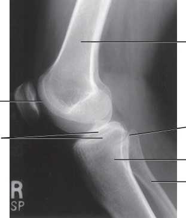
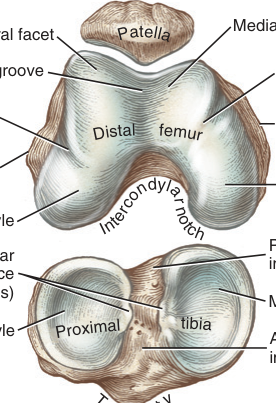
Các đặc điểm xương học của phần xa xương đùi (Osteologic Features of the Distal Femur)
Bao khớp (articular capsule) của khớp gối trải rộng bao quanh tất cả các mặt của khớp chày–đùi và khớp bánh chè–đùi (xem các đường nét đứt trong Hình 13.3). Về phía sau, bao khớp bám ngay phía trên (gần) các mỏm cầu xương đùi, ngay phía dưới (xa) mặt khoeo của xương đùi.
Mặc dù xương mác không có chức năng trực tiếp tại khớp gối, xương mảnh này đóng vai trò như một thanh nẹp mặt ngoài của xương chày và giúp duy trì sự thẳng đứng tương đối của xương này. Đầu trên xương mác (head of fibula) là chỗ bám của cơ nhị đầu đùi và dây chằng bên mác. Xương mác được gắn vào mặt ngoài của xương chày qua khớp chày–mác gần và khớp chày–mác xa (xem Hình 13.3). Cấu trúc và chức năng của các khớp này được thảo luận trong Chương 14.
Xương chày truyền phần lớn tải trọng giữa khớp gối và bàn chân. Đầu gần của xương chày nở ra thành hai mỏm cầu trong và ngoài, tạo thành các mặt khớp với phần xa xương đùi (xem Hình 13.3). Các mặt trên của hai mỏm cầu tạo thành một vùng rộng, thường được gọi là mâm chày (tibial plateau). Mâm chày đỡ hai mặt khớp nhẵn dùng để tiếp nhận các mỏm cầu xương đùi lớn, tạo thành các khoang trong và ngoài của khớp chày–đùi. Mặt khớp trong, lớn hơn, hơi lõm, trong khi mặt khớp ngoài phẳng đến hơi lồi. Các mặt khớp được ngăn cách dọc theo đường giữa bởi mào gian mỏm cầu (intercondylar eminence), được tạo bởi các lồi củ trong và ngoài có hình dạng không đều (xem Hình 13.2). Hai vùng gian mỏm cầu trước và sau nông nằm sát hai đầu của mào này. Các dây chằng chéo và sụn chêm bám dọc theo vùng gian mỏm cầu của xương chày.
Lồi củ chày (tibial tuberosity) nổi bật nằm trên mặt trước của thân phần gần xương chày (xem Hình 13.3A). Lồi củ chày là chỗ bám xa của cơ tứ đầu đùi thông qua gân bánh chè (patellar tendon). Sự hoạt hóa mạnh của cơ tứ đầu đùi trong các hoạt động chạy và nhảy có thể tạo ra lực căng lớn tại vị trí bám của gân bánh chè. Trong một số trường hợp, đặc biệt ở các vị thành niên đang tăng trưởng nhanh, lực căng này có thể gây viêm cục bộ và phì đại lồi củ chày, tạo thành một cục nổi rõ ngay phía dưới bánh chè. Tình trạng này thường được gọi là bệnh Osgood-Schlatter (Osgood-Schlatter disease).
Các đặc điểm xương học của phần gần xương chày và xương mác (Osteologic Features of the Proximal Tibia and Fibula)
Phần gần xương mác (Proximal fibula)
Phần gần xương chày (Proximal tibia)
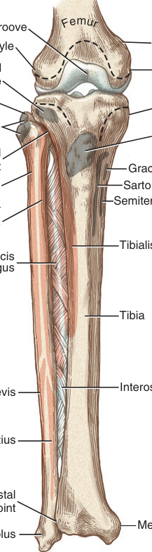
Trên mặt sau của phần gần xương chày là một đường cơ gan bàn chân (soleal line) nhám, chạy chéo theo hướng từ phía xa về phía trong (xem Hình 13.3B).
Bánh chè (patella) (từ tiếng Latin, nghĩa là "chiếc đĩa nhỏ") là một xương gần như hình tam giác nằm gọn trong gân cơ tứ đầu đùi (quadriceps tendon). Đây là xương vừng (sesamoid bone) lớn nhất trong cơ thể. Bánh chè có một nền cong ở phía trên và một chóp nhọn ở phía dưới (Hình 13.4 và 13.5). Gân bánh chè dày bám ở phía gần vào chóp của bánh chè và ở phía xa vào lồi củ chày. Ở tư thế đứng thả lỏng, chóp của bánh chè nằm ngay phía trên đường khớp gối (knee joint line). Mặt trước nằm dưới da của bánh chè lồi theo mọi hướng.
Các đặc điểm xương học của bánh chè (Osteologic Features of the Patella)
Mặt khớp sau của bánh chè được phủ bởi sụn khớp dày tới 4 đến 5 mm (xem Hình 13.5). Một phần mặt này khớp nối với rãnh ròng rọc của xương đùi, tạo thành khớp bánh chè–đùi. Lớp sụn dày này giúp phân tán các lực nén lớn đi qua khớp. Một gờ dọc tròn chạy dọc từ trên xuống dưới qua mặt sau của bánh chè. Ở hai bên gờ này là một mặt ngoài hoặc một mặt trong. Mặt ngoài lớn hơn và hơi lõm tương thích với đường viền tổng thể của mặt ngoài trên rãnh ròng rọc của xương đùi (xem Hình 13.2). Mặt trong thể hiện sự biến đổi giải phẫu đáng kể. Một mặt thứ ba, gọi là mặt "lạ" (odd facet), tồn tại dọc theo bờ trong cùng cực của mặt trong.
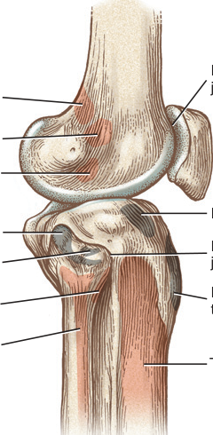
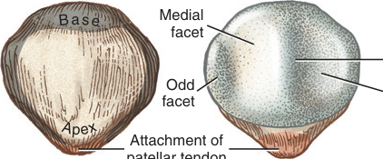
Thân xương đùi hơi nghiêng về phía trong khi đi xuống về phía khớp gối. Sự định hướng xiên này là kết quả của góc nghiêng tự nhiên 125 độ của phần gần xương đùi (Hình 13.6A). Do mặt khớp của phần gần xương chày được định hướng gần như nằm ngang, khớp gối tạo thành một góc ở phía ngoài của nó khoảng 170 đến 175 độ. Sự căn chỉnh bình thường này của khớp gối trong mặt phẳng trán được gọi là genu valgum (tư thế gối vẹt vào trong).
Sự biến đổi của sự căn chỉnh bình thường trong mặt phẳng trán tại khớp gối không phải là hiếm. Một góc ngoài nhỏ hơn 170 độ được gọi là genu valgum quá mức (excessive genu valgum), hay "chân chữ X" (knock-knee) (xem Hình 13.6B). Ngược lại, một góc ngoài vượt quá khoảng 180 độ được gọi là genu varum (tư thế gối vẹt ra ngoài), hay "chân vòng kiềng" (bow-leg) (xem Hình 13.6C).
Trục xoay dọc hoặc trục đứng dọc (longitudinal or vertical axis of rotation) tại khớp háng được định nghĩa trong Chương 12 là một đường nối chỏm xương đùi với tâm của khớp gối. Như được mô tả trong Hình 13.6A, trục dọc này có thể được kéo dài xuống dưới qua khớp gối đến khớp cổ chân và bàn chân. Trục này liên kết về mặt cơ học các chuyển động trong mặt phẳng ngang của các khớp chính của toàn bộ chi dưới.
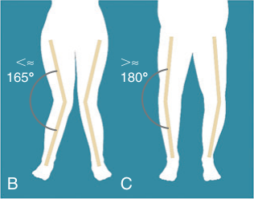
Ở vị trí chịu trọng lượng, các xoay trục mặt phẳng ngang xảy ra ở khớp háng, ví dụ, sẽ ảnh hưởng đến tư thế của các khớp trên khắp chi dưới, xa đến tận các khớp ở bàn chân, và ngược lại.
Bao khớp xơ của khớp gối bao quanh khoang khớp trong và khoang khớp ngoài của khớp chày–đùi (tibiofemoral joint) cũng như khớp bánh chè–đùi (patellofemoral joint). Các điểm bám gần và xa của bao khớp vào xương được chỉ ra bằng các đường nét đứt trong Hình 13.3A,B. Bao khớp của khớp gối nhận được sự gia cố đáng kể từ các cơ, dây chằng và mạc. Năm vùng được gia cố của bao khớp sẽ được mô tả dưới đây và được tóm tắt trong Bảng 13.1.
Bao khớp trước của khớp gối bám vào các mép của xương bánh chè và gân bánh chè (patellar tendon), được gia cố bởi cơ tứ đầu đùi và các sợi cân giữ bánh chè trong và ngoài (medial and lateral patellar retinacular fibers) (Hình 13.7). Các sợi cân giữ này là những phần mở rộng của mô liên kết bao phủ cơ rộng ngoài (vastus lateralis), cơ rộng trong (vastus medialis) và dải chậu–gối (iliotibial band). Tập hợp rộng lớn các sợi dạng lưới này có sự kết nối đến và giữa xương đùi, xương chày, xương bánh chè, gân cơ tứ đầu đùi và gân bánh chè, các dây chằng bên, và các sụn chêm.
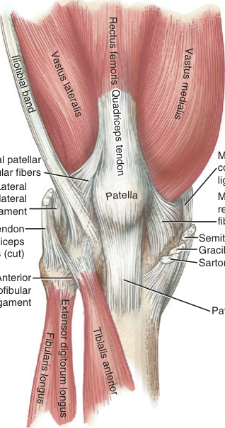
Bao khớp ngoài của khớp gối được gia cố bởi dây chằng bên mác (fibular collateral ligament), các sợi cân giữ bánh chè ngoài, và dải chậu–gối (Hình 13.8). Sự ổn định do cơ được cung cấp bởi cơ nhị đầu đùi, gân của cơ khoeo, và đầu ngoài của cơ bụng chân (gastrocnemius).
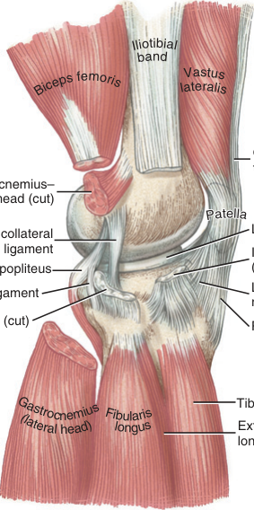
Bao khớp sau được gia cố bởi dây chằng khoeo chéo (oblique popliteal ligament) và dây chằng khoeo vòm (arcuate popliteal ligament) (Hình 13.9). Dây chằng khoeo chéo xuất phát phía trong từ bao khớp sau–trong và gân của cơ bán màng. Phía ngoài và phía trên, các sợi của nó hòa lẫn với bao khớp kề cạnh mỏm cầu xương đùi ngoài. Dây chằng này bị kéo căng ở tư thế duỗi gối hoàn toàn — một tư thế vốn tự nhiên bao gồm sự xoay ngoài nhẹ của xương chày so với xương đùi. Dây chằng khoeo vòm xuất phát từ đầu xương mác và chia thành hai nhánh. Nhánh lớn hơn và nổi bật hơn tạo thành một vòng cung (do đó có thuật ngữ "vòm" — arcuate) bắc qua gân của cơ khoeo để bám vào vùng gian mỏm cầu sau của xương chày. Một nhánh nhỏ hơn và không phải lúc nào cũng có mặt bám vào mặt sau của mỏm cầu xương đùi ngoài, và thường bám vào một xương mè (sesamoid bone) (hay fabella, nghĩa là "hạt đậu nhỏ") nằm lồng trong đầu ngoài của cơ bụng chân.
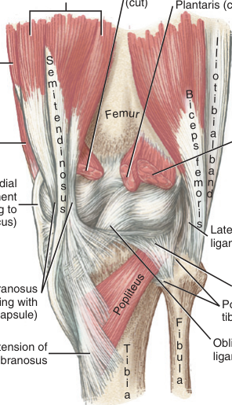
| Vùng của bao khớp (Region of the Capsule) | Sự gia cố bằng mô liên kết (Connective Tissue Reinforcement) | Sự gia cố bằng cơ–gân (Muscular-Tendinous Reinforcement) |
|---|---|---|
| Trước | Gân bánh chè Các sợi cân giữ bánh chè | Cơ tứ đầu đùi |
| Ngoài | Dây chằng bên mác Các sợi cân giữ bánh chè ngoài Dải chậu–gối | Cơ nhị đầu đùi Gân của cơ khoeo Đầu ngoài của cơ bụng chân |
| Sau | Dây chằng khoeo chéo Dây chằng khoeo vòm | Cơ khoeo Cơ bụng chân Gân kheo, đặc biệt là gân của cơ bán màng |
| Sau–ngoài | Dây chằng khoeo vòm Dây chằng bên mác Dây chằng khoeo–mác | Gân của cơ khoeo |
| Trong | Các sợi cân giữ bánh chè trong* Dây chằng bên chày Các sợi dày lên phía sau–trong† | Các phần mở rộng từ gân của cơ bán màng Các gân của cơ may, cơ mảnh và cơ bán gân |
* Thường được gọi là dây chằng bánh chè–đùi trong (medial patellofemoral ligament).
† Thường được gọi là bao khớp sau–trong (posterior-medial capsule) hoặc dây chằng chéo sau–trong (posterior oblique ligament).
Bao khớp sau còn được gia cố thêm bởi cơ khoeo, cơ bụng chân và các cơ gân kheo, đặc biệt là bởi các phần mở rộng xơ của gân cơ bán màng. Khác với khớp khuỷu, khớp gối không có điểm chặn xương trực tiếp chống lại sự vượt duỗi (hyperextension). Các cơ, dây chằng và bao khớp phía sau hạn chế sự vượt duỗi này.
Bao khớp sau–ngoài của khớp gối được gia cố bởi dây chằng khoeo vòm, dây chằng bên mác, và gân của cơ khoeo. Hơn nữa, dây chằng khoeo–mác (popliteofibular ligament) có kích thước thay đổi, bám giữa gân của cơ khoeo và đầu xương mác (Hình 13.8), mang lại sự ổn định đáng kể cho vùng này của khớp gối. Bao khớp sau–ngoài cùng với các bộ ổn định gân và dây chằng liên quan cấu thành cái thường được gọi là góc sau–ngoài (posterior-lateral corner) của khớp gối. LaPrade và cộng sự đã ước tính rằng các cấu trúc trong góc sau–ngoài của khớp gối có liên quan đến 16% tổng số các chấn thương khớp gối, thường đi kèm với các tổn thương ở các dây chằng khác, chẳng hạn như dây chằng bên chày hoặc dây chằng chéo.
Bao khớp trong của khớp gối kéo dài với độ dày thay đổi, từ gân bánh chè đến mép trong của bao khớp sau. Một phần ba trước của nó gồm một lớp mạc mỏng được gia cố bởi các sợi cân giữ bánh chè trong (Hình 13.10). Một phần ba giữa của bao khớp được gia cố bởi sự tiếp nối của các sợi cân giữ bánh chè trong và, một cách đáng kể hơn, bởi các sợi nông và sâu của dây chằng bên chày (medial collateral ligament) (các sợi sâu không được lộ ra trong Hình 13.10). Một phần ba sau của bao khớp tương đối dày, xuất phát gần lồi củ cơ khép và hòa lẫn với các phần mở rộng gân của cơ bán màng cùng bao khớp sau kề cạnh. Một phần ba sau của bao khớp trong được xác định tương đối rõ và thường được nhắc đến một cách chung chung là bao khớp sau–trong (như được chỉ trong Hình 13.10) hoặc, một cách cụ thể hơn, là dây chằng chéo sau–trong (posterior oblique ligament). Bao khớp sau–trong được gia cố bởi các gân hợp nhất dạng dẹt của cơ may, cơ mảnh và cơ bán gân — được gọi chung là các gân chân ngỗng (pes anserinus) (từ tiếng Latin, nghĩa là "bàn chân ngỗng"). Hai phần ba sau của bao khớp trong và các cấu trúc liên quan của nó cung cấp một nguồn ổn định quan trọng cho khớp gối.
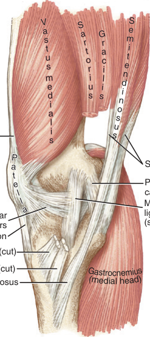
Mặt trong của bao khớp gối được lót bằng một màng hoạt dịch (synovial membrane). Sự tổ chức giải phẫu của màng này khá phức tạp, một phần là do sự phát triển phôi thai quanh co của khớp gối.
Khớp gối có tới 14 túi hoạt dịch (bursae), các túi này hình thành tại những điểm nối giữa các mô (inter-tissue junctions) gặp ma sát trong khi vận động. Các điểm nối giữa các mô này liên quan đến gân, dây chằng, da, xương, bao khớp và cơ (Bảng 13.2). Mặc dù một số túi hoạt dịch chỉ đơn giản là các phần mở rộng của màng hoạt dịch, những túi khác được hình thành bên ngoài bao khớp. Các hoạt động liên quan đến các lực quá mức và lặp đi lặp lại tại các điểm nối giữa các mô này có khả năng dẫn đến viêm túi hoạt dịch (bursitis) — tình trạng viêm của túi hoạt dịch.
| Điểm nối giữa các mô (Inter-Tissue Junction) | Các ví dụ (Examples) |
|---|---|
| Dây chằng và gân | Túi hoạt dịch giữa dây chằng bên mác và gân của cơ nhị đầu đùi Túi hoạt dịch giữa dây chằng bên chày và các gân chân ngỗng (tức là cơ mảnh, cơ bán gân và cơ may) |
| Cơ và bao khớp | Túi hoạt dịch không tên giữa đầu trong của cơ bụng chân và mặt trong của bao khớp |
| Xương và da | Túi hoạt dịch trước bánh chè dưới da (subcutaneous prepatellar bursa) giữa mép dưới của xương bánh chè và da |
| Gân và xương | Túi hoạt dịch cơ bán màng (semimembranosus bursa) giữa gân của cơ bán màng và mỏm cầu trong của xương chày |
| Xương và cơ | Túi hoạt dịch trên bánh chè (suprapatellar bursa) giữa xương đùi và cơ tứ đầu đùi (lớn nhất của khớp gối) |
| Xương và dây chằng | Túi hoạt dịch dưới bánh chè sâu (deep infrapatellar bursa) giữa xương chày và gân bánh chè |
Các đệm mỡ (fat pads) thường có liên quan đến các túi hoạt dịch xung quanh khớp gối. Mỡ và dịch hoạt dịch làm giảm ma sát giữa các phần đang vận động với nhau. Ở khớp gối, những đệm mỡ rộng nhất có liên quan đến túi hoạt dịch trên bánh chè và túi hoạt dịch dưới bánh chè sâu.
TẬP TRUNG ĐẶC BIỆT 13.1 — Sự phát triển các nếp gấp (plicae) của khớp gối (Development of Knee Plicae)
Trong quá trình phát triển phôi thai, khớp gối trải qua một sự biến đổi vật lý đáng kể. Các mô trung mô (mesenchymal tissues) dày lên rồi sau đó bị tái hấp thu, hình thành các khoang khớp nguyên thủy, các dây chằng và các sụn chêm. Việc tái hấp thu không hoàn toàn các mô trung mô trong quá trình phát triển tạo thành các mô được gọi là plicae. Các plicae, hay các nếp gấp hoạt dịch (synovial pleats), hiện ra như những nếp gấp trong các màng hoạt dịch. Plicae có thể rất nhỏ và không thể nhận biết được, hoặc lớn đến mức gần như tách khớp gối thành các khoang khớp trong và ngoài. Tài liệu báo cáo một khoảng biến động rộng về tỷ lệ có mặt của plicae trong khớp gối, từ 20% đến 70%. Plicae có thể có vai trò gia cố màng hoạt dịch của khớp gối, mặc dù đây chỉ là suy đoán. Ngoài khớp gối, các khớp hoạt dịch khác của cơ thể cũng có thể có plicae.
Ba plicae được mô tả phổ biến nhất trong khớp gối là: (1) plica trên, hay plica trên bánh chè (suprapatellar plica); (2) plica dưới, lần đầu được Vesalius gọi là ligamentum mucosum vào thế kỷ XVI; và (3) plica trong (medial plica). Plica trong nổi bật nhất được biết đến với khoảng 20 tên gọi, trong đó có dây chằng cánh (alar ligament), synovialis patellaris, và dải trong trong khớp (intra-articular medial band). Những plicae có kích thước bất thường lớn, hoặc bị dày lên do kích thích hay chấn thương, có thể gây đau khớp gối. Vì bệnh lý này xảy ra thường xuyên nhất ở plica trong, cơn đau thường được báo cáo ở vùng trước–trong của khớp gối. Nếu đặc biệt lớn, một số plica trong có thể nhìn thấy hoặc sờ nắm được dưới da. Các quan sát trong quá trình soi khớp (arthroscopy) cho thấy một plica trong phình to có thể gây mài mòn sụn khớp đối diện của mỏm cầu xương đùi trong. Viêm và đau ở plica trong có thể dễ dàng bị nhầm lẫn với viêm gân bánh chè (patellar tendonitis), sụn chêm trong bị rách, hoặc đau khớp bánh chè–đùi. Điều trị bao gồm nghỉ ngơi, thuốc kháng viêm, trị liệu thể chất, và trong một số trường hợp là cắt bỏ qua soi khớp (arthroscopic resection).
Khớp chày–đùi (tibiofemoral joint) gồm các khớp nối giữa các mỏm cầu xương đùi lớn, lồi và các mỏm cầu xương chày gần như phẳng và nhỏ hơn (xem Hình 13.4). Diện tích mặt khớp lớn của các mỏm cầu xương đùi cho phép khớp gối vận động rộng trong mặt phẳng đứng dọc (sagittal plane) cho các hoạt động như chạy, ngồi xổm và leo cầu thang. Sự ổn định khớp không được cung cấp nhờ sự khớp khít giữa các bề mặt xương, mà nhờ các lực và sự bao chứa vật lý do các cơ, dây chằng, bao khớp, sụn chêm và trọng lượng cơ thể cung cấp. Vì lý do này, chấn thương khớp gối thường kéo theo tổn thương nhiều mô mềm cùng một lúc.
Sụn chêm trong và sụn chêm ngoài (medial and lateral menisci) là những cấu trúc sụn sợi (fibrocartilage) hình lưỡi liềm nằm bên trong khớp gối (Hình 13.11). Hoạt động như những vòng đệm làm kín (gaskets), các sụn chêm biến đổi các mặt khớp của xương chày thành những chỗ ngồi nông để đón các mỏm cầu xương đùi lồi lớn hơn. Sự biến đổi này quan trọng nhất ở phía ngoài, do mặt khớp ngoài của xương chày có hình dạng từ phẳng đến hơi lồi.
Các sụn chêm được neo vào vùng gian mỏm cầu (intercondylar region) của xương chày bằng các đầu tự do của chúng, được gọi là sừng trước và sừng sau (anterior and posterior horns) (xem Hình 13.11B). Mép ngoài của mỗi sụn chêm bám vào xương chày và bao khớp kề cạnh bằng các dây chằng vành (coronary ligaments) (hay dây chằng sụn chêm–chày — meniscotibial ligaments) (xem Hình 13.11A). Các dây chằng vành tương đối lỏng, nhờ đó cho phép các sụn chêm — đặc biệt là sụn chêm ngoài — xoay trục tự do trong khi vận động. Một dây chằng ngang gối (transverse ligament) mảnh nối hai sụn chêm với nhau ở phía trước.
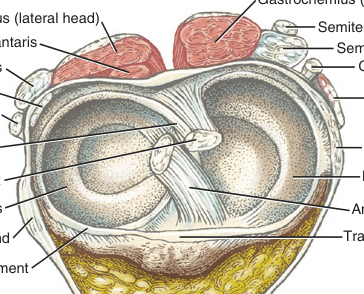
Một số cơ có các điểm bám thứ cấp vào các sụn chêm. Cơ tứ đầu đùi và cơ bán màng bám vào cả hai sụn chêm, trong khi cơ khoeo bám vào sụn chêm ngoài. Thông qua các điểm bám này, các cơ giúp ổn định các sụn chêm ở một vị trí tối đa hóa sự khớp hợp khớp (joint congruency).
Một phần ba ngoại vi (bên ngoài) của các sụn chêm nhận nguồn máu trực tiếp từ một loạt các động mạch gối (genicular arteries) nối tiếp với nhau (các nhánh của động mạch khoeo) xuyên qua bao khớp xung quanh. Vì vậy, vùng này của cả hai sụn chêm thường được các bác sĩ phẫu thuật gọi là "vùng đỏ" (red zone). Ngược lại, hai phần ba bên trong (sâu hơn) của các sụn chêm về cơ bản là không có mạch máu; cái gọi là "vùng trắng" (white zone) này chỉ nhận dinh dưỡng từ dịch hoạt dịch. Điểm nối hẹp giữa vùng đỏ và vùng trắng thường được gọi là "vùng hồng" (pink zone), do độ hoạt mạch của nó giảm đáng kể so với "vùng đỏ". Khả năng lành của sụn chêm sau tổn thương liên quan trực tiếp đến độ hoạt mạch cũng như đến mức độ nặng của tổn thương.
Hai sụn chêm có hình dạng và phương thức bám vào xương chày khác nhau. Sụn chêm trong có hình bầu dục, với mép ngoài bám vào mặt sâu của dây chằng bên chày và bao khớp kề cạnh; sụn chêm ngoài có hình dạng gần tròn hơn, với mép ngoài chỉ bám vào bao khớp ngoài. Gân của cơ khoeo đi qua giữa dây chằng bên mác và mép ngoài của sụn chêm ngoài (Hình 13.12).
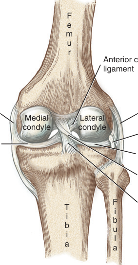
Chức năng chính của các sụn chêm là làm giảm ứng suất nén (compressive stress)* qua khớp chày–đùi. Các chức năng khác của sụn chêm gồm ổn định khớp trong khi vận động, bôi trơn sụn khớp, cung cấp nhận thức cảm giác bản thể (proprioception), và giúp dẫn hướng động học khớp (arthrokinematics) của khớp gối. Bằng cách tăng gần gấp ba diện tích tiếp xúc khớp, các sụn chêm làm giảm đáng kể áp lực (tức là lực trên một đơn vị diện tích) tác dụng lên sụn khớp.
* Trong suốt chương này, các thuật ngữ ứng suất (stress) và áp lực (pressure) được dùng thay thế cho nhau; cả hai đều được định nghĩa tương tự nhau là một lực (hoặc một lực căng) chia cho diện tích.
Phương pháp làm giảm áp suất đỉnh này rất cần thiết cho sức khỏe và sự bảo vệ của khớp gối, đặc biệt khi cân nhắc đến các lực tương đối lớn và lặp đi lặp lại mà khớp phải trải qua trong suốt một đời người. Chẳng hạn, lực nén ở khớp gối thường xuyên đạt 2,5 đến 3 lần trọng lượng cơ thể khi đi bộ và hơn 4 lần trọng lượng cơ thể khi leo cầu thang. Một hoạt động không chịu trọng lượng như đạp xe tại chỗ với công suất vừa phải tạo ra một lực ở khớp gối gần 1,2 lần trọng lượng cơ thể. Cắt bỏ toàn bộ sụn chêm ngoài (lateral meniscectomy) đã được chứng minh là làm tăng áp suất tiếp xúc đỉnh ở khớp gối thêm 230%, qua đó làm tăng nguy cơ phát triển viêm khớp liên quan đến ứng suất. Ngay cả một vết rách hoặc cắt bỏ một phần sụn chêm cũng làm tăng đáng kể ứng suất tại chỗ, vốn có thể gây mòn mỏi và hủy hoại quá mức sụn khớp. Khi có thể, phẫu thuật sửa chữa sụn chêm thay vì cắt bỏ các vùng bị tổn thương rõ ràng là lựa chọn điều trị được ưu tiên, ngay cả khi vết rách lan vào các vùng ít được cấp máu hơn. Trong một số trường hợp nhất định, sau khi cắt bỏ toàn bộ sụn chêm có thể chỉ định ghép đồng loại sụn chêm (meniscal allograft transplantation) (tức là một sụn chêm lấy từ người cho cùng loài nhưng không đồng nhất về mặt di truyền), với mục tiêu hạn chế sự thoái hóa của sụn khớp.
TẬP TRUNG ĐẶC BIỆT 13.2 — Dây chằng sụn chêm–đùi (Meniscofemoral Ligaments)
Sừng sau của sụn chêm ngoài thường được gắn vào mặt ngoài của mỏm cầu trong xương đùi bởi các dây chằng sụn chêm–đùi trước hoặc sau (anterior or posterior meniscofemoral ligaments). Các dây chằng sụn chêm–đùi được đặt tên theo vị trí của chúng so với dây chằng chéo sau (PCL), mà chúng chia sẻ các điểm bám trên xương đùi tương tự. Trong mẫu vật được minh họa ở Hình 13.11A, chỉ có dây chằng sụn chêm–đùi sau là hiện diện.
Các nghiên cứu trên tử thi cho thấy ít nhất một trong hai dây chằng sụn chêm–đùi hiện diện ở 92% số khớp gối, và cả hai cùng hiện diện ở 32%. Dây chằng sụn chêm–đùi sau thường là cấu trúc vững chắc hơn trong hai cấu trúc. Sau khi phát xuất từ sừng sau của sụn chêm ngoài, dây chằng sụn chêm–đùi sau bám vào xương đùi ngay phía sau và hơi phía trong so với dây chằng chéo sau (xem Hình 13.12). Các dây chằng sụn chêm–đùi đôi khi là điểm bám xương duy nhất của sừng sau sụn chêm ngoài. Chức năng chính xác của các dây chằng sụn chêm–đùi chưa được xác định rõ. Hoạt động phối hợp với cơ khoeo, các dây chằng này có thể giúp ổn định sừng sau của sụn chêm ngoài trong khi chuyển động. Ngoài ra, các dây chằng này có thể cung cấp sự ổn định động thứ cấp (và có lẽ tương đối nhỏ) trong mặt phẳng đứng dọc cho khớp gối — một giả định dựa trên các nghiên cứu cho thấy dây chằng trước căng hơn khi gập và dây chằng sau căng hơn khi duỗi.
Khớp chày–đùi (khớp gối) có hai bậc tự do: gập và duỗi trong mặt phẳng đứng dọc, và — với điều kiện khớp gối ở tư thế gập ít nhất một chút — xoay trong và xoay ngoài. Chuyển động trong mặt phẳng trán ở khớp gối chỉ xảy ra một cách bị động, giới hạn trong khoảng 6 đến 7 độ.
Gập và duỗi ở khớp gối xảy ra quanh một trục xoay trong–ngoài cho cả hai tình huống xương chày trên xương đùi và xương đùi trên xương chày (Hình 13.13). Biên độ chuyển động thay đổi theo tuổi và giới tính, nhưng nhìn chung khớp gối khỏe mạnh chuyển động từ 130 đến 150 độ gập đến khoảng 5 đến 10 độ vượt quá vị trí 0 độ (thẳng).
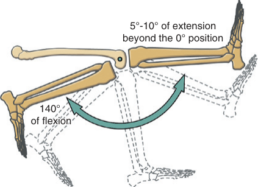
Trục xoay trong–ngoài cho gập và duỗi không cố định mà dịch chuyển bên trong các mỏm cầu xương đùi. Đường cong của trục được gọi là đường tiến (“evolute”) (Hình 13.14). Đường đi của trục xoay chịu ảnh hưởng của độ cong lệch tâm (không tròn đều) của các mỏm cầu xương đùi. Như đã mô tả ở Chương 2, một trục xoay có thể dịch chuyển nhẹ là điều phổ biến hơn là ngoại lệ đối với phần lớn các khớp trong cơ thể. Chương 2 cũng minh họa một phương pháp ước lượng trục xoay ở khớp gối dựa trên một loạt phim X-quang trước–sau (AP).
Trục xoay dịch chuyển mang những hàm ý sinh cơ học và lâm sàng. Về mặt sinh cơ học, trục dịch chuyển làm thay đổi chiều dài cánh tay đòn mô men trong của các cơ gập và cơ duỗi khớp gối. Sự thật này có thể giải thích một phần vì sao mô men trong ở mức tối đa thay đổi trong suốt biên độ chuyển động. Về mặt lâm sàng, nhiều thiết bị bên ngoài gắn vào khớp gối, chẳng hạn thước đo góc khớp (goniometer), máy đo đẳng tốc (isokinetic testing device), hoặc dụng cụ chỉnh hình khớp gối có bản lề (hinged knee orthosis), xoay quanh một trục xoay cố định. Do đó, trong quá trình chuyển động của khớp gối, các thiết bị bên ngoài này có thể xoay theo một cung hơi khác so với cẳng chân. Hệ quả là, chẳng hạn, một dụng cụ chỉnh hình có bản lề có thể hoạt động như một piston tương đối với cẳng chân, gây cọ xát và trầy xước da. Để hạn chế hậu quả này, cần cẩn trọng căn chỉnh trục cố định của thiết bị bên ngoài sát nhất có thể với trục xoay “trung bình” của khớp gối, vốn nằm gần mỏm trên cầu ngoài của xương đùi.
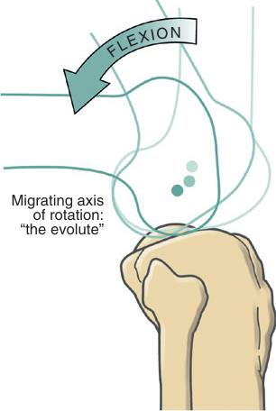
Nghiên cứu sử dụng các khớp gối tử thi chịu các động lực học và động học như xảy ra trong pha đỡ của đi bộ cho thấy sụn chêm chịu ứng suất ổn định nhất gần sừng sau của chúng. Vùng này và tất cả các vùng của sụn chêm đều biến dạng theo hướng chu vi khi bị nén, như một cách để phân tán một phần ứng suất vốn có của việc đi bộ. Cơ chế làm giảm ứng suất này cho phép một phần ứng suất nén ở khớp gối được hấp thụ dưới dạng lực căng chu vi (gọi là ứng suất vòng, hoop stress) chạy quanh toàn bộ mỗi sụn chêm. Các nghiên cứu chỉ ra rằng một sụn chêm trong bị rách, đáng chú ý nhất khi có vết rách kiểu bứt ra (avulsion) ở sừng sau, sẽ mất khả năng tối ưu trong việc chống lại ứng suất vòng, qua đó giảm khả năng bảo vệ sụn khớp và xương nằm bên dưới.
Vết rách sụn chêm là chấn thương phổ biến nhất của khớp gối, xảy ra tương đối thường xuyên ở cả nhóm vận động viên và dân số chung. Theo các nghiên cứu được Lohmander và cộng sự trích dẫn, 50% tổng số chấn thương cấp tính của dây chằng chéo trước có kèm theo một chấn thương đồng thời của sụn chêm. Nhìn chung, vết rách sụn chêm thường liên quan đến một sự xoay trục mạnh của các mỏm cầu xương đùi trên một khớp gối đang gập và chịu trọng lượng. Mô men xoay trục bên trong khớp gối đang bị nén có thể kẹp và làm cho sụn chêm bật khỏi vị trí. Một mảnh sụn chêm bật ra hoặc gập lại thành nếp (thường được gọi là vết rách kiểu “quai xô”, bucket-handle tear) có thể chặn cản cơ học chuyển động của khớp gối.
Sụn chêm trong bị chấn thương nhiều gấp đôi sụn chêm ngoài. Cơ chế chấn thương của vết rách sụn chêm trong thường liên quan đến xoay trục, và cũng có thể liên quan đến một lực bên ngoài tác động vào mặt ngoài của khớp gối. Lực này — thường được mô tả là lực valgus (valgus force) — có thể gây ra một tư thế valgus quá mức của khớp gối và sau đó là ứng suất lớn lên dây chằng bên chày và bao khớp sau–trong. Do các liên kết giải phẫu giữa sụn chêm trong và các mô liên kết này, một lực valgus đáng kể tác động vào khớp gối có thể gián tiếp làm căng giãn và qua đó làm tổn thương sụn chêm trong.
Nguy cơ phát triển các vết rách ở sụn chêm của khớp gối tăng lên nếu khớp gối bị lệch trục hoặc có tiền sử mất ổn định dây chằng, đáng chú ý nhất là dây chằng chéo trước.
Xoay trong và xoay ngoài của khớp gối cần được mô tả cho cả hai góc nhìn xương chày trên xương đùi và xương đùi trên xương chày (Hình 13.15). Các động học này xảy ra như một sự xoay trong một mặt phẳng vuông góc với một trục dọc song song với thân xương chày. Vị trí chính xác của trục xoay khi nó song song với xương chày chưa được xác định rõ, mặc dù có vẻ như nó chịu ảnh hưởng của chuyển động gập–duỗi kèm theo của khớp gối trong mặt phẳng đứng dọc.
Thuật ngữ “xoay trục” (axial rotation) thường được dùng để mô tả các động học xương được minh họa ở Hình 13.15. Thực tế rất ít — nếu có — xoay trục đáng kể xảy ra giữa xương chày và xương đùi khi khớp gối duỗi hoàn toàn. Chuyển động xoay này bị cản trở bởi sức căng thụ động của các dây chằng và mô bao khớp đang căng, cũng như bởi độ tương hợp xương tăng lên bên trong khớp. Tuy nhiên, độ tự do xoay trục tăng đáng kể khi khớp gối được gập dần. Ví dụ, một khớp gối gập 90 độ có thể thực hiện khoảng 40 đến 45 độ xoay trục tổng cộng. Biên độ xoay ngoài nhìn chung vượt quá xoay trong với tỉ lệ gần 2 : 1.
Như được minh họa ở Hình 13.15, xoay trục của khớp gối xảy ra bằng xoay kiểu xương chày trên xương đùi hoặc kiểu xương đùi trên xương chày. Xoay trục của khớp gối cung cấp một yếu tố chức năng quan trọng về tính linh hoạt cho toàn bộ chi dưới. Thuật ngữ dùng để mô tả xoay trục của khớp gối rất quan trọng và cần được hiểu đúng. Theo quy tắc, cách gọi tên xoay trục của khớp gối dựa trên vị trí của lồi củ chày (tibial tuberosity) so với phần trước–xa của xương đùi. Ví dụ, xoay ngoài của khớp gối xảy ra khi lồi củ chày nằm ở phía ngoài so với phần trước–xa của xương đùi. Tuy nhiên, quy tắc này không quy định xương đùi hay xương chày là xương chuyển động; nó chỉ quy định hướng khớp tương đối của khớp gối đã xoay. Để minh chứng, hãy so sánh xoay ngoài của khớp gối ở phần A và B của Hình 13.15. Xoay ngoài kiểu xương chày trên xương đùi của khớp gối xảy ra khi xương chày xoay ngoài so với xương đùi đứng yên. Mặt khác, xoay ngoài kiểu xương đùi trên xương chày của khớp gối xảy ra khi xương đùi xoay trong so với xương chày (và bàn chân) đứng yên. Cả hai ví dụ đều phù hợp với định nghĩa xoay ngoài của khớp gối, vì cả hai chuyển động đều tạo ra một hướng khớp tương tự nhau: lồi củ chày nằm ở phía ngoài so với phần trước–xa của xương đùi. Sự phân biệt giữa xoay xương (xương chày hoặc xương đùi) và xoay khớp gối luôn phải được làm rõ để tránh hiểu nhầm. Điểm này đặc biệt quan trọng khi mô tả động học xương kiểu xương đùi trên xương chày.
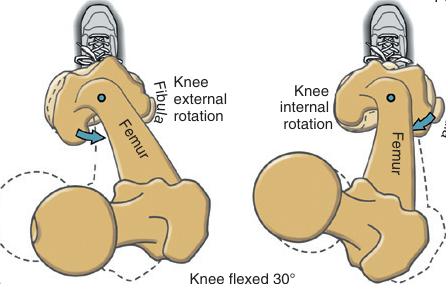
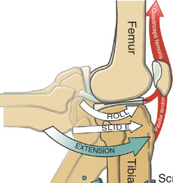
Hình 13.16 mô tả các động học khớp của 90 độ cuối cùng của duỗi khớp gối chủ động. Trong duỗi kiểu xương chày trên xương đùi, mặt khớp của xương chày lăn và trượt về phía trước trên các mỏm cầu xương đùi (xem Hình 13.16A). Sụn chêm được minh họa đang bị kéo về phía trước bởi cơ tứ đầu đùi đang co.
Trong duỗi kiểu xương đùi trên xương chày, như khi đứng dậy từ tư thế ngồi xổm sâu, các mỏm cầu xương đùi đồng thời lăn về phía trước và trượt về phía sau trên mặt khớp của xương chày (xem Hình 13.16B). Các động học khớp “triệt tiêu lẫn nhau” này giới hạn độ lớn của dịch chuyển về phía trước của xương đùi trên xương chày. Cơ tứ đầu đùi dẫn dắt chuyển động lăn của các mỏm cầu xương đùi và giữ sụn chêm ổn định trước lực trượt ngang do xương đùi trượt tạo ra.
Khóa khớp gối ở vị trí duỗi hoàn toàn đòi hỏi khoảng 10 độ xoay ngoài. Hành động khóa bằng xoay này từ trước đến nay được gọi là xoay “xoắn vít” (screw-home rotation), dựa trên sự vặn xoắn quan sát được của khớp gối trong khoảng 30 độ cuối cùng của duỗi. Xoay ngoài được mô tả ở đây khác biệt căn bản với xoay trục được minh họa ở Hình 13.15. Xoay “xoắn vít” (xoay ngoài) được mô tả là một xoay liên hợp (conjunct rotation), nhấn mạnh thực tế rằng nó được liên kết về mặt cơ học (hay ghép cặp) với động học gập và duỗi và không thể được thực hiện một cách độc lập. Sự kết hợp giữa xoay ngoài và duỗi khớp gối tối đa hóa tổng diện tích tiếp xúc của khớp gối người trưởng thành: 375 mm² ở khớp chày–đùi trong và khoảng 275 mm² ở khớp chày–đùi ngoài. Vị trí duỗi cuối cùng này làm tăng độ tương hợp khớp và thuận lợi cho sự ổn định.
Để quan sát xoay “xoắn vít” ở khớp gối, hãy nhờ một người bạn ngồi với khớp gối gập khoảng 90 độ. Vẽ một đường trên da giữa lồi củ chày và đỉnh của bánh chè. Sau khi người bạn hoàn tất duỗi kiểu xương chày trên xương đùi hết cỡ, vẽ lại đường này giữa cùng các mốc giải phẫu và ghi nhận sự thay đổi vị trí của xương chày đã xoay ngoài. Một cơ chế khóa tương tự nhưng ít rõ rệt hơn cũng hoạt động trong duỗi kiểu xương đùi trên xương chày (so sánh phần A và B của Hình 13.16). Ví dụ, khi một người đứng dậy từ tư thế ngồi xổm, khớp gối khóa vào vị trí duỗi khi xương đùi xoay trong so với xương chày cố định. Bất kể đùi hay cẳng chân là đoạn chi chuyển động, cả hai chuyển động duỗi khớp gối được minh họa ở Hình 13.16A,B đều cho thấy một khớp gối tương đối xoay ngoài khi duỗi hoàn toàn.
Cơ chế xoắn vít của khớp gối được dẫn dắt bởi ít nhất ba yếu tố: hình dạng của mỏm cầu trong xương đùi, sức căng thụ động của dây chằng chéo trước, và lực kéo hơi lệch về phía ngoài của cơ tứ đầu đùi (Hình 13.17). Yếu tố quan trọng nhất (hoặc ít nhất là rõ ràng nhất) là hình dạng của mỏm cầu trong xương đùi. Như được minh họa ở Hình 13.17B, mặt khớp của mỏm cầu trong xương đùi cong khoảng 30 độ về phía ngoài khi tiến đến gần rãnh ròng rọc (trochlear groove). Vì mặt khớp của mỏm cầu trong kéo dài xa hơn về phía trước so với mỏm cầu ngoài, xương chày buộc phải “đi theo” đường cong lệch ngoài này vào vị trí duỗi kiểu xương chày trên xương đùi hoàn toàn. Trong duỗi kiểu xương đùi trên xương chày, xương đùi đi theo một đường cong lệch trong trên xương chày. Trong cả hai trường hợp, kết quả đều là xoay ngoài của khớp gối ở vị trí duỗi hoàn toàn (xem Video 13.1).
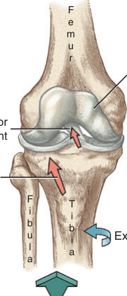
Các động học khớp của gập khớp gối xảy ra theo kiểu ngược lại với những gì được minh họa ở Hình 13.16. Để một khớp gối đang duỗi hoàn toàn được mở khóa, khớp trước tiên phải xoay trong một chút. Hành động này được dẫn dắt chủ yếu bởi cơ khoeo. Cơ này có thể xoay xương đùi ra ngoài để khởi đầu gập kiểu xương đùi trên xương chày, hoặc xoay xương chày vào trong để khởi đầu gập kiểu xương chày trên xương đùi.
Như đã mô tả trước đó, khớp gối phải được gập để tối đa hóa xoay trục độc lập giữa xương chày và xương đùi. Khi khớp gối đã gập, các động học khớp của xoay trong và xoay ngoài chủ yếu là một chuyển động quay tại chỗ (spin) giữa sụn chêm và các mặt khớp của xương chày và xương đùi. Xoay trục của xương đùi trên xương chày làm cho sụn chêm biến dạng nhẹ, khi chúng bị nén và bị biến dạng nhẹ bởi các mỏm cầu xương đùi đang quay tại chỗ. Sụn chêm được ổn định nhờ các liên kết từ các cơ hoạt động như cơ khoeo và cơ bán màng.
Dây chằng bên chày (dây chằng bên trong, tibial/medial collateral ligament, MCL) là một cấu trúc phẳng, rộng trải qua mặt trong của khớp. Mặc dù các thuật ngữ khác nhau cùng tồn tại, chương này mô tả MCL gồm một phần nông và một phần sâu.
Ở phía xa, dây chằng bên mác (LCL) hòa vào gân của cơ nhị đầu đùi. Không giống như dây chằng bên chày (MCL) — cấu trúc đối ứng phía trong của nó — dây chằng bên mác thường không bám vào sụn chêm ngoài kề cận (xem Hình 13.12). Như đã đề cập trước đó, gân của cơ khoeo chạy xuyên qua giữa sụn chêm ngoài và dây chằng bên mác.
Xem xét chức năng (Functional Considerations)
Chức năng chính của các dây chằng bên là hạn chế các chuyển động quá mức của gối trong mặt phẳng trán. Khi gối ở tư thế gần duỗi hoàn toàn hoặc duỗi hoàn toàn, dây chằng bên chày (MCL) cung cấp lực kháng chính chống lại một lực valgus (valgus, dạng [abduction]). Ngược lại, dây chằng bên mác cung cấp lực kháng chính chống lại một lực varus (varus, khép [adduction]). Bảng 13.3 liệt kê một số mô khác cũng cung cấp sự kháng cự chống lại các lực valgus và varus tác dụng lên gối.
| Lực valgus (dạng) | Lực varus (khép) |
|---|---|
| Lực kháng chính: Dây chằng bên chày: • các sợi nông, đặc biệt khi gối gập 20–30 độ • các sợi sâu, đặc biệt khi gối duỗi hoàn toàn | Lực kháng chính: Dây chằng bên mác |
| Lực kháng thứ cấp: Bao khớp sau–trong (gồm gân cơ bán màng) Dây chằng chéo trước và sau Tiếp xúc khớp phía trong (nén sụn chêm trong) Các sợi mạc giữ trong (medial retinacular fibers) Chân ngỗng (tức các gân của cơ may, cơ mảnh và cơ bán gân) Cơ bụng chân (đầu trong) | Lực kháng thứ cấp: Góc sau–ngoài của gối (gồm bao khớp sau–ngoài, dây chằng khoeo vòm, dây chằng bên mác, dây chằng khoeo–mác [popliteofibular ligament] và gân cơ khoeo) Dải chậu–gối (iliotibial band) Gân cơ nhị đầu đùi Dây chằng chéo trước và sau Tiếp xúc khớp phía ngoài (nén sụn chêm ngoài) Cơ bụng chân (đầu ngoài) |
*Giả định gối ở tư thế gần duỗi hoàn toàn hoặc duỗi hoàn toàn.
Một chức năng thứ cấp của các dây chằng bên trong và ngoài là tạo ra một lực căng ổn định tổng quát cho gối khi gối gần duỗi hoàn toàn hoặc duỗi hoàn toàn. Mặc dù một số sợi tạo nên dây chằng bên chày rất rộng vẫn căng trong suốt một cung rộng của các chuyển động gập và duỗi gối, phần lớn các sợi nằm hơi phía sau trục xoay trong–ngoài của gối và do đó bị kéo căng nhất khi gối duỗi hoàn toàn hoặc gần duỗi hoàn toàn. Sự căng tự nhiên này của phần lớn MCL ở tư thế gần duỗi hoàn toàn cung cấp một mức ổn định bảo vệ nào đó cho gối, chẳng hạn trong pha tiếp nhận tải trọng (load acceptance) sớm của việc đi bộ. Những cấu trúc khác cũng trở nên căng hơn khi duỗi hoàn toàn là bao khớp sau–trong, dây chằng khoeo chéo (đại diện cho bao khớp sau), các cơ gập gối và các thành phần của dây chằng chéo trước. Hình 13.18 minh họa các mô này ở trạng thái tương đối lỏng khi gập (A) và căng hơn khi gối đạt vị trí khóa của duỗi hoàn toàn kiểu xương đùi trên xương chày (femoral-on-tibial) (B). Duỗi hoàn toàn — vốn bao gồm các động học của sự xoay xoắn vít (screw-home rotation) — làm giãn dài các dây chằng bên khoảng 20% so với chiều dài của chúng khi gập hoàn toàn. Mặc dù là một bộ ổn định có giá trị khi duỗi hoàn toàn, một MCL căng cùng bao khớp sau–trong ở tư thế duỗi lại đặc biệt dễ bị tổn thương bởi một tải trọng valgus (tức tải trọng dạng) truyền qua một bàn chân đang chống đỡ chắc chắn. Đây là cơ chế chấn thương thường gặp của các cấu trúc phía trong của gối cũng như của dây chằng chéo trước, do một pha phạm quy "clipping" (húc cản từ sau–bên) trong bóng bầu dục Mỹ.
Các dây chằng bên và bao khớp kề cận cũng cung cấp lực kháng chống lại các mức cực đại của xoay trong và xoay ngoài của gối. Đáng chú ý nhất về mặt này là sự giãn dài và sự tăng căng thụ động tiếp theo đó ở các sợi của MCL tại các mức cực đại của xoay ngoài gối. Chẳng hạn, đặt bàn chân phải chắc chắn trên mặt đất rồi xoay mạnh xương đùi (và thân người) chồng lên về phía trái có thể gây tổn thương các sợi nông của MCL phải. Nguy cơ tổn thương này tăng lên nếu gối đang xoay ngoài (tức xương đùi xoay trong) đồng thời chịu một tải trọng valgus đáng kể.
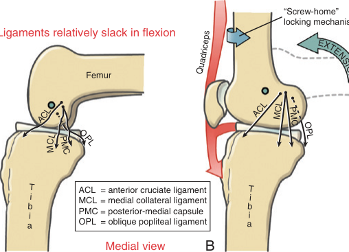
Bảng 13.4 trình bày một bản tóm tắt các chức năng và các cơ chế chấn thương thường gặp của các dây chằng chính của gối, bao gồm cả bao khớp sau–trong và bao khớp sau.
| Cấu trúc | Chức năng | Cơ chế chấn thương thường gặp |
|---|---|---|
| Dây chằng bên chày (và bao khớp sau–trong) | 1. Kháng cự lực valgus (dạng) 2. Kháng cự duỗi gối 3. Kháng cự các mức cực đại của xoay trục (đặc biệt là xoay ngoài gối) | 1. Lực tạo valgus khi bàn chân đang chống đỡ (ví dụ, pha "clip" trong bóng bầu dục) 2. Duỗi quá mức (hyperextension) nặng của gối |
| Dây chằng bên mác | 1. Kháng cự lực varus (khép) 2. Kháng cự duỗi gối 3. Kháng cự các mức cực đại của xoay trục | 1. Lực tạo varus khi bàn chân đang chống đỡ 2. Duỗi quá mức nặng của gối |
| Bao khớp sau | 1. Kháng cự duỗi gối 2. Dây chằng khoeo chéo kháng cự xoay ngoài gối 3. Bao khớp sau–ngoài kháng cự lực varus | 1. Duỗi quá mức, hoặc duỗi quá mức kết hợp xoay ngoài của gối |
| Dây chằng chéo trước | 1. Phần lớn các sợi kháng cự duỗi gối (tức chống sự dịch chuyển trước quá mức của xương chày, sự dịch chuyển sau của xương đùi, hoặc tổ hợp cả hai) 2. Kháng cự các mức cực đại của varus, valgus và xoay trục | 1. Lực tạo valgus lớn khi bàn chân chống đỡ chắc chắn 2. Mô men xoay trục lớn tác dụng lên gối (theo một trong hai hướng xoay) khi bàn chân chống đỡ chắc chắn 3. Bất kỳ tổ hợp nào của các cơ chế trên, đặc biệt khi có sự co mạnh của cơ tứ đầu đùi với gối ở tư thế duỗi hoàn toàn hoặc gần hoàn toàn 4. Duỗi quá mức nặng của gối |
| Dây chằng chéo sau | 1. Phần lớn các sợi kháng cự gập gối (tức chống sự dịch chuyển sau quá mức của xương chày hoặc sự dịch chuyển trước của xương đùi, hoặc tổ hợp cả hai) 2. Kháng cự các mức cực đại của varus, valgus và xoay trục | 1. Ngã trên một gối gập hoàn toàn (với cổ chân gập lòng bàn chân hoàn toàn) sao cho phần gần xương chày chạm đất trước 2. Bất kỳ sự kiện nào gây ra sự dịch chuyển sau mạnh của xương chày (tức chấn thương kiểu "bảng đồng hồ" [dashboard injury]) hoặc sự dịch chuyển trước của xương đùi, đặc biệt khi gối đang gập 3. Mô men xoay trục lớn hoặc mô men valgus–varus tác dụng lên gối khi bàn chân chống đỡ chắc chắn, đặc biệt khi gối đang gập 4. Duỗi quá mức nặng của gối gây ra một khoảng mở lớn ở phía sau khớp |
Những cân nhắc chung (General Considerations)
Cruciate, có nghĩa là hình chữ X (cross-shaped), mô tả mối quan hệ không gian của dây chằng chéo trước và dây chằng chéo sau khi chúng bắt chéo nhau trong hố gian mỏm cầu (intercondylar notch) của xương đùi (Hình 13.19). Các dây chằng chéo nằm trong bao khớp (intracapsular) và được phủ bởi một màng hoạt dịch rộng. Các dây chằng này có nguồn cung cấp máu tương đối kém, bắt nguồn chủ yếu từ động mạch gối trong (medial genicular artery). Phần lớn máu đến được các dây chằng được vận chuyển qua các mạch nhỏ nằm lồng trong một màng hoạt dịch rộng lót các dây chằng này.
Các dây chằng chéo được đặt tên theo chỗ bám của chúng trên xương chày (xem Hình 13.11). Cả hai dây chằng đều dày và chắc, phản ánh vai trò quan trọng của chúng trong việc cung cấp sự ổn định cho gối. Ví dụ, dây chằng chéo trước ở người trưởng thành trẻ tuổi có thể chịu được tải trọng kéo khoảng 1800 N (405 pound) trước khi đứt, với sự đứt gãy xảy ra hoặc trong thân dây chằng hoặc tại mặt nối dây chằng–xương.
Khi hoạt động cùng nhau, dây chằng chéo trước và dây chằng chéo sau kháng cự các mức cực đại của về cơ bản tất cả các chuyển động của gối (xem lại Bảng 13.4). Tuy nhiên, quan trọng nhất, các dây chằng chéo cung cấp phần lớn lực kháng chống lại các lực trượt trước–sau được tạo ra giữa xương chày và xương đùi. Các lực này vốn có trong động học tự nhiên của mặt phẳng đứng dọc gắn liền với việc đi bộ, chạy, ngồi xổm và nhảy. Hơn nữa, hướng đi chéo và bắt chéo của các dây chằng này cũng cho phép chúng ổn định gối trong các chuyển động tiềm tàng tính gây căng thẳng trong các mặt phẳng trán và ngang, chẳng hạn những chuyển động có thể xảy ra trong các pha xoay người và "cắt chéo" (cutting) sang bên.
Ngoài việc cung cấp sự ổn định động thiết yếu cho gối, lực căng trong dây chằng chéo trước và sau còn giúp dẫn dắt động học khớp của gối. Hơn nữa, vì các dây chằng chéo chứa các cảm thụ cơ học (mechanoreceptors), chúng gián tiếp cung cấp cho hệ thần kinh các phản hồi về cảm giác bản thể (proprioception). Ngoài việc giúp kiểm soát chuyển động, các thụ cảm cảm giác này còn có thể có vai trò bảo vệ bằng cách phản xạ hạn chế hoạt hóa cơ có thể tạo ra một biến dạng kéo lớn và có khả năng gây tổn thương lên các dây chằng.
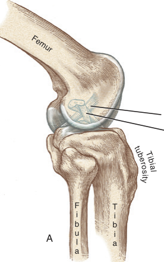
Chức năng chung của dây chằng chéo trước và sau (General Functions of the Anterior and Posterior Cruciate Ligaments)
Giải phẫu và chức năng (Anatomy and Function)
Dây chằng chéo trước (ACL) bám dọc theo một chỗ lõm trên vùng gian mỏm cầu trước (anterior intercondylar area) của mâm chày. Từ chỗ bám này, dây chằng chạy chéo theo hướng sau, trên và ngoài để bám vào mặt trong của mỏm cầu ngoài xương đùi (xem Hình 13.19). Các sợi collagen trong ACL xoắn vào nhau, tạo thành các bộ bó sợi xoắn (spiraling bundles) riêng biệt, được cấu tạo chủ yếu từ collagen loại I. Mặc dù số lượng và cách mô tả khác nhau đã được báo cáo, phần lớn các tác giả nêu hai bộ bó sợi trong ACL: trước–trong và sau–ngoài, được đặt tên theo các chỗ bám tương đối của chúng trên xương chày.
Lực căng, độ xoắn và hướng không gian tổng thể của các bó sợi trong ACL thay đổi khi gối gập và duỗi. Tại bất kỳ điểm nào trong tầm chuyển động của mặt phẳng đứng dọc, một số sợi của ACL căng ở mức tương đối. Tuy nhiên, phần lớn các sợi, đặc biệt là những sợi thuộc bó sau–ngoài, ngày càng căng hơn khi gối tiến tới và đạt duỗi hoàn toàn. Những sợi này lỏng đi khi gối được gập dần. Ngoài phần lớn các sợi của ACL, bao khớp sau, các phần của dây chằng bên và tất cả các cơ gập gối cũng trở nên căng tương đối ở tư thế duỗi, điều này giúp ổn định gối, đặc biệt trong các hoạt động chống đỡ trọng lượng cơ thể (được xem lại trong Hình 13.18B). Duỗi gối vượt quá vị trí giải phẫu trung tính còn làm giãn dài và kéo giãn thêm các mô này.
Trong khoảng 50 đến 60 độ cuối của duỗi gối hoàn toàn, lực chủ động được tạo ra bởi cơ tứ đầu đùi đang co kéo xương chày về phía trước, qua đó thúc đẩy động học khớp trượt trước (anterior slide) (Hình 13.20A). Lực căng phát sinh trong các sợi bị kéo giãn của ACL giúp hạn chế mức độ trượt trước này. Về mặt lâm sàng, thật hữu ích khi nhận thức được sự tương đồng chung giữa lực hướng trước đặt lên ACL do sự co cơ tứ đầu đùi và lực kéo hướng trước tác dụng lên xương chày khi một nhà lâm sàng thực hiện nghiệm pháp kéo trước (anterior drawer test) (xem Hình 13.20B). Nghiệm pháp này là một trong vài nghiệm pháp được các nhà lâm sàng sử dụng để đánh giá mức độ lỏng trước tương đối ở một gối nghi ngờ ACL bị tổn thương. Thành phần cơ bản của nghiệm pháp gồm việc kéo đầu gần của xương chày (cẳng chân) về phía trước với gối gập khoảng 90 độ. Ở gối bình thường, ACL cung cấp khoảng 85% tổng lực kháng thụ động chống lại sự dịch chuyển trước của xương chày. Một sự dịch chuyển trước lớn hơn 8 mm (khoảng 1/3 inch) so với gối bên đối diện gợi ý khả năng rách dây chằng chéo trước. Như được minh họa trong Hình 13.20B, co cứng bảo vệ (protective spasm) ở các cơ gân kheo có thể hạn chế sự dịch chuyển trước của xương chày, do đó che giấu một ACL đã bị rách.
Về mặt lâm sàng, cơ tứ đầu đùi thường được gọi là một "đối kháng của ACL" (ACL antagonist). Cách gọi này phản ánh thực tế rằng lực co của cơ tứ đầu đùi tại các góc gập tương đối thấp kéo giãn (hoặc đối kháng) phần lớn các sợi của ACL. Các nghiên cứu đã báo cáo một biến dạng kéo (strain, tức độ giãn dài tương đối) 4,4% của ACL sau một lần hoạt hóa đẳng trục với sức tối đa của cơ tứ đầu đùi ở 15 độ gập. Mức biến dạng này sẽ tăng lên do một lần co mạnh của cơ tứ đầu đùi đưa xương chày đột ngột vào duỗi gối hoàn toàn. Khả năng làm căng ACL của cơ tứ đầu đùi là lớn nhất ở tư thế duỗi hoàn toàn, vì vị trí này tối đa hóa góc chèn vào (angle-of-insertion) của gân bánh chè so với xương chày (xem α trong Hình 13.20A). Góc chèn vào càng lớn thì tỷ lệ lực cơ tứ đầu đùi sẵn có để trượt xương chày về phía trước so với xương đùi càng cao. Góc chèn vào giảm dần khi gối gập nhiều hơn, qua đó làm giảm khả năng của cơ trong việc trượt xương chày về phía trước và kéo giãn ACL. Việc hiểu các yếu tố tự nhiên làm căng ACL trở nên quan trọng khi xem xét các cơ chế gây chấn thương ACL hoặc các cách bảo vệ một ACL đã được sửa chữa hoặc tái tạo sau phẫu thuật. Những vấn đề này sẽ được đề cập lại ở các phần khác của chương này.
Cơ chế chấn thương thường gặp (Common Mechanisms of Injury)
Hướng không gian chéo và nhiều bó sợi trong ACL cho phép ít nhất một phần cấu trúc của nó kháng cự các mức cực đại của về cơ bản tất cả các chuyển động của gối. Mặc dù sự sắp xếp giải phẫu này là lý tưởng để cung cấp một phạm vi ổn định rộng, nó cũng khiến dây chằng dễ bị tổn thương từ nhiều tổ hợp chuyển động cực đại khác nhau. ACL bị tạo lực căng tại các mức cực đại của chuyển động khớp này, và, như phần lớn các dây chằng trong cơ thể, nó trở nên cực kỳ dễ bị tổn thương khi một sự kéo giãn vận tốc cao được áp dụng lên trạng thái đã được căng trước (pretensioned) này; dây chằng bị đứt khi ứng suất kéo vượt quá sức bền sinh lý hoặc chiều dài sinh lý của nó. Để đặt tầm độ lớn này vào góc nhìn bệnh cơ học, điểm đứt gãy tối đa (ultimate failure point) của ACL được ước tính xảy ra tại các chiều dài biến dạng kéo 11–19%. Tuy nhiên, phần lớn các hoạt động thông thường như leo cầu thang, đạp xe đạp tại chỗ hoặc ngồi xổm chỉ tạo ra biến dạng kéo trên ACL dưới 4%. Thú vị là, các công trình thực nghiệm trên gối thi thể (cadaver) người đã cho thấy lực căng cần thiết để làm đứt ACL bị giảm đi sau khi dây chằng đã phải chịu các biến dạng lặp lại và được áp dụng với tốc độ nhanh. Những dữ liệu như vậy có thể cung cấp hiểu biết quan trọng cho các chương trình nhằm phòng ngừa chấn thương ACL.
Các yếu tố sinh cơ học liên quan đến mức lực căng hoặc biến dạng kéo trong ACL tại bất kỳ thời điểm nhất định nào thực sự liên quan chặt chẽ và phức tạp với nhau. Các yếu tố này gồm: hướng và độ lớn của lực phản lực mặt đất (ground reaction force); mức độ và hướng của lực nén và lực trượt tại khớp chày–đùi; mức độ, sự kiểm soát và trình tự chính xác của các lực cơ; tính toàn vẹn và sức bền của các mô xung quanh; và sự thẳng hàng cùng vị trí của các khớp ở chi dưới và thân.
ACL là dây chằng bị đứt hoàn toàn thường gặp nhất của gối. Khoảng một nửa số chấn thương ACL xảy ra ở những người năng động trong độ tuổi từ 15 đến 25, thường trong các hoạt động thể thao vận tốc cao như bóng bầu dục Mỹ, trượt tuyết xuống dốc, lacrosse, bóng rổ và bóng đá. Phần lớn các trường hợp rách dây chằng chéo trước có kèm một bán trật thoáng qua (transient subluxation) của gối, gây chấn thương thứ phát cho các mô khác, bao gồm xương, sụn khớp, sụn chêm hoặc MCL. Chấn thương ACL có thể dẫn đến sự bất ổn rõ rệt của gối.
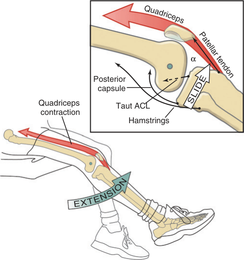
Sự bất ổn mãn tính cùng với các động học thay đổi liên quan có thể gây thêm ứng suất và thoái hóa cho các mô khác, đáng chú ý nhất là sụn chêm (menisci) và cuối cùng là sụn khớp (articular cartilage).
Khoảng 70% các chấn thương dây chằng chéo trước (ACL) liên quan đến thể thao xảy ra trong các tình huống không tiếp xúc hoặc, ít nhất, tiếp xúc ở mức tối thiểu. Nhiều chấn thương không tiếp xúc xảy ra khi vừa tiếp đất sau một cú nhảy, hoặc khi giảm tốc, cắt hướng (cutting) hay xoay trục (pivoting) nhanh và mạnh trên một chi dưới duy nhất đang bám đất. Các cơ chế gây chấn thương thường khó dự đoán và xảy ra rất nhanh; do đó vị trí chính xác và hướng chủ đạo của các lực đặt lên gối vào thời điểm chấn thương không phải lúc nào cũng xác định được. Phần lớn những gì đã biết về các cơ chế liên quan đến chấn thương ACL không tiếp xúc được rút ra từ các báo cáo của chính các cầu thủ bị chấn thương, phân tích video của tình huống chấn thương, và các mô phỏng chấn thương cùng các mối quan hệ ứng suất–biến dạng (stress–strain) thiết lập bằng dây chằng của bản tử thi, các cảm biến đo biến dạng (strain gauges) cấy đặt bên trong dây chằng chéo trước, và các mô hình sinh cơ học dựa trên máy tính. Nghiên cứu thường xuyên xác nhận ít nhất ba yếu tố liên quan đến chấn thương ACL không tiếp xúc: (1) kích hoạt mạnh cơ tứ đầu đùi trên một gối gập vừa phải hoặc gần như duỗi hoàn toàn, (2) hiện tượng "sụp đổ valgus" (valgus collapse) rõ rệt của gối, và (3) xoay ngoài quá mức của gối (tức xương đùi bị xoay trong quá mức tại khớp háng so với xương chày cố định). Cả ba yếu tố này đều hiện diện trong Hình 13.21. Nhiều dòng nghiên cứu quả thực đã xác nhận rằng động lực học và…
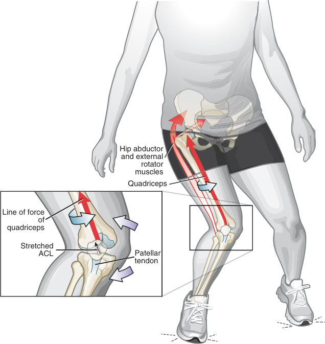
Ghi chú in trang — Như đã được định nghĩa trước đó trong Hình 13.15, theo góc nhìn kiểu xương đùi trên xương chày (chịu trọng lượng), xoay trong của gối xảy ra do xương đùi xoay ngoài so với xương chày cố định.
Chấn thương dây chằng chéo trước là một sự kiện nghiêm trọng có thể dẫn đến bất ổn gối, chức năng gối bị suy giảm và mức hoạt động thể chất tổng thể bị giảm sút. Ngoài việc cản trở chất lượng và sự tự tin của chuyển động, sự bất ổn động học có thể tạo ra ứng suất có hại cho sụn chêm và sụn khớp, qua đó làm cho gối có nguy cơ mắc viêm xương khớp (osteoarthritis) khởi phát sớm. Một số dữ liệu cũng gợi ý rằng những thay đổi tương đối giữa các cytokine gây viêm và chống viêm sau chấn thương ACL có thể là một yếu tố khác góp phần vào sự phát triển của viêm xương khớp. Hơn nữa, do nguồn cung cấp máu tương đối kém, dây chằng chéo trước không thể tự lành một cách tự phát. Do đó, tái tạo phẫu thuật thường được khuyến nghị, đặc biệt ở những người trẻ, năng động mong muốn trở lại thể thao hoặc một lối sống năng động. Hầu hết các phẫu thuật sử dụng mảnh ghép tự thân (autograft) (dùng gân bánh chè, gân kheo hoặc gân của cơ tứ đầu đùi của chính người bệnh) hoặc mảnh ghép đồng loài (allograft) (dùng mảnh ghép lấy từ người khác) để thay thế dây chằng chéo trước đã bị rách. Những người tương đối ít vận động có thể chọn không phẫu thuật mà thay vào đó thực hiện một chương trình tập luyện tăng cường dựa trên thần kinh–cơ nhằm nâng cao sức mạnh và sự ổn định quanh khớp.
TẬP TRUNG ĐẶC BIỆT 13.3 — Phẫu thuật tái tạo dây chằng chéo trước: Một khoa học đang tiến hóa (ACL Reconstructive Surgery: An Evolving Science)
Phẫu thuật tái tạo dây chằng chéo trước được coi là một thủ thuật y tế hiệu quả về chi phí xét theo những hậu quả và mức độ bệnh tật tiềm tàng của việc phải sống chung với một gối bất ổn. Mặc dù phẫu thuật tái tạo dây chằng chéo trước tương đối thành công trong việc khôi phục sự ổn định và chức năng cơ bản của gối, nhưng các động học tự nhiên và, trong một số trường hợp, sức mạnh cơ trước chấn thương không được khôi phục hoàn toàn. Ngay cả sau khi đã tái tạo phẫu thuật, những người từng bị chấn thương ACL vẫn được coi là có nguy cơ cao mắc viêm xương khớp gối trong suốt cuộc đời. Nguy cơ gia tăng này liên quan đến mức độ chấn thương lên các cấu trúc khác tại thời điểm bị chấn thương, đáng chú ý nhất là sụn chêm. Không có sự bảo vệ của các sụn chêm còn nguyên vẹn, sụn khớp bên dưới trở nên dễ bị thoái hóa, đặc biệt ở một khớp có động học bất thường và chỉ được kiểm soát một phần.
Một khối lượng lớn các nghiên cứu liên tục đã được tích lũy nhằm nâng cao hiệu quả của tái tạo dây chằng chéo trước, đặc biệt trong việc khôi phục động học và độ ổn định trước chấn thương của gối thiếu hụt ACL. Một số yếu tố được các nhà nghiên cứu quan tâm là căng và cố định tối ưu, vị trí và loại vật liệu mảnh ghép ACL. Ngoài ra, các nỗ lực nghiên cứu đang cố gắng khớp chính xác hơn cấu hình giải phẫu của vật liệu ghép với dây chằng chéo trước tự nhiên. Lý lẽ phổ biến là một sự khớp giải phẫu gần hơn về hướng của các bó sợi sẽ cho phép vật liệu ghép kiểm soát động học của gối tốt hơn. Như đã đề cập, dây chằng chéo trước tự nhiên thường được mô tả là gồm hai bó sợi riêng biệt: trước–trong (anterior-medial) và sau–ngoài (posterior-lateral). Sự phân biệt giải phẫu này thể hiện rõ ngay cả ở thai nhi người đang phát triển. (Một số tác giả thậm chí còn mô tả một bó sợi thứ ba, riêng biệt, bên trong dây chằng chéo trước.) Mặc dù một số nghiên cứu báo cáo dữ liệu mâu thuẫn, rõ ràng là các bó khác nhau thực sự có những chức năng khá khác biệt và có lẽ quan trọng trong việc kiểm soát động học của gối. Ví dụ, vì các sợi sau–ngoài ngắn hơn các sợi trước–trong, chúng có khả năng chịu mức biến dạng cao hơn cho mỗi độ chuyển động của xương, nổi bật nhất là ở đoạn cuối duỗi (terminal extension). Ngoài ra, các sợi trước–trong có xu hướng duy trì chiều dài gần như đẳng trưởng (isometric) trong khoảng từ 0 đến 90 độ gập. Những khác biệt sinh cơ học khác về chức năng của các bó cũng đã được suy đoán.
Mặc dù hầu hết các phẫu thuật ACL được thực hiện tại Hoa Kỳ đều dùng kỹ thuật một bó để gắn vật liệu ghép, sự quan tâm ngày càng tăng đang hướng tới kỹ thuật ghép hai hoặc thậm chí ba bó ở một số bệnh nhân được chọn lọc, với hy vọng bắt chước tốt hơn giải phẫu và sinh cơ học phức tạp của dây chằng chéo trước. Tuy nhiên, cho đến nay, đa số các nghiên cứu báo cáo không có sự khác biệt giữa phẫu thuật một bó và hai bó dựa trên các kết quả do bệnh nhân tự báo cáo. Mặc dù bằng chứng còn yếu và mâu thuẫn, một số dữ liệu gợi ý rằng kỹ thuật hai bó cho khả năng kiểm soát xoay trục (axial rotation) tốt hơn. Cần nhiều nghiên cứu hơn nữa trong lĩnh vực này trước khi có thể đưa ra một kết luận dứt khoát về hiệu quả tương đối của hai thủ thuật phẫu thuật này. Kinh nghiệm và sự thành thạo của bác sĩ phẫu thuật đối với kỹ thuật cụ thể, kết hợp với tiền sử riêng của từng bệnh nhân, là những yếu tố quyết định cuối cùng trong việc chọn tái tạo ghép dây chằng chéo trước một bó hay hai bó.
Dây chằng chéo sau (Posterior Cruciate Ligament)
Giải phẫu và chức năng (Anatomy and Function)
Hơi dày hơn dây chằng chéo trước, dây chằng chéo sau (PCL) bám từ vùng gian mỏm cầu sau (posterior intercondylar area) của xương chày đến mặt ngoài của mỏm cầu trong xương đùi (xem Hình 13.11, 13.12 và 13.19). Giải phẫu cụ thể của dây chằng chéo sau thường được mô tả gồm hai bó chính: nhóm trước lớn hơn (trước–ngoài), tạo thành phần khối chủ yếu của dây chằng, và nhóm sau nhỏ hơn (sau–trong).
Khi gối gập, dây chằng chéo sau trải qua một quá trình xoắn phức tạp cùng những thay đổi về chiều dài và hướng. Tác động cơ học chính xác của sự biến dạng động này chưa được hiểu đầy đủ. Do tần suất chấn thương dây chằng chéo sau tương đối thấp, nghiên cứu về chức năng cụ thể của nó đã chậm hơn so với dây chằng chéo trước. Tuy nhiên, điều đã biết là một số sợi trong dây chằng chéo sau giữ trạng thái căng trong suốt phần lớn phạm vi gập và duỗi, mặc dù phần lớn dây chằng (bao gồm cả hai bó sợi) trở nên căng dần khi gập tăng. Giữa duỗi hoàn toàn và khoảng 30 đến 40 độ gập, phần lớn dây chằng chéo sau tương đối lỏng; độ căng đạt đỉnh trong khoảng 90 đến 120 độ gập. Phân tích in vivo bằng chụp cộng hưởng từ (magnetic resonance [MR]) cho thấy, trung bình, phần khối chính của dây chằng chéo sau giãn dài khoảng 30% chiều dài của nó giữa duỗi hoàn toàn và 90 độ gập; điều này tương ứng với mức tăng chiều dài khoảng 3% cho mỗi 10 độ gập. Sự tăng độ căng tương đối đột ngột này giải thích, một phần, lý do vì sao nhiều tình huống động học dây chằng chéo sau được mô tả liên quan đến Hình 13.21 có thể, khi kết hợp với nhau hoặc ở mức cực đoan, vượt quá sức bền kéo của dây chằng chéo trước. Nhiều chấn thương dây chằng chéo sau liên quan đến gập gối đáng kể. Ngoài việc trở nên căng khi gập, dây chằng chéo sau còn là ràng buộc thứ cấp (secondary restraint) chống lại các tải trọng varus và valgus, cũng như chống lại xoay trục quá mức.
Khi một người chủ động gập gối chống lại trọng lực, chẳng hạn khi nằm sấp, các cơ gập gối (chẳng hạn gân kheo) chủ động trượt xương chày (cùng với xương mác) về phía sau so với xương đùi. Mức độ của động học khớp kiểu trượt sau bị giới hạn, một phần, bởi căng bị động trong dây chằng chéo sau (Hình 13.22A). Vì lý do này, gân kheo thường được gọi là một "kháng đối của dây chằng chéo sau" (PCL antagonist), đặc biệt ở các góc gập gần vị trí 90 độ — vị trí đặt gân kheo gần như vuông góc với trục dọc của xương chày. Thêm một lần co mạnh của cơ tứ đầu đùi vào sự co gân kheo đang diễn ra sẽ làm giảm biến dạng đặt lên dây chằng chéo sau.
Một trong những thử nghiệm được thực hiện phổ biến nhất để đánh giá tính toàn vẹn của dây chằng chéo sau là thử nghiệm "ngăn kéo sau" (posterior drawer test). Thử nghiệm này gồm việc đẩy đầu gần của xương chày (cẳng chân) về phía sau với gối gập khoảng 90 độ (xem Hình 13.22B). Ở vị trí này, dây chằng chéo sau cung cấp khoảng 95% tổng lực kháng bị động chống lại sự dịch chuyển sau của xương chày. Với gối giữ ở giữa 0 và khoảng 30 độ gập, dây chằng chéo sau chỉ cung cấp lực kháng bị động không đáng kể chống lại sự dịch chuyển sau của xương chày; phần lớn lực kháng được cung cấp bởi bao khớp sau và phần lớn các sợi trong các dây chằng bên — những mô vốn bị kéo giãn một cách tự nhiên ở gần duỗi.
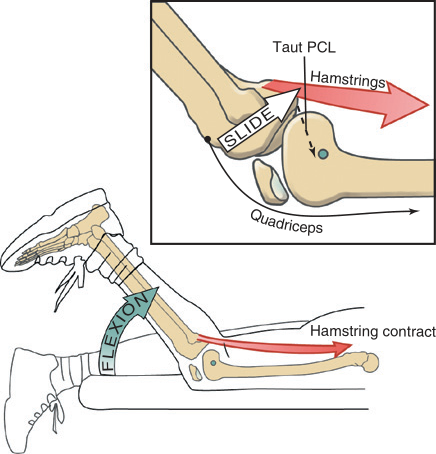
Một chức năng khác của dây chằng chéo sau là giới hạn mức độ dịch chuyển trước của xương đùi so với cẳng chân cố định. Các hoạt động như hạ người nhanh xuống tư thế ngồi xổm sâu có thể tạo ra một xu hướng dịch chuyển trước của xương đùi so với xương chày. Xương đùi được ngăn không cho trượt ra khỏi mép trước của xương chày nhờ độ căng trong dây chằng chéo sau, bao khớp xung quanh, và các lực nén trong khớp chày–đùi do trọng lực và sự đồng co của các cơ tạo ra. Như thể hiện rõ trong Hình 13.8, gân khỏe của cơ khoeo (popliteus), bằng cách băng chéo qua phía sau–ngoài của gối, có thể kháng lại sự dịch chuyển trước của xương đùi so với xương chày (hoặc ngược lại, sự dịch chuyển sau của xương chày so với xương đùi). Từ góc nhìn lâm sàng, người ta cho rằng chức năng kháng của cơ khoeo đặc biệt đáng lưu ý ở những người có gối thiếu hụt dây chằng chéo sau.
Các cơ chế chấn thương thường gặp (Common Mechanisms of Injury)
Hầu hết các chấn thương dây chằng chéo sau liên quan đến chấn thương năng lượng cao, chẳng hạn như gặp tai nạn ô tô hoặc chơi các môn thể thao có tiếp xúc như bóng bầu dục Mỹ. Các chấn thương dây chằng chéo sau đơn độc liên quan đến thể thao tương đối hiếm, nói chung chỉ chiếm 2% đến 10% trong tổng số các chấn thương gối. Khoảng một nửa số chấn thương dây chằng chéo sau còn kèm theo tổn thương các cấu trúc gối khác, bao gồm sụn chêm, dây chằng chéo trước và bao khớp sau–ngoài.
Một số cơ chế đã được mô tả cho chấn thương dây chằng chéo sau. Một cơ chế tương đối thường gặp là ngã đập gối gập hoàn toàn xuống mặt đất (với cổ chân gập lòng bàn chân) sao cho phần gần của xương chày đập xuống đất trước. Một trong những chấn thương năng lượng cao phổ biến nhất đối với dây chằng chéo sau là chấn thương "bảng táp-lô" (dashboard injury), khi gối của một hành khách trên ô tô đập vào bảng táp-lô sau một vụ va chạm trực diện, đẩy xương chày về phía sau so với xương đùi. Các cơ chế chấn thương khác được liệt kê trong Bảng 13.4.
Thường sau một chấn thương dây chằng chéo sau, có thể thấy rõ hiện tượng tụt sau (posterior sag) của phần gần xương chày so với xương đùi khi cẳng chân chịu tác động kéo của trọng lực, chẳng hạn như ở tư thế nằm ngửa gập gối–háng (hook-lying) minh họa trong Hình 13.22B. Quan sát này, kết hợp với dấu hiệu ngăn kéo sau (posterior drawer sign) dương tính, gợi ý dây chằng chéo sau đã bị đứt. Thông thường, các chấn thương dây chằng chéo sau đơn độc có thể được xử lý bảo tồn mà không cần phẫu thuật tái tạo bằng ghép gân. Tuy nhiên, phẫu thuật thường được khuyến nghị nếu bất ổn sau hoặc bán trật (subluxation) rõ rệt và (như thường gặp) dây chằng chéo sau bị tổn thương cùng với các dây chằng khác. Dữ liệu về chức năng lâu dài của gối sau chấn thương dây chằng chéo sau còn thiếu. Hầu hết các nghiên cứu cho thấy gối thiếu hụt dây chằng chéo sau có nhiều khả năng phát triển viêm xương khớp gối sau chấn thương. Việc tái tạo dây chằng chéo sau sau chấn thương có thực sự ngăn được gối khỏi bất ổn và thoái hóa đáng kể về sau trong cuộc đời hay không vẫn còn là một chủ đề gây tranh cãi.
Khớp bánh chè–đùi (patellofemoral joint) là mặt tiếp hợp giữa mặt khớp của bánh chè (patella) và ròng rọc bánh chè (trochlear groove) của xương đùi. Các bộ ổn định cục bộ của khớp này bao gồm các lực do cơ tứ đầu đùi tạo ra, sự ăn khớp của các mặt khớp, và lực ràng buộc bị động từ các mô mềm giải phẫu xung quanh. Động học bất thường, thường kèm theo bất ổn của khớp bánh chè–đùi, là những vấn đề lâm sàng tương đối thường gặp, thường bị quy cho đau gối trước mãn tính và thoái hóa khớp. Các cơ chế sinh bệnh này sẽ được trình bày đầy đủ ở phần sau của chương. Là nền tảng cho chủ đề này, các phần sau đây mô tả động học bình thường tại khớp bánh chè–đùi.
Khi gối luân chuyển qua các pha gập và duỗi, một chuyển động trượt xảy ra giữa mặt khớp của bánh chè và ròng rọc bánh chè của xương đùi. Trong các chuyển động kiểu xương chày trên xương đùi (tibial-on-femoral), bánh chè trượt so với ròng rọc bánh chè cố định của xương đùi. Do chỗ bám chắc chắn của dây chằng bánh chè (patellar ligament) vào lồi củ chày (tibial tuberosity), bánh chè bị kéo theo hướng của xương chày đang chuyển động trong khi gập gối. Trong các chuyển động kiểu xương đùi trên xương chày (femoral-on-tibial) (chẳng hạn khi hạ người xuống tư thế ngồi xổm), ròng rọc bánh chè của xương đùi trượt so với bánh chè cố định. Bánh chè được giữ ở vị trí tương đối đứng yên nhờ sự cân bằng lực giữa lực kéo của cơ tứ đầu đùi đang hoạt động lệch tâm (eccentric) và dây chằng bánh chè tương đối không nhượng bộ.
Đường đi và diện tích tiếp xúc của bánh chè trên xương đùi (Path and Area of Patellar Contact on the Femur)
Dữ liệu từ các nghiên cứu in vivo và in vitro đã cung cấp những mô tả nhìn chung nhất quán về động học và các diện tích tiếp xúc trong khớp bánh chè–đùi trong các chuyển động gập và duỗi, cả khi chịu trọng lượng lẫn không chịu trọng lượng. Trong lịch sử, dữ liệu đã được thu thập bằng chụp cộng hưởng từ (MRI), soi huỳnh quang (fluoroscopy), mô hình hóa máy tính, đặt ghim nội vỏ xương (intracortical pins), phim cảm áp (pressure-sensitive film) hoặc thuốc nhuộm chuyên biệt, các hệ thống theo dõi quang học hoặc video, và các hệ cơ mô phỏng sử dụng mẫu xác. Một kỹ thuật đo được Goodfellow và cộng sự sử dụng đã giúp dựng nên mô hình minh họa trong Hình 13.23. Ở 135 độ gập, bánh chè tiếp xúc với xương đùi chủ yếu ở vùng gần cực trên (superior pole) của nó (xem Hình 13.23A). Ở vị trí gần gập hoàn toàn này, bánh chè nằm xa phía dưới ròng rọc bánh chè, bắc qua hố gian mỏm cầu (intercondylar notch) của xương đùi (xem Hình 13.23D). Trong vị trí này, mép ngoài của mặt ngoài (lateral facet) và mặt "lẻ" (odd facet) của bánh chè cùng chia sẻ tiếp xúc khớp với xương đùi (xem Hình 13.23E). Khi gối duỗi về phía 90 độ gập, vùng tiếp xúc chính trên bánh chè bắt đầu dịch chuyển về phía cực dưới (inferior pole) của nó (xem Hình 13.23B). Giữa khoảng 90 và 60 độ gập, bánh chè thường được ăn khớp hoàn toàn trong ròng rọc bánh chè của xương đùi. Trong cung chuyển động này, diện tích tiếp xúc giữa bánh chè và xương đùi vì thế là lớn nhất (xem Hình 13.23D,E). Ngay cả ở mức tối đa của nó, tuy nhiên, diện tích tiếp xúc chỉ chiếm khoảng một phần ba tổng diện tích bề mặt phía sau của bánh chè.
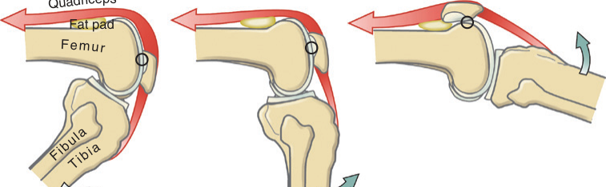
Ngay cả khi đạt mức tối đa, diện tích tiếp xúc cũng chỉ chiếm khoảng một phần ba tổng diện tích của mặt sau bánh chè (patella). Do đó, áp suất khớp (tức lực nén trên mỗi đơn vị diện tích) có thể tăng lên đến mức rất lớn trong khớp bánh chè–đùi (patellofemoral joint) khi cơ tứ đầu đùi được kích hoạt mạnh.
Khi khớp gối duỗi qua 20 đến 30 độ gập cuối cùng, điểm tiếp xúc chính trên bánh chè di chuyển đến cực dưới (inferior pole) của nó (xem Hình 13.23C). Trong cung vận động này, bánh chè mất đi phần lớn sự ăn khớp cơ học của nó trong ròng rọc bánh chè (trochlear groove). Hậu quả là, diện tích tiếp xúc giữa bánh chè và ròng rọc bánh chè giảm xuống còn khoảng 45% so với mức tại 60 độ gập gối. Một khi ở tư thế duỗi hoàn toàn, bánh chè nằm hoàn toàn phía trên (proximal) ròng rọc và tựa vào khối mỡ trên bánh chè (suprapatellar fat pad). Ở vị trí này, với cơ tứ đầu đùi thả lỏng, bánh chè có thể được di chuyển tự do so với xương đùi. Sự ăn khớp nhìn chung giảm sút của bánh chè trong ròng rọc bánh chè của xương đùi ở gần và trong tư thế duỗi giải thích, một phần, lý do vì sao phần lớn các ca trật (hoặc bán trật) bánh chè mạn tính theo hướng ngoài xảy ra ở vị trí này.
Lý do bánh chè thường trật về phía ngoài chủ yếu dựa trên đường lực tổng thể hướng ngoài của cơ tứ đầu đùi so với trục dọc của gân bánh chè — một chủ đề sẽ được đề cập trong các phần sắp tới, vốn mô tả cấu trúc và chức năng của cơ tứ đầu đùi.
TẬP TRUNG ĐẶC BIỆT 13.4 — Động học phụ của bánh chè (Accessory Patellar Kinematics)
Những tiến bộ công nghệ trong chụp cộng hưởng từ (MR imaging) và chụp huỳnh quang trực giao kép (dual orthogonal fluoroscopy) đã cung cấp cho các nhà nghiên cứu khả năng đo động học khớp bánh chè–đùi in vivo ở mức chi tiết cao hơn nhiều so với các vận động bánh chè toàn cục tương đối được thể hiện trong Hình 13.23. Các động học phụ chi tiết hơn của bánh chè gồm có độ nghiêng bánh chè (patellar tilt — xoay gần trong mặt phẳng ngang quanh một trục gần thẳng đứng), xoay trục (spin — xoay trong mặt phẳng trán quanh một trục trước–sau; còn được gọi là rotation), và dịch chuyển trong–ngoài (lateral-medial shift — sự dịch chuyển tiến tuyến). Các thuật ngữ động học khác cũng đã được sử dụng. Những động học phụ tương đối nhẹ và thường bị bỏ qua này của bánh chè luôn đi kèm với mọi vận động bánh chè–đùi. Một số yếu tố gây ra các động học phụ của bánh chè. Hãy xét, ví dụ, gập gối chủ động kiểu xương chày trên xương đùi (tibial-on-femoral), xuất phát từ duỗi hoàn toàn. Xương chày đang di chuyển kéo gân bánh chè và bánh chè hướng xa so với xương đùi, khiến bánh chè gợn sóng nhẹ trong các đường viền không đều của khớp bánh chè–đùi. Ngoài ra, các động học phụ của bánh chè còn do sự xoay trục của xương chày diễn ra đồng thời (liên quan đến khóa mở của khớp gối), cũng như do sự thay đổi thất thường của sức căng thụ động trong các sợi võng bánh chè–đùi (patellofemoral retinacular fibers) (chẳng hạn dây chằng bánh chè–đùi trong — medial patellofemoral ligament; sẽ được mô tả phía sau), dải chậu–gối (iliotibial band), và cơ tứ đầu đùi đang bị kéo giãn.
Lượng và hướng của các động học phụ của bánh chè biến đổi đáng kể giữa các cá nhân, các kiểu vận động (xương chày cố định so với xương đùi cố định), các kiểu kích hoạt hay đồng kích hoạt cơ (ly tâm — eccentric, đẳng trường — isometric, v.v.), giải phẫu xương, và độ lớn của tải trọng ngoài đặt lên các cơ. Sự biến thiên cao được báo cáo cũng phản ánh các phương pháp đo khác nhau và kém chuẩn hóa đã được dùng để đo những động học khó nắm bắt này. Do đó, rất khó để so sánh có ý nghĩa các động học phụ giữa các nghiên cứu khoa học hoặc giữa các điều kiện gia tải khác nhau. Dù hấp dẫn, việc đưa ra một lý giải sinh cơ học cho mức độ và hướng của nhiều động học bánh chè đã được báo cáo cũng khó khăn không kém.
Có lẽ các động học phụ của bánh chè được mô tả nhất quán nhất trong lúc gập và duỗi gối là các dịch chuyển vào trong hoặc ra ngoài của bánh chè trong ròng rọc bánh chè. Sử dụng MRI, Nha và cộng sự đã nghiên cứu một động tác tấn (lunge) chịu trọng lượng qua 90 độ gập gối ở tám đối tượng khỏe mạnh. Lấy duỗi hoàn toàn của gối làm điểm xuất phát, dữ liệu cho thấy, trung bình, bánh chè trước tiên dịch chuyển vào trong 2,8 mm khi đạt 30 độ gập, rồi dịch chuyển ra ngoài trở lại 2 mm khi đạt 90 độ gập. Như đã được xác nhận bởi các nghiên cứu khác sử dụng các đối tượng không có triệu chứng, sự dịch chuyển ròng của bánh chè là không đáng kể trong toàn bộ tầm gập được báo cáo, nhìn chung khoảng 3 mm. Trong một nghiên cứu khác sử dụng các vận động chịu trọng lượng tương đương, MacIntyre và đồng nghiệp đã so sánh động học bánh chè ở các đối tượng khỏe mạnh với những người bị đau gối trước mạn tính. Các xu hướng trong dữ liệu động học bánh chè là tương tự nhau ở hai nhóm, ngoại trừ nhóm có triệu chứng (đau) cho thấy sự dịch chuyển ngoài của bánh chè lớn hơn có ý nghĩa thống kê so với nhóm đối chứng, nổi bật nhất ở khoảng 20 độ gập. Như sẽ được tìm hiểu sâu hơn trong chương này, sự dịch chuyển ngoài quá mức của bánh chè trong lúc vận động gối có thể góp phần gây ra bệnh lý liên quan đến ứng suất và đau tại khớp bánh chè–đùi.
Tóm lại, các động học phụ của bánh chè bình thường luôn đi kèm với mọi vận động của khớp gối. Mặc dù chưa được hiểu rõ và khó dự đoán, rất có thể tồn tại một lượng và một kiểu động học phụ của bánh chè tối ưu giúp giảm thiểu ứng suất trong khớp bánh chè–đùi. Cần nhiều nghiên cứu lâm sàng và nghiên cứu cơ bản hơn nữa để xác định và nhận biết tốt hơn kiểu động học phụ của bánh chè, cả ở các đối tượng bình thường lẫn ở những người bị nghi ngờ thoái hóa hoặc mất ổn định khớp bánh chè–đùi. Một sự hiểu biết tốt hơn về chủ đề này sẽ cho ra một bức tranh rõ ràng hơn về bệnh lý liên quan đến ứng suất tiềm ẩn tại khớp bánh chè–đùi, cũng như hỗ trợ cho việc điều trị nó.
Cơ tứ đầu đùi (quadriceps femoris) được chi phối bởi thần kinh đùi (xem Hình 12.24A). Giống như cơ tam đầu ở khuỷu, nhóm cơ duỗi duy nhất của khớp gối chỉ được chi phối bởi một dây thần kinh ngoại biên duy nhất. Do đó, một tổn thương hoàn toàn của thần kinh đùi có thể gây liệt hoàn toàn các cơ duỗi gối. Các cơ gập và xoay của khớp gối được chi phối bởi một số dây thần kinh xuất phát từ cả đám rối thắt lưng (lumbar plexus) lẫn đám rối cùng (sacral plexus), nhưng chủ yếu bởi phần chày của thần kinh tọa (xem Hình 12.24B). Bảng 13.5 liệt kê chi phối vận động của tất cả các cơ đi qua khớp gối.
Là tài liệu tham chiếu bổ sung, các rễ thần kinh tủy sống chính chi phối các cơ của chi dưới được liệt kê trong Phụ lục IV, phần A. Ngoài ra, Phụ lục IV, các phần B và C, bao gồm các mục tham chiếu bổ sung giúp hướng dẫn đánh giá lâm sàng tình trạng chức năng của các rễ thần kinh tủy sống L2–S3.
Chi phối cảm giác của khớp gối và các dây chằng liên quan được cung cấp chủ yếu từ các rễ thần kinh tủy sống L3 đến L5, các rễ này đi tới tủy sống chủ yếu qua thần kinh chày sau (posterior tibial nerve), thần kinh bịt (obturator), và thần kinh đùi. Thần kinh chày sau (một nhánh của phần chày của thần kinh tọa) là nguồn cung cấp cảm giác hướng tâm (afferent) lớn nhất cho khớp gối. Nó cung cấp cảm giác cho bao khớp sau và các dây chằng liên quan cũng như phần lớn các cấu trúc bên trong của khớp gối, xa về phía trước tới khối mỡ dưới bánh chè. Các sợi hướng tâm trong thần kinh bịt mang cảm giác từ da phủ mặt trong của khớp gối và các phần của bao khớp sau và sau–trong. Các sợi hướng tâm từ thần kinh đùi cung cấp cảm giác cho phần lớn bao khớp trước–trong và trước–ngoài.
Các cơ của khớp gối được mô tả thành hai nhóm: các cơ duỗi gối (tức cơ tứ đầu đùi) và các cơ gập–xoay gối (knee flexor-rotators). Giải phẫu của nhiều cơ trong số này đã được trình bày trong Chương 12. Tham khảo Phụ lục IV, phần D để có bản tóm tắt về các chỗ bám và chi phối thần kinh của các cơ khớp gối. Ngoài ra, làm tài liệu tham chiếu, một danh sách diện tích mặt cắt ngang của một số cơ được chọn lọc của khớp gối được trình bày trong Phụ lục IV, phần E.
| Cơ (Muscle) | Tác động (Action) | Chi phối thần kinh (Innervation) | Đám rối (Plexus) |
|---|---|---|---|
| Cơ may (Sartorius) | Gập, xoay ngoài và dạng khớp háng; gập và xoay trong khớp gối | Thần kinh đùi | Thắt lưng |
| Cơ mảnh (Gracilis) | Gập và khép khớp háng; gập và xoay trong khớp gối | Thần kinh bịt | Thắt lưng |
| Cơ tứ đầu đùi (Quadriceps femoris) Cơ thẳng đùi (Rectus femoris) Nhóm cơ rộng (Vastus group) | Duỗi khớp gối và gập khớp háng Duỗi khớp gối | Thần kinh đùi | Thắt lưng |
| Cơ khoeo (Popliteus) | Gập và xoay trong khớp gối | Thần kinh chày | Cùng |
| Cơ bán màng (Semimembranosus) | Duỗi khớp háng; gập và xoay trong khớp gối | Thần kinh tọa (phần chày) | Cùng |
| Cơ bán gân (Semitendinosus) | Duỗi khớp háng; gập và xoay trong khớp gối | Thần kinh tọa (phần chày) | Cùng |
| Cơ nhị đầu đùi (đầu ngắn) (Biceps femoris, short head) | Gập và xoay ngoài khớp gối | Thần kinh tọa (phần mác chung) | Cùng |
| Cơ nhị đầu đùi (đầu dài) (Biceps femoris, long head) | Duỗi khớp háng; gập và xoay ngoài khớp gối | Thần kinh tọa (phần chày) | Cùng |
| Cơ bụng chân (Gastrocnemius) | Gập khớp gối; gập lòng bàn chân cổ chân | Thần kinh chày | Cùng |
| Cơ gối (Plantaris) | Gập khớp gối; gập lòng bàn chân cổ chân | Thần kinh chày | Cùng |
*Các tác động liên quan đến khớp gối được trình bày bằng chữ đậm. Các cơ được liệt kê theo thứ tự giảm dần của các rễ thần kinh chi phối.
Cơ tứ đầu đùi là một cơ duỗi gối lớn và mạnh, với diện tích mặt cắt ngang được báo cáo là cao gấp tới 2,8 lần so với các cơ gân kheo. Cơ tứ đầu đùi gồm có cơ thẳng đùi (rectus femoris), cơ rộng ngoài (vastus lateralis), cơ rộng trong (vastus medialis), và cơ rộng giữa (vastus intermedius) nằm sâu hơn (xem Hình 13.7 và 13.24). Nhóm cơ rộng lớn này tạo ra khoảng 80% tổng mô men duỗi tại khớp gối, và cơ thẳng đùi tạo ra khoảng 20%. Sự co của các cơ rộng chỉ duỗi khớp gối. Ngược lại, sự co của cơ thẳng đùi gây gập khớp háng và duỗi khớp gối.
Tất cả các đầu của cơ tứ đầu đùi hợp lại tạo thành một gân cơ tứ đầu đùi (quadriceps tendon) chắc khỏe bám vào đáy và các mặt bên của bánh chè. Gân bánh chè (patellar tendon) nối đỉnh của bánh chè với lồi củ chày (tibial tuberosity). Các cơ rộng ngoài và rộng trong bám vào bao khớp và sụn chêm qua các sợi võng bánh chè (patellar retinacular fibers) (xem Hình 13.7). Cùng với nhau, cơ tứ đầu đùi, bánh chè, và gân bánh chè được gọi là cơ chế duỗi gối (knee extensor mechanism). Những mô liên kết với nhau này có khả năng tạo ra và truyền đi các lực rất lớn. Tuy có lẽ là một ví dụ thái quá, người ta đã ước tính rằng cơ tứ đầu đùi của những nam giới trẻ đã được huấn luyện có thể tạo ra các lực tối đa lên tới 6000 N (gần 1350 pound). Tất nhiên, mỗi cá nhân chỉ thường cần một lực thấp hơn nhiều để thực hiện phần lớn các hoạt động chức năng thông thường. Tuy vậy, cơ chế duỗi, các khớp chày–đùi và bánh chè–đùi, và một số dây chằng nhất định thường xuyên chịu các lực tương đối lớn và lặp đi lặp lại, do đó làm cho các cấu trúc này dễ bị tổn thương tại một thời điểm nào đó trong đời. Nhận thức này rất quan trọng về mặt lâm sàng, dù là để tư vấn về phòng ngừa chấn thương hay để thiết kế các bài tập cho việc phục hồi sau chấn thương hoặc bệnh lý.
Cơ thẳng đùi bám vào khung chậu gần gai chậu trước dưới (anterior-inferior iliac spine) và ngay phía trên ổ xương hứng (acetabulum). Các cơ rộng, ngược lại, bám vào một phần rộng lớn của xương đùi, đặc biệt là thân trước–ngoài và mấu gồ (linea aspera) (xem Hình 12.5). Mặc dù cơ rộng ngoài có diện tích mặt cắt ngang lớn nhất trong các cơ tứ đầu đùi, cơ rộng trong kéo dài xa hơn về phía khớp gối.
Cơ rộng trong gồm các sợi tạo thành hai hướng sợi phân biệt. Các sợi chéo xa hơn (cơ rộng trong phần “chéo” — vastus medialis “obliquus”) tiếp cận bánh chè ở góc 50 đến 55 độ phía trong so với gân cơ tứ đầu đùi (xem Hình 13.24). Các sợi dọc hơn còn lại (cơ rộng trong phần “dọc” — vastus medialis “longus”) tiếp cận bánh chè ở góc 15 đến 18 độ phía trong so với gân cơ tứ đầu đùi. Các sợi chéo của cơ rộng trong kéo dài xa hơn về phía xa so với các thành phần cơ khác của cơ tứ đầu đùi. Mặc dù các sợi chéo chỉ chiếm 30% diện tích mặt cắt ngang của toàn bộ cơ rộng trong, lực kéo chéo lên bánh chè có ý nghĩa quan trọng đối với sự ổn định và định hướng của bánh chè khi nó trượt (di chuyển — track) qua ròng rọc bánh chè của xương đùi.
Cơ tứ đầu đùi nằm sâu nhất, cơ rộng giữa, chủ yếu nằm ngay sâu dưới cơ thẳng đùi và cơ rộng ngoài. Sâu dưới cơ rộng giữa là cơ khớp gối (articularis genu) khó xác định rõ. Cơ này chứa một vài dải sợi bám gần vào mặt trước của phần xa xương đùi, rồi bám xa vào bao khớp trước. Cơ này kéo bao khớp và màng hoạt dịch hướng gần trong lúc duỗi gối chủ động. Cơ khớp gối tương đồng với cơ khớp khuỷu (articularis cubiti) khó xác định rõ ở khuỷu.
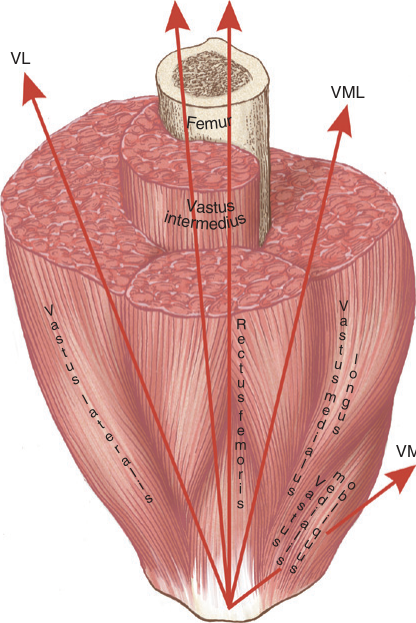
Nhìn chung, các cơ duỗi gối tạo ra một mô men lớn hơn khoảng hai phần ba so với mô men do các cơ gập gối tạo ra. Thông qua các kiểu kích hoạt đẳng trường, ly tâm (eccentric), và đồng tâm (concentric), mô men duỗi này được dùng để thực hiện nhiều chức năng tại khớp gối. Qua kích hoạt đẳng trường, cơ tứ đầu đùi ổn định và góp phần bảo vệ khớp gối; qua kích hoạt ly tâm, cơ tứ đầu đùi kiểm soát tốc độ hạ xuống của trọng tâm cơ thể, chẳng hạn khi ngồi xuống, ngồi xổm, hoặc tiếp đất sau một cú nhảy. Kích hoạt ly tâm của các cơ này còn cung cấp khả năng hấp thụ sốc cho khớp gối. Ở pha tiếp xúc gót chân (heel contact) của đi bộ, khớp gối gập nhẹ để đáp ứng với lực phản ứng của mặt đất (ground reaction force). Các cơ tứ đầu đùi đang kích hoạt ly tâm kiểm soát mức độ gập của khớp gối. Hoạt động như một chiếc lò xo, cơ giúp làm dịu tác động của lực gia tải lên khớp. Sự bảo vệ này đặc biệt hữu ích trong lúc gia tải va chạm lớn, chẳng hạn khi tiếp đất sau một cú nhảy, khi pha tiếp xúc bàn chân ban đầu của chạy bộ, hoặc khi bước xuống từ một bậc cao. Một người có khớp gối được nẹp hoặc bị giữ ở tư thế duỗi một cách không tự nhiên sẽ thiếu cơ chế hấp thụ sốc tự nhiên này.
Trong các ví dụ trước, kích hoạt ly tâm của cơ tứ đầu đùi được sử dụng để giảm tốc gập gối. Ngược lại, sự co đồng tâm của cơ này tăng tốc xương chày hoặc xương đùi về phía duỗi gối. Tác động này thường được dùng để nâng trọng tâm cơ thể lên, chẳng hạn khi chạy lên dốc, nhảy, hoặc đứng dậy từ tư thế ngồi.
Trong nhiều hoạt động tư thế đứng, một mô men ngoài (gập) đang tác động lên khớp gối. Mô men ngoài này bằng lực tải ngoài đang được di chuyển hoặc được đỡ, nhân với cánh tay đòn ngoài (external moment arm) của nó. Mô men gập ngoài thường phải được đáp ứng hoặc vượt qua bởi một mô men trong (duỗi) đối nghịch, mô men này là tích của lực cơ tứ đầu đùi nhân với cánh tay đòn trong (internal moment arm) của nó. Việc hiểu các mô men đối nghịch này được tạo ra và tương tác chức năng với nhau như thế nào là trọng tâm của phần này. Chủ đề này là một thành phần quan trọng trong nhiều khía cạnh của việc củng cố cơ tứ đầu đùi như một phần của chương trình phục hồi chức năng.
Nhiều bài tập củng cố được thiết kế để thử thách cơ tứ đầu đùi dựa vào các mô men ngoài có tính cản trở, chỉ được sinh ra bởi trọng lực tác động lên cơ thể. Độ lớn của mô men ngoài phụ thuộc rất nhiều vào cách thức cụ thể mà khớp gối đang được duỗi. Những khác biệt này được minh họa trong Hình 13.25. Trong duỗi gối kiểu xương chày trên xương đùi (tibial-on-femoral), cánh tay đòn ngoài của trọng lượng cẳng chân tăng lên từ 90 độ về 0 độ gập gối (xem Hình 13.25A–C). Ngược lại, trong duỗi gối kiểu xương đùi trên xương chày (femoral-on-tibial) (như khi đứng dậy từ tư thế ngồi xổm), cánh tay đòn ngoài của trọng lượng phần thân trên giảm đi từ 90 độ về 0 độ gập gối (xem Hình 13.25D–F). Đồ thị trong Hình 13.25 đối chiếu mối quan hệ giữa mô men ngoài và góc khớp gối cho hai phương pháp duỗi gối, giữa 90 độ gập và duỗi hoàn toàn.
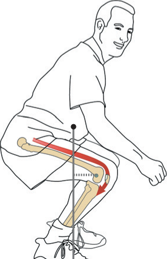
Thông tin có trong đồ thị ở Hình 13.25 rất hữu ích cho việc thiết kế các bài tập tăng cường cơ tứ đầu đùi (quadriceps femoris). Một cách tất yếu, các bài tập tạo thách thức đáng kể cho cơ tứ đầu đùi cũng gây ứng suất lên khớp gối, khớp bánh chè–đùi (patellofemoral joint) và các mô liên kết quanh khớp, chẳng hạn dây chằng chéo trước (ACL). Về mặt lâm sàng, ứng suất này có thể được coi là có khả năng gây tổn hại hoặc có tính điều trị, tùy thuộc vào bệnh lý nền, nếu có, của người thực hiện bài tập. Ví dụ, một người bị đau khớp bánh chè–đùi rõ rệt hoặc viêm xương khớp (osteoarthritis) gối gây đau thường được khuyên tránh tạo ra các ứng suất lớn dựa trên cơ bắp lên khớp gối. Ngược lại, một người hoàn toàn khỏe mạnh hoặc một vận động viên trình độ cao đang ở các giai đoạn sau của quá trình phục hồi chức năng sau phẫu thuật tái tạo dây chằng chéo trước thực ra có thể được lợi từ các ứng suất cơ bắp được áp dụng một cách thận trọng như vậy lên khớp gối.
Các mô men ngoài (external torques) đặt lên khớp gối bởi một tải trọng không đổi thay đổi theo kiểu có thể dự đoán được, dựa trên góc gối và hướng của các đoạn chi. Như được mô tả bằng vùng tô màu đỏ trong đồ thị ở Hình 13.25, các mô men ngoài tương đối lớn trong khoảng từ 90 đến 45 độ gập thông qua duỗi kiểu xương đùi trên xương chày (femoral-on-tibial extension), và từ 45 đến 0 độ gập thông qua duỗi kiểu xương chày trên xương đùi (tibial-on-femoral extension). Có thể đạt được việc giảm các mô men ngoài này bằng một số chiến lược. Ví dụ, một tải trọng ngoài có thể được đặt ở cổ chân trong khi duỗi gối kiểu xương chày trên xương đùi, cụ thể trong khoảng giữa 90 và 45 độ gập. Hoạt động này có thể được nối tiếp bằng một bài tập gồm việc đứng dậy từ tư thế ngồi xổm một phần, một chuyển động kết hợp duỗi kiểu xương đùi trên xương chày trong khoảng giữa 45 và 0 độ gập. Việc kết hợp cả hai bài tập theo cách mô tả như trên chỉ tạo ra các mô men ngoài ở mức trung bình đến tối thiểu tác động ngược lại cơ tứ đầu đùi, trong suốt một tầm chuyển động liên tục. Chiến lược áp dụng mô men ngoài này đã được coi là phù hợp khi cố gắng tăng cường cơ tứ đầu đùi nhưng đồng thời giảm thiểu ứng suất lên khớp bánh chè–đùi nằm bên dưới.
Mối quan hệ giữa mô men trong và góc khớp của cơ tứ đầu đùi (Internal Torque–Joint Angle Relationship of the Quadriceps Muscle)
Mô men duỗi gối (mô men trong) tối đa thường xuất hiện trong khoảng giữa 45 và 70 độ gập gối, với mức mô men thấp hơn được tạo ra ở hai vùng gần giới hạn của gập và duỗi. Tuy nhiên, hình dạng của đường cong mô men–góc này thay đổi tùy theo loại và tốc độ kích hoạt cũng như vị trí của khớp háng. Một đường cong tiêu biểu thể hiện mô men gắng sức tối đa theo góc khớp, thu được từ các đối tượng nam khỏe mạnh, được trình bày trong Hình 13.26. Trong nghiên cứu này, các đối tượng tạo ra mô men duỗi gối đẳng trường (isometric) gắng sức tối đa với khớp háng được giữ cố định ở tư thế duỗi. Như được mô tả bằng đường màu đỏ trong Hình 13.26, mô men duỗi gối gắng sức tối đa vẫn duy trì ở mức ít nhất 90% mức tối đa trong khoảng giữa 80 và 30 độ gập. Tiềm năng mô men cao này của cơ tứ đầu đùi trong cung chuyển động này được sử dụng trong nhiều hoạt động chức năng kết hợp động học kiểu xương đùi trên xương chày, chẳng hạn bước lên một bậc cao, đứng dậy khỏi ghế, hoặc giữ tư thế ngồi xổm một phần khi tham gia các môn thể thao như bóng rổ hoặc trượt băng tốc độ. Chú ý sự sụt giảm nhanh chóng của tiềm năng mô men trong khi góc gối tiến gần duỗi hoàn toàn. Hầu hết các nghiên cứu báo cáo mức giảm 50% đến 70% của mô men trong tối đa khi gối tiến gần duỗi hoàn toàn. Điều thú vị là, mô men ngoài tác động lên khớp gối trong khi duỗi kiểu xương đùi trên xương chày cũng giảm nhanh trong cùng khoảng chuyển động này (xem đồ thị ở Hình 13.25). Dường như tồn tại một sự tương thích sinh cơ học tổng quát giữa tiềm năng mô men trong của cơ tứ đầu đùi và các mô men ngoài tác động ngược lại cơ tứ đầu đùi trong khoảng 45 đến 70 độ cuối cùng của quá trình duỗi gối kiểu xương đùi trên xương chày hoàn chỉnh. Sự tương thích này giải thích một phần sự phổ biến của các bài tập "chuỗi động học khép" (closed-kinematic chain), vốn tập trung vào việc tạo kháng lực cho cơ tứ đầu đùi trong khi người đứng thẳng di chuyển cơ thể qua cung duỗi gối kiểu xương đùi trên xương chày này.
TẬP TRUNG ĐẶC BIỆT 13.5 — Bệnh gân bánh chè, hay "gối người nhảy": Một số cân nhắc về nguyên nhân học và sinh cơ học (Patellar Tendinopathy, or "Jumper's Knee": Some Etiologic and Biomechanic Considerations)
Bệnh gân bánh chè (patellar tendinopathy), hay "gối người nhảy" (jumper's knee), là một tình trạng còn chưa được hiểu rõ, có đặc điểm là đau mạn tính ở gân bánh chè. Tình trạng này thường gặp nhất ở các vận động viên tham gia các môn thể thao có những cú nhảy bùng nổ và lặp đi lặp lại, chẳng hạn bóng rổ và bóng chuyền. Tình trạng thường gây suy giảm chức năng và đôi khi kết thúc sự nghiệp này đã được báo cáo xảy ra ở tới 40–50% các vận động viên bóng chuyền trình độ cao.
Các quan sát sử dụng siêu âm, chụp cộng hưởng từ (MR imaging) và lấy mẫu mô học trực tiếp đã chỉ ra rằng các gân được chẩn đoán mắc bệnh gân bánh chè cho thấy các dấu hiệu sử dụng quá mức và mài mòn, biểu hiện bằng sự rối loạn tổ chức collagen và tăng sinh mạch máu. Khi có một quá trình viêm thực sự, thuật ngữ viêm gân (tendinitis) là phù hợp nhất. Tuy nhiên, thông thường các gân bị ảnh hưởng lại thiếu các chỉ dấu kinh điển của viêm thực sự (ví dụ, tăng prostaglandin E2 hoặc sự hiện diện của các tế bào viêm). Vì lý do này, thuật ngữ bệnh gân (tendinopathy) (hoặc thoái hóa gân, tendinosis) thường là thuật ngữ được ưa chuộng để mô tả tình trạng này.
Backman và cộng sự đã nêu một số yếu tố được cho là liên quan đến nguyên nhân học của bệnh gân bánh chè. Các yếu tố ngoài (extrinsic factors) bao gồm cường độ tập luyện, mặt sân thi đấu và giày dép. Ngược lại, các yếu tố trong (intrinsic factors) bao gồm sức mạnh, sức bền, độ dẻo, trình độ kỹ thuật, độ đàn hồi của gân, giới tính nam, các chỉ số nhân trắc học (bao gồm trọng lượng và chiều cao cơ thể), tình trạng bánh chè di động quá mức (patellar hypermobility), và bánh chè cao (patella alta). Các lực gân lớn liên quan đến một số kỹ thuật tiếp đất hoặc nhảy cụ thể cũng đã bị coi là một yếu tố nguy cơ dẫn đến bệnh gân bánh chè. Các lực trong gân bánh chè khi tiếp đất thường rất lớn, lên tới 7 lần trọng lượng cơ thể. Mặc dù chưa được hiểu đầy đủ, cơ chế bệnh sinh của bệnh gân bánh chè có lẽ liên quan đến độ lớn và tính chất lặp đi lặp lại của các lực gân được tạo ra trong khi nhảy và tiếp đất, kết hợp với một số yếu tố trong và ngoài đã nêu ở trên.
Một hướng nghiên cứu về nguyên nhân của bệnh gân bánh chè đã tập trung vào sinh cơ học của việc tiếp đất sau cú nhảy. Hai yếu tố quan trọng trong việc phân tán năng lượng động học của việc tiếp đất từ một cú nhảy là tốc độ và độ lớn của gập bụng bàn chân (dorsiflexion), và hoạt động lệch tâm (eccentric) của các cơ chi dưới, đặc biệt là cơ tứ đầu đùi và các cơ gập gan bàn chân. Đã có giả thuyết cho rằng gập bụng bàn chân bị hạn chế (và một gân Achilles căng cứng) sẽ làm giảm khả năng hấp thụ tải của các cơ gập gan bàn chân. Hệ quả là, một tỷ lệ phần trăm lớn hơn trong tổng khả năng hấp thụ tải sẽ chuyển sang cơ chế cơ tứ đầu đùi. Sau nhiều lần lặp lại, lực bổ sung hoạt động lệch tâm trong cơ tứ đầu đùi có thể dẫn đến vi chấn thương (microtrauma) trong gân, qua đó góp phần vào cơ chế bệnh sinh của bệnh gân bánh chè. Giả thuyết này đã nhận được sự ủng hộ từ một nghiên cứu theo dõi dọc trên 90 vận động viên bóng rổ trẻ xuất sắc người Thụy Điển trong độ tuổi từ 14 đến 20. Những vận động viên về sau phát triển bệnh gân bánh chè có, trung bình, độ gập bụng bàn chân ít hơn 5 độ so với nhóm không phát triển tình trạng này. Sự khác biệt này có ý nghĩa thống kê. Nghiên cứu này gợi ý rằng các bài tập làm tăng gập bụng bàn chân ở những vận động viên có tầm chuyển động tương đối giảm có thể giúp phòng ngừa hoặc giảm mức độ nặng của bệnh gân bánh chè. Đây là một can thiệp điều trị thực tế, xét đến khả năng giảm khả năng vận động gập bụng bàn chân sau một lần trẹo khớp cổ chân — tình trạng tương đối thường gặp trong các môn thể thao có nhảy. Nghiên cứu này là một ví dụ về cách nghiên cứu sinh cơ học có thể cung cấp những manh mối hữu ích để cải thiện việc điều trị và phòng ngừa một tình trạng cơ xương liên quan đến ứng suất.
Vai trò chức năng của bánh chè (Functional Role of the Patella). Bánh chè hoạt động như một "vật chèn" (spacer) giữa xương đùi và cơ tứ đầu đùi, giúp tăng cánh tay đòn trong (internal moment arm) của cơ chế duỗi gối (Hình 13.27). Theo định nghĩa, cánh tay đòn trong của cơ duỗi gối là khoảng cách vuông góc giữa trục xoay trong–ngoài và đường lực của cơ. Vì mô men là tích của lực và cánh tay đòn của nó, sự hiện diện của bánh chè làm tăng mô men duỗi tại khớp gối. Các nhà nghiên cứu đã chỉ ra rằng cánh tay đòn trong của cơ duỗi gối thay đổi đáng kể trong suốt cung gập và duỗi gối hoàn chỉnh. Mặc dù các dữ liệu đã công bố về chủ đề này khác nhau đáng kể tùy theo phương pháp và biến động tự nhiên, hầu hết các nghiên cứu báo cáo rằng cánh tay đòn của cơ duỗi gối lớn nhất trong khoảng giữa khoảng 20 và 60 độ gập gối (xem thanh trên trục nằm ngang của đồ thị ở Hình 13.26). Đòn bẩy tương đối cao này giải thích một phần tại sao các mô men duỗi gối thường cao nhất trên một phần đáng kể của cùng khoảng chuyển động này. Mô men duỗi gối gắng sức tối đa thường giảm mạnh trong 30 độ duỗi cuối cùng, có lẽ do sự kết hợp giữa đòn bẩy duỗi giảm và chiều dài cơ bị rút ngắn.
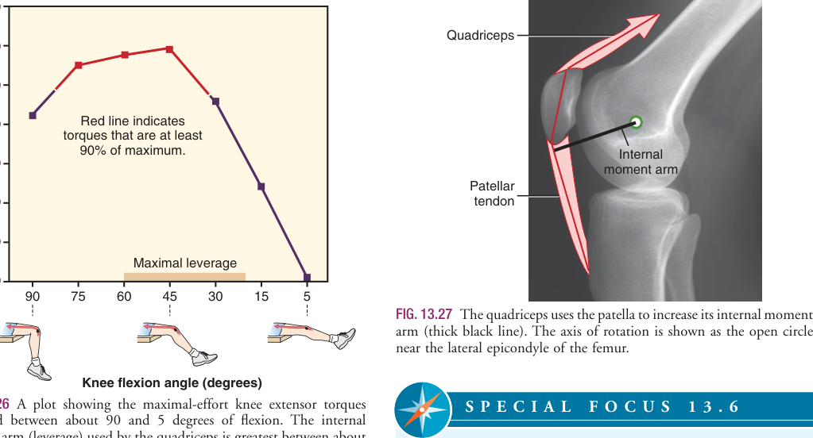
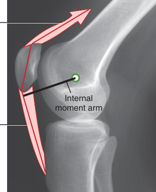
TẬP TRUNG ĐẶC BIỆT 13.6 — Yếu cơ tứ đầu đùi: Cơ chế bệnh sinh của hiện tượng "chậm duỗi" (Quadriceps Weakness: Pathomechanics of "Extensor Lag")
Những người bị yếu đáng kể cơ tứ đầu đùi thường bộc lộ khó khăn rõ rệt trong việc hoàn thành toàn bộ tầm duỗi gối kiểu xương chày trên xương đùi, thường được thể hiện ở tư thế ngồi. Khó khăn này vẫn tồn tại ngay cả khi tải trọng ngoài chỉ giới hạn ở trọng lượng của cẳng chân. Mặc dù khớp gối có thể được duỗi hoàn toàn một cách thụ động, các cố gắng duỗi chủ động thường thất bại trong việc tạo ra 15 đến 20 độ duỗi cuối cùng. Về mặt lâm sàng, biểu hiện đặc trưng của yếu cơ tứ đầu đùi này được gọi là hiện tượng "chậm duỗi" (extensor lag).
Chậm duỗi ở khớp gối thường là một vấn đề dai dẳng và gây lúng túng trong phục hồi chức năng của gối sau phẫu thuật hoặc sau chấn thương. Cơ học tạo ra tình trạng này ở tư thế ngồi như sau. Khi khớp gối tiến đến duỗi tận cùng, tiềm năng mô men trong tối đa của cơ tứ đầu đùi ở mức thấp nhất trong khi mô men ngoài (gập) đối nghịch lại ở mức lớn nhất (so sánh các đồ thị trong Hình 13.25 và 13.26). Sự chênh lệch tự nhiên này không được quan sát thấy ở những người có sức mạnh cơ tứ đầu đùi bình thường. Tuy nhiên, khi có yếu cơ đáng kể, sự chênh lệch này thường dẫn đến hiện tượng chậm duỗi.
Tràn dịch hoặc sưng nề của khớp gối làm tăng khả năng xuất hiện chậm duỗi. Sự sưng nề làm tăng áp lực trong khớp (intra-articular pressure), điều này có thể cản trở về mặt vật lý việc duỗi gối hoàn toàn. Áp lực trong khớp tăng cũng có thể ức chế phản xạ hoạt hóa thần kinh của cơ tứ đầu đùi. Do đó, các phương pháp làm giảm sưng khớp gối có thể đóng một vai trò quan trọng trong chương trình bài tập điều trị cho khớp gối. Kháng lực thụ động từ các cơ gân kheo (hamstrings) bị kéo giãn bắc qua khớp háng gập ở tư thế ngồi cũng có thể góp phần hạn chế duỗi hoàn toàn.
Ít nhất ba yếu tố ảnh hưởng đến chiều dài của cánh tay đòn duỗi gối trong suốt tầm chuyển động theo mặt phẳng đứng dọc (sagittal plane). Các yếu tố này gồm (1) hình dạng và vị trí của bánh chè, (2) hình dạng của phần xa xương đùi (distal femur) (bao gồm độ sâu và độ dốc của rãnh ròng rọc), và (3) trục xoay trong–ngoài di chuyển (migrating) tại khớp gối (được gọi là "evolute" ở phần đầu chương này). Chính việc chiều dài thay đổi của cánh tay đòn trong ảnh hưởng như thế nào đến hình dạng của đường cong mô men duỗi–góc khớp, như được mô tả trong Hình 13.26, thì vẫn chưa chắc chắn. Về mặt kỹ thuật rất khó tách biệt tác động của đòn bẩy khỏi tác động của sự thay đổi chiều dài cơ: cả hai yếu tố cùng thay đổi đồng thời trong suốt tầm chuyển động, và cả hai đều trực tiếp hoặc gián tiếp ảnh hưởng đến mô men duỗi gối.
Khớp bánh chè–đùi thường xuyên chịu các lực ép có độ lớn cao. Một số ví dụ về các lực này gồm 1,3 lần trọng lượng cơ thể khi đi bộ trên mặt đất phẳng, 2,6 lần trọng lượng cơ thể khi thực hiện động tác nâng chân duỗi thẳng (straight leg raise), 3,3 lần trọng lượng cơ thể khi leo cầu thang, và lên tới 7,8 lần trọng lượng cơ thể khi thực hiện các động tác "gập gối sâu" (knee bends) hoặc ngồi xổm sâu (squats). Mặc dù các lực ép này chủ yếu bắt nguồn từ các lực chủ động được tạo ra bởi cơ tứ đầu đùi nằm phía trên, độ lớn của chúng bị ảnh hưởng mạnh bởi lượng gập gối tại thời điểm kích hoạt cơ. Để minh họa sự tương tác quan trọng này, hãy xét lực ép lên khớp bánh chè–đùi ở tư thế ngồi xổm một phần (Hình 13.28A). Các lực trong cơ chế duỗi được truyền lên trên và xuống dưới qua gân tứ đầu đùi (quadriceps tendon, QT) và gân bánh chè (patellar tendon, PT), giống như một dây cáp vắt qua một ròng rọc. Tác động tổng hợp, hay kết hợp, của các lực này được hướng về rãnh ròng rọc (trochlear groove) của xương đùi dưới dạng một lực ép khớp (CF). Việc tăng độ gập gối bằng cách hạ thấp cơ thể vào tư thế ngồi xổm sâu hơn làm tăng đáng kể nhu cầu lực trong toàn bộ cơ chế duỗi, và cuối cùng là lên khớp bánh chè–đùi (xem Hình 13.28B). Độ gập gối tăng kèm theo tư thế ngồi xổm sâu hơn cũng làm giảm góc tạo bởi giao của hai vector lực QT và PT. Như được chỉ ra bởi phép cộng vector, việc giảm góc của các lực này làm tăng độ lớn của CF hướng giữa bánh chè và xương đùi. Về lý thuyết, nếu các vector QT và PT thẳng hàng và hướng ngược chiều nhau, lực ép do cơ bắp tạo ra lên khớp bánh chè–đùi sẽ bằng không.
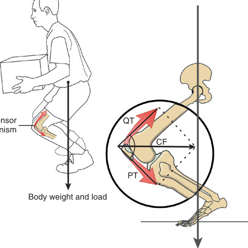
Hai yếu tố liên quan với nhau gắn với lực ép khớp trên khớp bánh chè–đùi (Two Interrelated Factors Associated with Joint Compression Force on the Patellofemoral Joint)
Cả lực ép và diện tích tiếp xúc khớp trên khớp bánh chè–đùi đều tăng theo độ gập gối, đạt mức tối đa trong khoảng giữa 60 và 90 độ. Như đã mô tả trước đó, lực ép có thể tăng lên các mức rất cao trong khi hạ thấp cơ thể vào tư thế ngồi xổm hoặc tư thế bước dài (lunge). Vì độ gập gối tăng đi kèm với mức tăng tương đối của lực ép lớn hơn mức tăng tương đối của diện tích tiếp xúc khớp, ứng suất (lực/diện tích) cũng lớn nhất tại khớp bánh chè–đùi ở tư thế 60 đến 90 độ gập gối. Nếu không có diện tích tiếp xúc tương đối lớn để phân tán lực ép lớn do cơ tứ đầu đùi tạo ra, ứng suất trong khớp có lẽ sẽ tăng lên các mức sinh lý không thể chịu đựng được. Việc diện tích tiếp xúc khớp lớn nhất ở các tư thế thường đi kèm lực ép cơ bắp lớn nhất tự nhiên bảo vệ khớp chống lại sự thoái hóa sụn do ứng suất. Cơ chế này cho phép hầu hết các khớp bánh chè–đùi khỏe mạnh và được căn chỉnh bình thường chịu được các lực ép lớn trong suốt cuộc đời, thường chỉ với rất ít hoặc không có khó chịu đáng kể hay thoái hóa sụn khớp hoặc xương dưới sụn (subchondral bone). Như sẽ được giải thích, tuy nhiên, đối với nhiều người, môi trường lực cao tự nhiên trong khớp bánh chè–đùi là một yếu tố góp phần chính vào sự phát triển của hội chứng đau khớp bánh chè–đùi (patellofemoral pain syndrome).
Các lực ép lớn xuất hiện tự nhiên tại khớp bánh chè–đùi thường được chịu đựng tốt, miễn là các lực được phân tán đều trên diện tích mặt khớp lớn nhất có thể. Một khớp có độ khớp hợp (congruity) kém hơn mức tối ưu, hoặc một khớp có các bất thường cấu trúc tinh vi, có lẽ sẽ trải qua hiện tượng "trượt" (tracking) bất thường của bánh chè. Hệ quả là, khớp bánh chè–đùi bị phơi nhiễm với ứng suất tiếp xúc khớp cao hơn, từ đó làm tăng nguy cơ phát triển các tổn thương thoái hóa và đau. Kịch bản như vậy có thể dẫn đến hội chứng đau khớp bánh chè–đùi hoặc có khả năng thúc đẩy viêm xương khớp sau này trong cuộc đời.
Vai trò của cơ tứ đầu đùi trong sự trượt của bánh chè (Role of the Quadriceps Muscle in Patellar Tracking)
Trong số những ảnh hưởng quan trọng nhất đến sinh cơ học của khớp bánh chè–đùi là độ lớn và hướng của lực do cơ tứ đầu đùi nằm phía trên tạo ra. Khi khớp gối đang duỗi, cơ tứ đầu đùi đang co kéo bánh chè không chỉ lên trên trong rãnh ròng rọc của xương đùi mà còn hơi về phía ngoài và về phía sau. Đường lực hướng ngoài nhẹ nhưng hiện diện thường xuyên do cơ tứ đầu đùi tạo ra là kết quả, một phần, của diện tích mặt cắt ngang và tiềm năng lực lớn hơn của cơ rộng ngoài (vastus lateralis). Do mối liên hệ được cho là tồn tại giữa đau khớp bánh chè–đùi và sự trượt hướng ngoài quá mức (và có thể trật khớp) của bánh chè, việc đánh giá đường kéo hướng ngoài tổng thể của cơ tứ đầu đùi so với bánh chè là một thước đo lâm sàng có ý nghĩa. Thước đo này được gọi là góc tứ đầu đùi (quadriceps angle), hay phổ biến hơn là góc Q (Q-angle) (Hình 13.29A). Góc Q được xác định trước tiên bằng cách dựng một đường thể hiện ước lượng về vector lực tổng hợp của các đầu khác nhau của cơ tứ đầu đùi. Đường này nối một điểm nằm giữa gai chậu trước–trên (anterior-superior iliac spine) và điểm giữa của bánh chè. Một đường thứ hai được vẽ thể hiện trục dài của gân bánh chè, được tạo bằng cách nối một điểm trên lồi củ chày (tibial tuberosity) với điểm giữa của bánh chè. Góc Q được tạo thành tại giao điểm của hai đường này, thường đo được khoảng 13 đến 15 độ (±4,5 độ) trong dân số người trưởng thành khỏe mạnh. Việc đánh giá góc Q đã bị phê phán do mối liên hệ kém với bệnh lý tại khớp bánh chè–đùi, quy trình đo chưa được chuẩn hóa đầy đủ, và không có khả năng đo sự căn chỉnh động. Tuy nhiên, góc Q vẫn là một chỉ số lâm sàng phổ biến và đơn giản để đánh giá tổng quát lực kéo tương đối hướng ngoài của cơ tứ đầu đùi lên bánh chè.
Các yếu tố tự nhiên chống lại hoặc hạn chế lực kéo hướng ngoài của bánh chè được mô tả trong phần tiếp theo. Nếu các yếu tố này không hoạt động một cách phối hợp, bánh chè có thể trượt (dịch chuyển và nghiêng) nhiều hơn về phía ngoài trong rãnh ròng rọc — một động học làm giảm diện tích tiếp xúc, tăng ứng suất và đau của khớp bánh chè–đùi, và có khả năng làm tăng khả năng trật bánh chè hướng ngoài mạn tính.
Việc hoạt hóa cơ tứ đầu đùi như một tổng thể cũng kéo và ép bánh chè về phía sau vào xương đùi, qua đó ổn định đường di chuyển của nó so với phần xa xương đùi. Tác dụng ổn định này tăng khi gối ở độ gập lớn hơn (xem lại Hình 13.28). Tuy nhiên, ngay cả ở tư thế duỗi gối hoàn toàn, một số sợi của cơ tứ đầu đùi vẫn được bố trí để tạo ra một lực ép về phía sau qua khớp bánh chè–đùi. Điều này đặc biệt rõ ràng khi quan sát sơ đồ nhìn từ bên về đường lực của các sợi chéo của cơ rộng trong (xem Hình 13.29B). Mặc dù tương đối nhỏ, tác dụng ổn định về phía sau này lên bánh chè đặc biệt hữu ích trong 20 đến 30 độ duỗi cuối cùng, tại thời điểm khi (1) bánh chè không còn nằm trọn trong rãnh ròng rọc của xương đùi và (2) lực ép (ổn định) khớp bánh chè–đùi tổng hợp do toàn bộ cơ tứ đầu đùi đang hoạt hóa tạo ra ở mức thấp nhất.
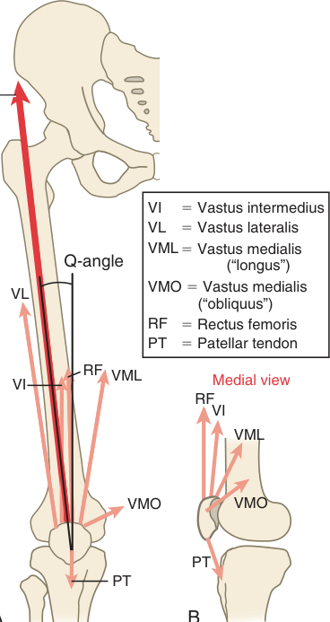
Nhiều yếu tố trên khắp chi dưới chống lại và qua đó hạn chế xu hướng kéo lệch ngoài của cơ tứ đầu đùi tác động tương đối lên khớp bánh chè–đùi. Những yếu tố này rất quan trọng đối với đường đi tối ưu. Trong ngữ cảnh này, đường đi tối ưu (optimal tracking) được định nghĩa là chuyển động giữa bánh chè và xương đùi diễn ra trên diện tích mặt khớp lớn nhất có thể với ứng suất nhỏ nhất có thể. Việc hiểu rõ các yếu tố tạo điều kiện thuận lợi cho đường đi tối ưu mang lại cái nhìn sâu sắc về phần lớn các cơ chế bệnh lý và nhiều phương pháp điều trị đau cùng các rối loạn khác của khớp bánh chè–đùi. Cả các yếu tố cục bộ lẫn các yếu tố toàn cục sẽ được mô tả. Các yếu tố cục bộ là những yếu tố tác động trực tiếp lên khớp bánh chè–đùi. Ngược lại, các yếu tố toàn cục (global factors) là những yếu tố liên quan đến sự căn chỉnh của các xương và khớp của chi dưới. Mặc dù các yếu tố này được mô tả như những thực thể riêng biệt, trên thực tế, hiệu quả của chúng trong việc tối ưu hóa đường đi của bánh chè dựa trên tổng hòa các ảnh hưởng kết hợp của chúng.
Các yếu tố cục bộ (Local Factors)
Như đã giới thiệu trước đó, đường tổng thể của lực cơ tứ đầu đùi thường được ước lượng bằng góc Q (Q-angle) (xem Hình 13.29A). Về mặt cơ sinh học, sự kéo lệch ngoài tổng thể của cơ tứ đầu đùi tạo ra một lực "căng dây cung" (bowstringing force) hướng ngoài lên bánh chè (Hình 13.30). Như thể hiện rõ qua phép cộng vectơ trong Hình 13.30, góc Q càng lớn thì lực căng dây cung hướng ngoài càng lớn. Một lực căng dây cung hướng ngoài lớn có xu hướng kéo bánh chè lệch ra ngoài, trên một vùng có diện tích tiếp xúc giảm, do đó làm tăng ứng suất lên các mặt khớp của nó và về tiềm năng làm tăng khả năng trật khớp.
Như được chỉ ra trong Hình 13.30, sự căng quá mức của dải chậu–gối (iliotibial band) hoặc các sợi mạc giữ bánh chè ngoài liên thông có thể góp phần vào lực kéo tự nhiên hướng ngoài lên bánh chè. Mặc dù thủ thuật này còn gây tranh cãi, một số bác sĩ phẫu thuật thực hiện giải phóng một phần các sợi mạc giữ bánh chè ngoài nhằm cố gắng giảm tình trạng đường đi lệch ngoài quá mức của bánh chè.
Các cấu trúc chống lại lực căng dây cung hướng ngoài lên bánh chè được thể hiện ở phía bên phải của Hình 13.30. Mặt ngoài của rãnh ròng rọc của xương đùi (trochlear groove of the femur) bình thường dốc hơn mặt trong (so sánh các mặt được vẽ trong Hình 13.23D). Độ dốc lớn hơn này tự nhiên chặn, hoặc ít nhất cản trở, bánh chè đang tiến lại gần và qua đó hạn chế sự trượt lệch ngoài quá mức của nó. Để bánh chè trật lệch ngoài, nó phải di chuyển hoàn toàn lên trên và vượt qua mặt dốc tương đối dốc này. Các nhà nghiên cứu đã làm phẳng thí nghiệm mặt ngoài của rãnh ròng rọc trên các mẫu thi thể và báo cáo mức giảm trung bình 55% độ ổn định hướng trong của bánh chè trên toàn bộ tầm chuyển động của đầu gối được kiểm nghiệm; nói cách khác, bánh chè có thể bị trượt lệch ra ngoài với lực nhỏ hơn 55% so với trước khi mặt này bị làm phẳng. Độ dốc bình thường khá dốc của mặt ngoài rãnh ròng rọc của xương đùi cung cấp nguồn kháng lực cục bộ đơn lẻ quan trọng nhất chống lại sự dịch chuyển lệch ngoài quá mức của bánh chè. Rãnh ròng rọc của xương đùi bị loạn sản, "bị làm phẳng" có thể xảy ra ở những người vốn khỏe mạnh khác và là một trong vài yếu tố nguy cơ được ghi nhận đối với đường đi lệch ngoài quá mức hoặc trật khớp bánh chè mạn tính. Bánh chè cao bất thường ("patella alta") cũng liên quan đến đường đi lệch ngoài quá mức của bánh chè. Khi đầu gối duỗi qua 30–40 độ cuối cùng, bánh chè cao bị kéo lên phía trên rãnh ròng rọc một cách sớm, và do đó mất một yếu tố ổn định bằng xương.
Các sợi chéo của cơ rộng trong (thường được viết tắt là VMO) dường như được định hướng đặc biệt để giúp cân bằng ít nhất một phần lực kéo hướng ngoài mà toàn bộ cơ tứ đầu đùi tạo ra lên bánh chè (xem lại Hình 13.24). Việc cắt chọn lọc các sợi của VMO trên các mẫu thi thể tạo ra mức giảm trung bình 27% độ ổn định hướng trong của bánh chè trên toàn bộ tầm chuyển động của đầu gối được kiểm nghiệm. Phát hiện này có thể khó áp dụng vào thực hành lâm sàng vì cực hiếm khi một người bị liệt chọn lọc riêng cơ VMO. Tuy nhiên, trong nhiều thập kỷ, bằng chứng kinh nghiệm đã gợi ý sự teo cơ ưu tiên ở VMO ở những người bị đau khớp bánh chè–đùi mạn tính hoặc có tiền sử trật khớp mạn tính, dường như do không sử dụng hoặc ức chế nguồn gốc thần kinh. Dữ liệu gần đây, tuy nhiên, đặt câu hỏi hoặc bác bỏ quan niệm rằng mức teo cơ quan sát được ở VMO nặng hơn mức teo cơ thường thấy trên toàn bộ cơ tứ đầu đùi. Các nghiên cứu ủng hộ rõ ràng cho lập luận rằng rối loạn chức năng thần kinh–cơ bất thường của VMO là nguyên nhân của hội chứng đau khớp bánh chè–đùi hoặc trật lệch ngoài mạn tính còn lẫn lộn và nhìn chung là thiếu. Dù vậy, sự nghi ngờ về teo cơ ưu tiên, ức chế hoặc kích hoạt chậm của VMO đã dẫn đến sự phát triển của nhiều phương pháp điều trị được thiết kế để tuyển chọn, củng cố hoặc tăng cường bằng cách khác chức năng của phần cơ tứ đầu đùi này. Mặc dù cơ sở lý luận của phương pháp điều trị này là hợp lý về mặt cơ sinh học, khả năng thay đổi chọn lọc sự kiểm soát, thời điểm kích hoạt hoặc sức mạnh của chỉ một thành phần của cơ tứ đầu đùi vẫn là một chủ đề gây tranh cãi.
Cuối cùng, các sợi mạc giữ bánh chè trong chạy hướng trong và hướng xa từ mép trong của bánh chè (xem Hình 13.7). Tài liệu lâm sàng và nghiên cứu thường gọi các sợi này là dây chằng bánh chè–đùi trong (medial patellofemoral ligament), bao gồm một bộ sợi rộng nhưng mỏng liên kết bánh chè trong, xương đùi, xương chày, sụn chêm trong, và mặt dưới của cơ VMO. Dây chằng này nổi tiếng về mặt y học vì nó thường bị đứt rách sau một lần trật bánh chè lệch ngoài hoàn toàn. Về mặt cơ sinh học, dây chằng này được đánh giá cao vì khả năng hạn chế sự trượt lệch ngoài của bánh chè. Việc cắt chọn lọc dây chằng bánh chè–đùi trong trên các mẫu thi thể tạo ra mức giảm trung bình 27% độ ổn định hướng trong của bánh chè trên toàn bộ tầm chuyển động của đầu gối được kiểm nghiệm. Điều đáng chú ý là mức giảm độ ổn định hướng trong của bánh chè tăng vọt lên 50% khi đầu gối ở tư thế duỗi hoàn toàn. Dây chằng bánh chè–đùi trong bị kéo căng nhất trong 20–30 độ duỗi cuối cùng. Bicos và cộng sự cho rằng dây chằng được kéo căng trong tư thế duỗi với sự hỗ trợ của cơ VMO đang hoạt động, mà dây chằng bám một phần vào cơ này. Các tác động chủ động và bị động kết hợp này cung cấp một nguồn ổn định hướng trong hữu ích cho bánh chè tại một điểm trong tầm chuyển động của đầu gối mà tại đó bánh chè kém ổn định nhất vì, một phần, nó tương đối tách rời khỏi "điểm giữ" bằng xương của rãnh ròng rọc của xương đùi.
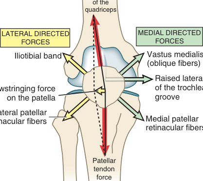
Các yếu tố toàn cục (Global Factors)
Độ lớn của lực căng dây cung hướng ngoài tác động lên bánh chè chịu ảnh hưởng mạnh bởi sự căn chỉnh trong mặt phẳng trán và mặt phẳng ngang của các xương liên quan đến cơ chế duỗi gối (knee extensor mechanism). Theo một nguyên tắc chung, các yếu tố kháng lại tình trạng vạy (valgus) quá mức hoặc các mức cực đoan của xoay trục của khớp chày–đùi giúp duy trì đường đi tối ưu của khớp bánh chè–đùi. Các yếu tố này được gọi là "toàn cục" theo nghĩa chúng liên quan đến các khớp cách xa khớp bánh chè–đùi, xa tới khớp háng và khớp dưới talus (subtalar joint) của bàn chân.
Tình trạng genu valgum (vạy gối) quá mức do các hoạt động chịu trọng lượng động có thể làm tăng góc Q và qua đó tăng lực căng dây cung hướng ngoài lên bánh chè (so sánh phần A và B của Hình 13.31). Nếu tình trạng này kéo dài, lực hướng ngoài lên bánh chè có thể làm thay đổi sự căn chỉnh của nó và qua đó tăng ứng suất lên khớp bánh chè–đùi, đặc biệt là phía ngoài. Tình trạng vạy gối tăng lên có thể xảy ra do chùng nhão hoặc tổn thương dây chằng bên chày (MCL) của đầu gối, nhưng cũng gián tiếp do một tư thế động của khớp háng liên quan đến tăng khép xương đùi (khớp háng) ở tư thế đứng thẳng. Sự yếu của các cơ dạng háng hoặc căng cứng của các cơ khép háng có thể cho phép xương đùi nghiêng quá mức về phía trong, về phía đường giữa khi đứng, qua đó tạo ứng suất quá mức lên các cấu trúc trong của đầu gối — thường là tiền thân của tình trạng vạy gối quá mức. Hơn nữa, trong các hoạt động tương đối đòi hỏi như ngồi xổm một chi, những người có cơ dạng háng yếu có thể nghiêng thân mình về phía nhóm cơ bị yếu (tức là dấu hiệu Trendelenburg bù trừ được mô tả trong Chương 12). Sự nghiêng thân mình cùng bên này có thể dịch chuyển lực phản lực đất (ground reaction force) ra phía ngoài khớp gối chân đỡ, qua đó tạo ra một mô men genu valgus (hướng ngoài). Cuối cùng, tình trạng sấp (lộn ngoài) quá mức của khớp dưới talus, đặc biệt khi tiếp đất sau một cú nhảy, có thể tạo ra tải trọng vạy gối và tư thế vạy gối quá mức ở đầu gối. Mối quan hệ động học chặt chẽ giữa khớp dưới talus và đầu gối được mô tả chi tiết hơn trong Chương 14.
Như được mô tả trong hình vẽ đầu gối của người phụ nữ ở Hình 13.31B, xoay ngoài quá mức của đầu gối thường xảy ra cùng với tải trọng vạy gối quá mức. Xoay ngoài của đầu gối đặt lồi củ chày (tibial tuberosity) và gân bánh chè gắn vào nó ở một vị trí lệch ngoài hơn so với phần xa xương đùi. Như được chỉ ra bằng cách so sánh phần A và B của Hình 13.31, xoay ngoài quá mức của đầu gối cũng có thể làm tăng góc Q và qua đó phóng đại lực căng dây cung hướng ngoài lên bánh chè. Như được chỉ ra bởi cặp mũi tên màu xanh dương trong Hình 13.31, xoay ngoài của đầu gối có thể xảy ra như một tổ hợp của hai góc nhìn xương đùi trên xương chày (femoral-on-tibial) và xương chày trên xương đùi (tibial-on-femoral). Tuy nhiên, xoay ngoài quá mức của đầu gối thường được biểu hiện ở tư thế chịu trọng lượng, khi xương đùi xoay trong tương đối so với cẳng chân cố định hoặc gần như cố định.
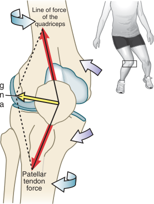
Tư thế xoay trong dai dẳng của xương đùi trong các hoạt động chịu trọng lượng có thể xảy ra do sức mạnh hoặc sự kiểm soát thần kinh–cơ giảm của các cơ xoay ngoài háng, do căng cứng của các cơ xoay trong háng, hoặc như một sự bù trừ cho xoay trước xương đùi (femoral anteversion) quá mức (xem Chương 12) hoặc xoắn xương chày (hướng ngoài) quá mức. Khi có sự yếu hoặc kiểm soát kém của các cơ háng, tư thế xoay trong háng quá mức thường kết hợp với các mức khép háng khác nhau. Mặc dù sự yếu tư thế này có thể tinh vi, nó thường được quan sát thấy khi một người được yêu cầu từ từ bước xuống một bậc thang hoặc tự đặt vào tư thế ngồi xổm một chân một phần. Trong động tác này, phần xa xương đùi có thể được quan sát thấy hơi "lăn" vào trong, bất kể nỗ lực có ý thức để kháng lại chuyển động này bằng cách kích hoạt các cơ háng.
Theo nhiều nguồn tài liệu, sự yếu hoặc kiểm soát giảm của các cơ xoay ngoài và cơ dạng háng rõ rệt hơn ở phụ nữ và có thể làm tăng nguy cơ phát triển đau khớp bánh chè–đùi hoặc có xu hướng trật bánh chè lệch ngoài. Để khám phá mối liên hệ này, Powers và cộng sự đã sử dụng chụp cộng hưởng từ động học (kinematic MRI) để đánh giá động học bánh chè–đùi ở một nhóm phụ nữ trẻ có tiền sử đau khớp bánh chè–đùi. Một thành phần của nghiên cứu hướng dẫn các đối tượng chủ động đứng dậy từ tư thế ngồi xổm một chân một phần, từ 45 độ gập đến duỗi gối hoàn toàn. Trung bình, các xương đùi của khớp háng đang duỗi xoay trong khá đột ngột trong suốt 20 độ cuối cùng của duỗi gối hoàn toàn. Phân tích kỹ từng cá thể, các hình ảnh cho thấy rãnh ròng rọc của xương đùi xoay trong dưới bánh chè, vốn được giữ cố định bởi sự co cơ mạnh của cơ tứ đầu đùi. Động học xương đùi trên bánh chè (femoral-on-patellar) như vậy làm cho cơ chế duỗi và bánh chè gắn trong đó căn chỉnh lệch ngoài hơn và gần hơn với mặt ngoài nâng cao của rãnh ròng rọc của xương đùi. Sự căn chỉnh mong manh này có thể đặt bánh chè gần hơn với điểm trật lệch ngoài. Hơn nữa, các quan sát này gợi ý rằng các cơ chế bệnh lý của đường đi lệch ngoài quá mức có thể bắt nguồn từ xương đùi bị dịch chuyển vào trong dưới bánh chè, cũng như từ bánh chè bị dịch chuyển ra ngoài trên xương đùi, như thường được mô tả.
TẬP TRUNG ĐẶC BIỆT 13.7 — Hội chứng đau khớp bánh chè–đùi: Một tình trạng quá phổ biến ảnh hưởng đến đầu gối (Patellofemoral Pain Syndrome: An All Too Common Condition Affecting the Knee)
Hội chứng đau khớp bánh chè–đùi (patellofemoral pain syndrome, PFPS) là một trong những tình trạng chỉnh hình phổ biến nhất được gặp trong các cơ sở ngoại trú y học thể thao. Tình trạng có khả năng gây tàn phế này chiếm khoảng 30% tổng số rối loạn đầu gối ở phụ nữ và 20% ở nam giới. PFPS thường ảnh hưởng nhất đến những người tương đối trẻ và năng động, và thường liên quan đến các hoạt động quá mức sử dụng. Tuy nhiên, ít thường xuyên hơn, PFPS ảnh hưởng đến những người ít vận động hoặc những người không có tiền sử quá mức sử dụng hoặc chấn thương.
Người bị PFPS thường trải qua cơn đau lan tỏa quanh bánh chè (peripatellar) hoặc sau bánh chè (retropatellar) với khởi phát âm thầm. Đau bị làm trầm trọng hơn khi ngồi xổm hoặc leo cầu thang, hoặc khi ngồi với đầu gối gập trong một thời gian dài. Các trường hợp PFPS có thể nhẹ, chỉ liên quan đến một cơn đau tổng quát quanh vùng đầu gối trước, hoặc có thể nặng đến mức hạn chế việc tham gia các hoạt động hàng ngày.
Cơ chế bệnh sinh chính xác của PFPS vẫn chưa được biết và có thể liên quan đến các yếu tố thần kinh, di truyền, thần kinh–cơ, hoặc cơ sinh học tác động riêng lẻ hoặc theo một số tổ hợp. Chương này tập trung chủ yếu vào các nguyên nhân cơ sinh học của PFPS, với giả định nền tảng rằng tình trạng này chủ yếu bắt nguồn từ sự không dung nạp ứng suất của sụn khớp và xương dưới sụn có dây thần kinh chi phối. Ứng suất quá mức thường bắt nguồn từ chuyển động (đường đi) và sự căn chỉnh bất thường của bánh chè trong rãnh ròng rọc. Làm phức tạp thêm các cơ chế bệnh lý này là mối quan hệ chặt chẽ giữa động học và động lực học của khớp bánh chè–đùi với các khớp khác của chi dưới, đặc biệt trong tình huống chịu trọng lượng. Hơn nữa, việc xác định liệu các cơ chế bệnh lý là nguyên nhân chính hay hậu quả của ứng suất tăng và sự khó chịu liên quan trong khớp bánh chè–đùi không phải lúc nào cũng chắc chắn. Sự thiếu hiểu biết về nguyên nhân chính xác và bệnh lý nền tảng của PFPS có thể làm cho tình trạng này trở thành một trong những thách thức điều trị khó khăn nhất trong vật lý trị liệu và y học thể thao. Cơ sở lý luận cơ sinh học đằng sau nhiều phương pháp điều trị truyền thống cho PFPS sẽ trở nên rõ ràng khi chương này tiến triển.
Xoay trong quá mức của đầu gối khi đi bộ cũng được cho là một yếu tố dễ dẫn đến đau khớp bánh chè–đùi. Trên lâm sàng, xoay trong quá mức của xương chày thường liên quan nhất đến tình trạng sấp quá mức của khớp dưới talus trong pha đỡ sớm và giữa khi đi bộ (Chương 14). Mặc dù xoay trong quá mức của xương chày (tại đầu gối) về mặt lý thuyết sẽ làm giảm góc Q và lực căng dây cung hướng ngoài liên quan lên bánh chè, người ta đã suy đoán rằng một sự xoay trong quá mức bù trừ của xương đùi sẽ xảy ra, qua đó làm tăng ứng suất tại khớp bánh chè–đùi. Vì lý do này, việc sử dụng dụng cụ chỉnh hình bàn chân (foot orthotics) để kiểm soát khớp dưới talus có thể là một chiến lược điều trị phù hợp cho một người bị hội chứng đau khớp bánh chè–đùi.
Như đã đề cập trước đó, dữ liệu cho thấy phụ nữ có tỷ lệ mắc động học bất thường và bệnh lý liên quan tại khớp bánh chè–đùi cao hơn nam giới. Ví dụ, dữ liệu thu thập tại một phòng khám y học thể thao lớn cho thấy trật bánh chè lệch ngoài tái phát chiếm 58,4% tổng số trường hợp trật khớp ở phụ nữ, so với chỉ 14% ở nam giới. Người ta suy đoán rằng sự thiên lệch giới tính trong trật bánh chè mạn tính có thể, ở một số người, liên quan về mặt cơ sinh học với mức góc Q lớn hơn 3 đến 4 độ thường đo được ở nữ giới. Góc Q lớn hơn có thể phản ánh tỷ lệ giữa chiều rộng khung chậu và chiều dài xương đùi lớn hơn ở nữ giới. Việc góc Q dường như lớn hơn ở nữ giới (và lực căng dây cung hướng ngoài lên bánh chè giả định lớn hơn) có làm thay đổi đường đi bánh chè và ứng suất đến mức thực sự gây ra tỷ lệ trật khớp và đau liên quan đến ứng suất tăng lên hay không là điều khó chứng minh, mặc dù đây là một điểm hợp lý cần cân nhắc.
Đường đi bất thường của bánh chè là một chủ đề phức tạp vì nhiều lý do. Thứ nhất, động học đường đi tinh vi, biến động cao và khó đo. Thứ hai, mối liên hệ giữa đường đi bất thường và bệnh lý chưa được thiết lập tốt hoặc được thống nhất rộng rãi. Mặc dù người ta thường tin rằng đường đi bất thường có thể góp phần vào tổn thương sụn liên quan đến ứng suất và cuối cùng là hội chứng đau khớp bánh chè–đùi (PFPS), vai trò của nó trong trật bánh chè lệch ngoài mạn tính không rõ ràng như vậy. Tương đối phổ biến khi một người có các triệu chứng điển hình của PFPS lại không có tiền sử trật bánh chè cấp tính hoặc mạn tính. Tương tự, một người có tình trạng bất ổn bánh chè mạn tính (tức là tiền sử nhiều lần trật khớp) có thể tương đối không đau và di chuyển được, ngoại trừ trong và ngay sau một lần trật khớp. Thường thì tình trạng bất ổn bánh chè với tiền sử nhiều lần trật khớp bắt nguồn từ một biến cố chấn thương ban đầu đủ nghiêm trọng, khi trật bánh chè nghiêm trọng đến mức tổn thương các bộ ổn định mô mềm của khớp bánh chè–đùi, chẳng hạn dây chằng bánh chè–đùi trong. Một tổn thương như vậy có thể làm một người dễ bị nhiều lần trật khớp hơn, mỗi lần trật lại làm khớp bánh chè–đùi kém ổn định hơn. Thêm vào bức tranh lâm sàng phức tạp là việc một người thể hiện các dấu hiệu điển hình của PFPS và có tiền sử trật khớp mạn tính không phải là hiếm.
Mặc dù các mối quan hệ cơ chế bệnh lý giữa PFPS và tình trạng bất ổn bánh chè chưa rõ ràng, đường đi bất thường của bánh chè cần ít nhất được nghi ngờ là một phần nguyên nhân nền tảng. Bảng 13.6 cung cấp danh sách các nguyên nhân gián tiếp và trực tiếp tiềm ẩn của đường đi lệch ngoài quá mức của bánh chè. Mặc dù nhiều nguyên nhân được liệt kê trong Bảng 13.6 được mô tả như những thực thể riêng biệt, trên thực tế nhiều nguyên nhân xảy ra kết hợp với nhau. Do đó, đánh giá lâm sàng những người bị bệnh lý khớp bánh chè–đùi phải xem xét một số yếu tố liên quan tiềm ẩn có thể góp phần vào vấn đề. Cần nhiều nghiên cứu lâm sàng hơn nữa trong lĩnh vực này để cải thiện điều trị bảo tồn và phẫu thuật đối với đau khớp bánh chè–đùi và trật khớp mạn tính.
| Nguyên nhân cấu trúc hoặc chức năng (Structural or Functional Causes) | Ví dụ cụ thể (Specific Examples) |
|---|---|
| Loạn sản xương hoặc bất thường khác (Bony dysplasia or other anomaly) | Loạn sản mặt ngoài của rãnh ròng rọc của xương đùi (rãnh "bị làm phẳng") (Dysplastic lateral facet of the trochlear groove of the femur ("flattened" groove)) Bánh chè "cao" (patella alta) ("High" patella (patella alta)) |
| Chùng nhão quá mức trong mô liên kết quanh khớp (Excessive laxity in periarticular connective tissue) | Chùng nhão của các sợi mạc giữ bánh chè trong (dây chằng bánh chè–đùi trong) (Laxity of the medial patellar retinacular fibers (medial patellofemoral ligament)) Chùng nhão hoặc hao mòn của dây chằng bên chày của đầu gối (Laxity or attrition of the medial collateral ligament of the knee) Chùng nhão và chiều cao giảm của vòm dọc trong của bàn chân (liên quan đến sấp quá mức của khớp dưới talus) (Laxity and reduced height of the medial longitudinal arch of the foot (related to overpronation of the subtalar joint)) |
| Cứng hoặc căng quá mức trong mô liên kết quanh khớp và cơ (Excessive stiffness or tightness in periarticular connective tissue and muscle) | Tăng căng cứng trong các sợi mạc giữ bánh chè ngoài hoặc dải chậu–gối (Increased tightness in the lateral patellar retinacular fibers or iliotibial band) Tăng căng cứng của các cơ xoay trong hoặc cơ khép của khớp háng (Increased tightness of the internal rotator or adductor muscles of the hip) |
| Mức cực đoan của căn chỉnh xương hoặc khớp (Extremes of bony or joint alignment) | Coxa varus Xoay trước xương đùi quá mức (Excessive anteversion of the femur) Xoắn xương chày hướng ngoài (External tibial torsion) Góc Q lớn (Large Q-angle) Genu valgum quá mức (Excessive genu valgum) |
| Yếu cơ (Muscle weakness) | Yếu hoặc kiểm soát kém của: • các cơ xoay ngoài và cơ dạng háng (hip external rotator and abductor muscles) • cơ rộng trong (các sợi chéo) (the vastus medialis (oblique fibers)) • cơ chày sau (tibialis posterior muscle) (liên quan đến sấp quá mức của bàn chân) (related to overpronation of the foot) |
TẬP TRUNG ĐẶC BIỆT 13.8 — Các nguyên tắc điều trị truyền thống đối với đường đi bất thường và trật khớp mạn tính của khớp bánh chè–đùi (Traditional Treatment Principles for Abnormal Tracking and Chronic Dislocation of the Patellofemoral Joint)
Phần lớn điều trị chỉnh hình bảo tồn và vật lý trị liệu đối với đường đi bất thường của bánh chè và trật lệch ngoài mạn tính tập trung vào việc giải quyết nhiều cơ chế bệnh lý nền tảng được mô tả trong chương này. Đáng tiếc là không có một phương pháp chuẩn vàng được chấp nhận rộng rãi. Tuy nhiên, nói chung, người ta cố gắng thay đổi, càng nhiều càng tốt, sự căn chỉnh của khớp chày–đùi và khớp bánh chè–đùi như một cách để giảm độ lớn của lực căng dây cung hướng ngoài lên bánh chè. Điều này có thể bao gồm các bài tập nhằm củng cố hoặc rèn luyện sự kiểm soát đối với các cơ dạng và xoay ngoài háng, các cơ thân mình, cơ tứ đầu đùi (đặc biệt là các sợi chéo của cơ rộng trong), và các cơ khác bình thường hỗ trợ vòm dọc trong của bàn chân. Ngoài ra, vật lý trị liệu cũng có thể bao gồm kéo giãn các mô liên kết quanh khớp bị căng cứng của khớp háng và đầu gối, vận động bánh chè (mobilizing the patella), hoặc sử dụng nẹp bánh chè hoặc dụng cụ chỉnh hình bàn chân để giảm tình trạng sấp quá mức của bàn chân. Dán băng bánh chè (patellar taping) cũng đã được sử dụng nhằm cố gắng dẫn hướng đường đi của bánh chè tối ưu hơn, thay đổi kiểu kích hoạt cơ của các sợi chéo của cơ rộng trong, hoặc cung cấp phản hồi sinh học (biofeedback) tăng cường từ vùng này.
Hiệu quả của phần lớn điều trị bảo tồn đối với đường đi lệch ngoài quá mức và trật khớp mạn tính của bánh chè còn gây tranh cãi.
Có lẽ phương pháp điều trị bảo tồn được chấp nhận rộng rãi nhất là tư vấn các cách điều chỉnh hoạt động thể chất nhằm tạo ra ứng suất quá lớn không cần thiết lên khớp bánh chè–đùi (patellofemoral joint). Ví dụ, khi có đau gối trước, thường được khuyến nghị hạn chế các bài tập hoặc hoạt động chức năng đòi hỏi lực lớn từ cơ tứ đầu đùi (quadriceps), đặc biệt khi thực hiện ở mức gập cao hơn. Nhìn chung, các hoạt động như cúi người hoặc ngồi xổm nên được điều chỉnh khi có thể theo cách chuyển một phần lực cơ từ cơ tứ đầu đùi sang các cơ duỗi háng.
Các phẫu thuật đã được thiết kế để giảm bớt tác động của các lực phía ngoài quá mức lên bánh chè. Các ví dụ bao gồm giải phóng mạc giữ ngoài (lateral retinacular release), phẫu thuật tạo hình ròng rọc (trochleoplasty), vá một dây chằng bánh chè–đùi trong bị rách hoặc lỏng, sắp xếp lại cơ chế duỗi, đặc biệt là các sợi chéo của cơ rộng trong (vastus medialis), và di chuyển hoặc nâng phần trong lồi củ chày (tibial tuberosity). Một số thủ thuật này có thể được kết hợp với nhau. Trong các trường hợp nghiêm trọng của xoay trước xương đùi quá mức, có thể cân nhắc phẫu thuật cắt xương khử xoay (de-rotation osteotomy) để giảm tư thế xoay trong của khớp háng. Giống như nhiều cách tiếp cận bảo tồn trong điều trị các rối loạn của khớp bánh chè–đùi, cũng có nhiều cách tiếp cận phẫu thuật cho vấn đề này — trong đó nhiều cách vẫn còn gây tranh cãi. Sự đa dạng mênh mông của các cách tiếp cận điều trị phản ánh, một phần, sự thiếu hiểu biết về cơ chế sinh bệnh có thể rất phức tạp của vấn đề này.
Ngoại trừ cơ bụng chân (gastrocnemius), tất cả các cơ băng qua mặt sau của gối đều có khả năng gập và xoay trong hoặc xoay ngoài khớp gối. Nhóm gập–xoay của gối (flexor-rotator group) bao gồm gân kheo (hamstrings), cơ may (sartorius), cơ mảnh (gracilis) và cơ khoeo (popliteus). Không giống nhóm cơ duỗi gối được chi phối bởi thần kinh đùi (femoral nerve), các cơ gập–xoay có ba nguồn chi phối thần kinh: thần kinh đùi, thần kinh bịt (obturator) và thần kinh tọa (sciatic).
Giải phẫu chức năng (Functional Anatomy)
Các cơ gân kheo (tức cơ bán màng [semimembranosus], cơ bán gân [semitendinosus] và đầu dài của cơ nhị đầu đùi [biceps femoris]) có chỗ bám gần trên mỏm ngồi (ischial tuberosity). Đầu ngắn của cơ nhị đầu đùi bám gần vào mép ngoài của mấu gồ (linea aspera) của xương đùi. Ở phía xa, các cơ gân kheo băng qua khớp gối và bám vào xương chày và xương mác (xem Hình 13.9 và 13.10).
Cơ bán màng bám xa vào mặt sau của mỏm cầu trong của xương chày (medial condyle of the tibia). Các chỗ bám xa bổ sung của cơ này bao gồm dây chằng bên chày (MCL), cả hai sụn chêm, và dây chằng khoeo chéo (oblique popliteal ligament). Trong phần lớn đường đi, gân cơ bán gân có chất sợi chắc nằm phía sau cơ bán màng. Tuy nhiên, ngay phía gần khớp gối, gân của cơ bán gân chạy về phía trước hướng tới chỗ bám xa trên mặt trước–trong của xương chày. Cả hai đầu của cơ nhị đầu đùi bám chủ yếu vào đầu trên xương mác (head of fibula), với các chỗ bám thứ yếu vào dây chằng bên mác, bao khớp của khớp chày–mác gần, và lồi củ ngoài của xương chày.
Tất cả các cơ gân kheo, trừ đầu ngắn của cơ nhị đầu đùi, đều băng qua khớp háng và khớp gối. Như đã mô tả trong Chương 12, ba cơ gân kheo hai khớp là các cơ duỗi háng rất hiệu quả, đặc biệt trong việc kiểm soát vị trí của khung chậu và thân người trên xương đùi.
Ngoài việc gập gối, các gân kheo trong (tức cơ bán màng và cơ bán gân) còn xoay trong khớp gối. Cơ nhị đầu đùi gập và xoay ngoài khớp gối. Xoay trục chủ động theo một trong hai hướng được tự do nhất khi gối ở tư thế gập một phần. Có thể cảm nhận tác động xoay trục này của gân kheo bằng cách sờ nắn gân của cơ bán gân và cơ nhị đầu đùi phía sau gối trong khi cẳng chân được xoay trong và xoay ngoài chủ động lặp đi lặp lại. Việc này được thực hiện khi đối tượng ngồi với gối gập 70 đến 90 độ. Khi gối được duỗi dần, điểm trụ của cẳng chân đang xoay chuyển từ gối lên háng. Ở tư thế duỗi hoàn toàn, xoay chủ động tại gối bị hạn chế vì gối bị khóa cơ học và hầu hết các dây chằng bị kéo căng. Hơn nữa, cánh tay đòn của gân kheo cho xoay trong và xoay ngoài gối bị giảm đáng kể khi duỗi hoàn toàn.
Cơ may và cơ mảnh có chỗ bám gần trên những phần khác nhau của khung chậu (xem Chương 12). Ở khớp háng, cả hai cơ đều là cơ gập háng, nhưng chúng có tác động ngược nhau trong các mặt phẳng trán và ngang. Ở phía xa, gân của cơ may và cơ mảnh chạy song song bên nhau băng qua phía trong của gối để bám vào thân trước–trong phần gần của xương chày, gần cơ bán gân (xem Hình 13.10). Ba gân hợp nhất của cơ may, cơ mảnh và cơ bán gân bám vào xương chày bằng một phiến mô liên kết chung, rộng, được gọi là chân ngỗng (pes anserinus) (e-Hình 13.1). Như một nhóm, các "cơ chân ngỗng" là những cơ xoay trong gối hiệu quả. Các mô liên kết giữ các gân của nhóm chân ngỗng ngay phía sau trục xoay trong–ngoài của khớp gối. Do đó, ba cơ chân ngỗng vừa gập vừa xoay trong khớp gối.
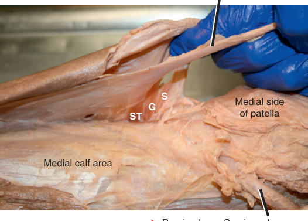
Nhóm chân ngỗng góp phần đáng kể vào sự ổn định động ở phía trong của gối. Cùng với dây chằng bên chày và bao khớp sau–trong, căng chủ động trong các cơ chân ngỗng chống lại xoay ngoài gối và các tải trọng valgus (valgus, gập ngoài) đặt lên gối.
Cơ khoeo là một cơ hình tam giác nằm sâu dưới cơ bụng chân, bên trong hố khoeo (popliteal fossa) (xem Hình 13.9). Bằng một gân trong bao khớp (intracapsular tendon) rất khỏe, cơ khoeo bám gần vào mỏm cầu ngoài của xương đùi, giữa dây chằng bên mác và sụn chêm ngoài (xem Hình 13.8 và 13.12). Ngay dưới khớp gối, các sợi từ gân cơ khoeo nối với mép sau kề cận của sụn chêm ngoài và với đầu trên xương mác (qua dây chằng khoeo–mác [popliteofibular ligament]; xem Hình 13.8). Ở phía xa hơn, cơ khoeo có chỗ bám rộng trên mặt sau của xương chày.
Giải phẫu và tác động của cơ bụng chân (gastrocnemius) và cơ gối (plantaris) sẽ được xem xét trong Chương 14.
Hoạt động nhóm của các cơ gập–xoay (Group Action of Flexor-Rotator Muscles)
Nhiều chức năng của các cơ gập–xoay của gối được biểu hiện trong các hoạt động đi bộ và chạy. Các ví dụ về các chức năng này được xem xét riêng biệt cho các chuyển động kiểu xương chày trên xương đùi (tibial-on-femoral) và kiểu xương đùi trên xương chày (femoral-on-tibial) của gối.
Kiểm soát động học xương kiểu xương chày trên xương đùi (Control of Tibial-on-Femoral Osteokinematics)
Một tác động quan trọng của các cơ gập–xoay là tăng tốc hoặc giảm tốc cẳng chân trong pha vung (swing phase) của việc đi bộ hoặc chạy. Thông thường, các cơ này tạo ra các lực tương đối thấp đến trung bình nhưng với vận tốc rút ngắn hoặc kéo dài tương đối cao. Ví dụ, một trong những chức năng quan trọng hơn của các cơ gân kheo là giảm tốc cẳng chân đang tiến về phía trước ở pha vung muộn khi đi bộ. Thông qua hoạt động lệch tâm (eccentric action), các cơ giúp làm dịu chấn động của việc duỗi gối hoàn toàn. Cũng hãy xem xét chạy nước rút hoặc đi bộ nhanh (được mô tả chi tiết hơn trong Chương 16). Chính các cơ này co nhanh để tăng tốc gập gối nhằm rút ngắn chiều dài chức năng của chi dưới trong pha vung. Chức năng này rất cần thiết cho cơ sinh học của chạy nước rút vì nó làm giảm mô men quán tính khối lượng của toàn bộ chi dưới đang gập.
Kiểm soát động học xương kiểu xương đùi trên xương chày (Control of Femoral-on-Tibial Osteokinematics)
Nhu cầu về cơ cần thiết để kiểm soát các chuyển động kiểu xương đùi trên xương chày thường lớn và phức tạp hơn so với cái cần thiết để kiểm soát hầu hết các chuyển động gối thông thường kiểu xương chày trên xương đùi. Ví dụ, một cơ như cơ may có thể phải đồng thời kiểm soát tới 5 bậc tự do (tức 2 ở gối và 3 ở háng). Hãy xem xét tác động của một vài cơ gập–xoay gối trong khi một người chạy để bắt bóng (Hình 13.32A). Trong khi bàn chân phải được giữ chặt trên mặt đất, xương đùi phải, khung chậu, thân, cổ, đầu và mắt đều xoay sang trái. Chú ý dòng chảy chéo của các cơ được kích hoạt giữa xương mác phải và bên trái của cổ. Tác động cơ này tiêu biểu cho sự hiệp đồng giữa các cơ (intermuscular synergy). Trong trường hợp này, đầu ngắn của cơ nhị đầu đùi neo phần dưới của chuỗi động lực chéo vào xương mác. Đến lượt nó, xương mác được neo vào xương chày chủ yếu bằng màng liên xương (interosseous membrane) và các khớp chày–mác gần và xa.
Sự ổn định và kiểm soát tại gối đòi hỏi sự tương tác của các lực được tạo ra bởi các cơ và dây chằng xung quanh. Sự tương tác đặc biệt quan trọng đối với việc kiểm soát các chuyển động vận tốc cao trong các mặt phẳng ngang và trán. Để minh họa, hãy tham chiếu Hình 13.32B. Với bàn chân phải được đặt trên đất, đầu ngắn của cơ nhị đầu đùi tăng tốc xoay trong xương đùi. Bằng hoạt động lệch tâm (eccentric activation), các cơ chân ngỗng giúp giảm tốc xoay trong của xương đùi trên xương chày. Nhóm chân ngỗng có thể được coi là một "dây chằng bên chày động" vì nó chống lại không chỉ xoay ngoài của gối mà còn bất kỳ tải trọng valgus nào. Nhóm cơ chân ngỗng có thể giúp bù đắp cho một dây chằng bên chày yếu hoặc lỏng hay một bao khớp sau–trong. Mặc dù không được mô tả trong Hình 13.32B, hoạt động lệch tâm của cơ khoeo có thể hỗ trợ nhóm chân ngỗng trong việc giảm tốc xoay ngoài của gối.
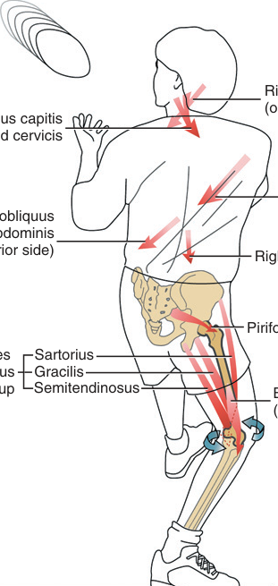
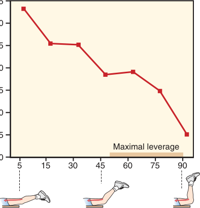
TẬP TRUNG ĐẶC BIỆT 13.9 — Cơ khoeo: "Chìa khóa của gối," và nhiều hơn nữa (Popliteus Muscle: The "Key to the Knee," and More)
Các chức năng chính xác của cơ khoeo (popliteus) vẫn chưa được nhận thức đầy đủ, mặc dù các nghiên cứu đã có từ nhiều thập kỷ trước. Gần đây, cơ này nhận được sự quan tâm từ các nhà chấn thương chỉnh hình trong bối cảnh phẫu thuật tái tạo góc sau–ngoài của gối. Vị trí sâu của cơ khoeo khiến việc nghiên cứu qua các điện cực EMG bề mặt trở nên khó khăn, mặc dù điều này đã được thực hiện. Nhiều chức năng được đề xuất của cơ này, được mô tả ở đây, dựa trên vị trí giải phẫu và đường lực (line of force).
Người ta thường tin rằng cơ khoeo là một cơ xoay trong và gập của khớp gối. Khi gối đang duỗi và đã khóa chuẩn bị gập, cơ khoeo tạo ra một mô men xoay trong quan trọng giúp mở khóa gối về mặt cơ học. (Hãy nhớ rằng gối được khóa cơ học bằng sự kết hợp giữa duỗi và xoay ngoài của khớp.) Ví dụ, mở khóa gối để gập vào tư thế ngồi xổm đòi hỏi xương đùi xoay ngoài một chút trên xương chày tương đối cố định. Khả năng xoay ngoài xương đùi của cơ khoeo (và do đó xoay trong gối) có thể nhận thấy rõ bằng cách quan sát đường lực chéo của cơ khi nó băng qua phía sau gối (xem Hình 13.9).
Đường kéo chéo của cơ khoeo mang lại cho nó đòn bẩy thuận lợi nhất trong tất cả các cơ gập gối để tạo ra xoay trục trên một gối đang duỗi. Đường lực của các cơ gập gối khác gần như thẳng đứng khi gối duỗi, điều này làm giảm mạnh tiềm năng mô men xoay trục của chúng. Do đòn bẩy tăng cường của cơ khoeo trong việc khởi phát xoay trong của gối đã khóa, nó còn được gọi là "chìa khóa của gối" (key to the knee).
Một chức năng khác của cơ khoeo là giúp ổn định động cả hai phía ngoài và trong của gối. Cùng với các mô khác trong góc sau–ngoài của gối, cơ khoeo, thông qua gân trong bao khớp khỏe của nó, tạo ra một lực chống đáng kể trước tải trọng varus (varus, gập vào trong) đặt lên gối. Cơ khoeo cũng ổn định phía trong của gối bằng cách giảm tốc và hạn chế xoay ngoài quá mức của gối. Tác động này, thực hiện thông qua hoạt động lệch tâm, có thể làm giảm ứng suất đặt lên dây chằng bên chày (medial collateral ligament), bao khớp sau–trong, và dây chằng chéo trước (ACL).
Cơ khoeo từ lâu đã được công nhận là một bộ ổn định tĩnh tổng quát của gối ở tư thế ngồi xổm một phần. Tác động được đề xuất này — vốn đã được củng cố bởi các nghiên cứu dùng điện cực EMG cấy đặt và bề mặt — có thể hỗ trợ dây chằng chéo sau (PCL) trong việc chống lại sự dịch chuyển về phía trước của xương đùi so với xương chày khi duy trì tư thế ngồi xổm một phần.
Sản xuất mô men tối đa của các cơ gập–xoay gối (Maximal Torque Production of the Knee Flexor-Rotator Muscles)
Mô men gập gối tối đa với sức tối đa thường lớn nhất khi gối nằm trong 20 độ cuối của duỗi hoàn toàn, sau đó giảm dần đều khi gối được gập dần. Một đồ thị tiêu biểu của số liệu mô men đã công bố từ các nam giới khỏe mạnh được trình bày trong Hình 13.33. Các đối tượng tạo ra mô men gập gối đẳng trục tối đa với sức tối đa, với khớp háng được giữ ở tư thế duỗi. Mặc dù một khoảng giá trị rộng đã được báo cáo, nhìn chung, gân kheo có cánh tay đòn gập lớn nhất (đòn bẩy) ở 50 đến 90 độ gập gối (xem thanh trên trục ngang trong đồ thị của Hình 13.33). Số liệu mô men–góc được mô tả trong Hình 13.33 chỉ rõ rằng gân kheo (và có thể cả các cơ gập gối khác) tạo ra mô men lớn nhất ở các góc gối trùng khớp với chiều dài cơ tương đối kéo dài, chứ không phải đòn bẩy cao. (Như đã ghi chú trong Hình 13.26, điều này tương phản nhẹ với cơ tứ đầu đùi, nơi mô men duỗi gối tối đa với sức tối đa trùng một phần với điểm trong tầm chuyển động mà đòn bẩy là lớn nhất.) Gập háng để kéo dài gân kheo thúc đẩy mô men gập gối thậm chí lớn hơn. Mối quan hệ chiều dài–căng dường như là một yếu tố rất có ảnh hưởng trong việc xác định tiềm năng mô men gập của các cơ gân kheo.
Rất ít số liệu về tiềm năng mô men tối đa của các cơ xoay trong và xoay ngoài của gối. Khi được kiểm tra đẳng tốc (isokinetically) với gối gập 90 độ, các cơ xoay trong và xoay ngoài tại gối đã được cho thấy tạo ra các mô men đỉnh gần như bằng nhau.
Thoáng nghĩ thì những kết quả này có vẻ đáng ngạc nhiên, xét đến việc số lượng các cơ xoay trong nằm ở mặt trong của trục trước–sau tại khớp gối nhiều hơn hẳn, so với chỉ một cơ xoay ngoài duy nhất tại khớp gối (tức là cơ nhị đầu đùi). Sự mâu thuẫn tưởng chừng ấy có thể được lý giải một phần bởi thực tế là, khi khớp gối gập 90 độ, cơ nhị đầu đùi có cánh tay đòn xoay trục lớn gấp ba lần so với giá trị trung bình của tất cả các cơ xoay trong. Điểm bám xa bị dịch chuyển về phía ngoài của cơ nhị đầu đùi lên đầu trên xương mác dường như làm gia tăng cánh tay đòn xoay của cơ này.
Cánh tay đòn xoay trục trung bình của gần như tất cả các cơ xoay khớp gối đều lớn nhất trong khoảng 70 đến 90 độ gập gối, nơi đường sức của các cơ gần như vuông góc với trục xoay dọc (thẳng đứng) đi qua xương chày. Ngoại lệ duy nhất đối với quy luật thiết kế này là cơ khoeo, cơ có cánh tay đòn lớn nhất để xoay trong khớp gối ở khoảng 40 độ gập.
Trong điều kiện bình thường, khớp gối được sắp thẳng hàng trên mặt phẳng trán ở khoảng 5 đến 10 độ valgus. Sự lệch khỏi cách sắp thẳng hàng này được gọi là genu valgum quá mức (chân chữ X) hoặc genu varum (chân vòng kiềng).
Genu varum với viêm xương khớp một khoang của khớp gối (Genu Varum with Unicompartmental Osteoarthritis of the Knee)
Trong khi đi ở tốc độ bình thường trên địa hình bằng phẳng, lực phản ứng khớp (joint reaction force) tại khớp gối đạt khoảng 2,5 đến 3 lần trọng lượng cơ thể. Các lực này đạt đỉnh ở khoảng 15% và 45% của chu kỳ đi (tương ứng với giai đoạn chống khá sớm và khá muộn). Lực này được tạo ra chủ yếu do tương tác giữa các lực do các cơ tạo ra trên toàn bộ chi dưới và lực phản ứng của mặt đất (ground reaction force). Trong suốt gần như toàn bộ giai đoạn chống, lực phản ứng của mặt đất thường đi ngay phía ngoài gót chân, rồi hướng lên trên và nằm ở mặt trong của khớp gối khi lực này tiếp tục hướng về trọng tâm của toàn bộ cơ thể. Như được mô tả trong Hình 13.34, do đi qua mặt trong của trục trước–sau tại khớp gối, lực phản ứng của mặt đất tạo ra một mô men varus (kèm theo 2 đến 3 độ khép khớp gối) ở mỗi bước đi. Kết quả là, khi đi, lực phản ứng khớp thông thường lớn hơn gấp vài lần ở khoang khớp trong so với khoang khớp ngoài. Trong suốt cuộc đời, tải trọng varus lặp đi lặp lại này được hấp thụ một phần bởi độ căng của các cấu trúc, bao gồm dây chằng bên mác và dải chậu–gối.
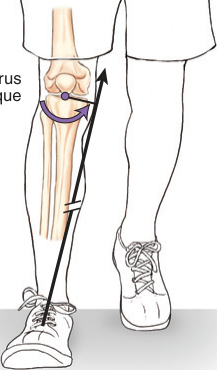
Phần lớn mọi người chịu đựng việc tải trọng động không đối xứng lên khớp gối mà ít hoặc không gặp khó khăn gì. Tuy nhiên, sụn khớp ở một số người không chịu nổi sự bất đối xứng và sự mài mòn quá mức liên quan, và cuối cùng phát triển thành viêm xương khớp một khoang (unicompartmental osteoarthritis) (khoang trong). Việc tăng 20% mô men varus đỉnh tại khớp gối trong khi đi đã được chứng minh là có liên quan đến việc tăng gấp sáu lần nguy cơ mắc viêm xương khớp khoang trong. Sự mỏng đi của sụn khớp ở mặt trong có thể làm khớp gối nghiêng thành genu varum, tức là dị dạng chân vòng kiềng (Hình 13.35A). Dị dạng này có thể khởi phát một vòng luẩn quẩn: dị dạng varus làm tăng tải trọng lên khoang khớp trong, dẫn đến mất khoang khớp trong nhiều hơn, chuyển động khép khớp gối nhiều hơn, tăng độ căng kéo lên dây chằng bên mác, tiếp tục tăng tải trọng khớp trong, và cứ thế tiếp diễn. Hình 13.35B cho thấy phim X-quang của genu varum hai bên. Cả hai khớp gối đều có dấu hiệu viêm xương khớp khớp trong (tức là mất khoang khớp trong và xương phản ứng phì đại quanh khoang trong). Việc điều trị genu varum nặng thường cần đến phẫu thuật, chẳng hạn như phẫu thuật cắt nêm xương chày cao (high tibial (wedge) osteotomy). Các mục tiêu tối hậu của phẫu thuật này là chỉnh lại dị dạng varus và giảm ứng lực có khả năng gây hại lên khoang khớp trong (xem Hình 13.35C).
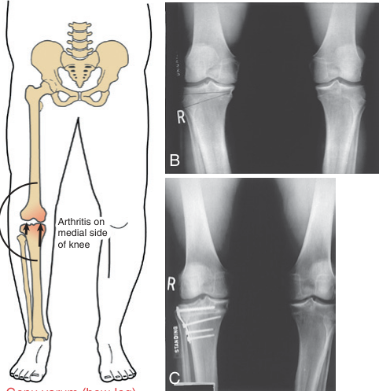
Ngoài phẫu thuật, các biện pháp bảo tồn khác đã được phát hiện có thể làm giảm các lực tiếp xúc lên mặt trong của khớp gối ở những người bị viêm khớp khoang trong. Các can thiệp này bao gồm nẹp gối tư thế valgus (valgus knee bracing), giày chuyên biệt, điều chỉnh kiểu đi, giảm tốc độ đi bộ, và tăng cường cơ mông lớn cùng cơ căng mạc đùi như một cách để truyền một mô men hướng về valgus đến khớp gối thông qua lực kéo lên dải chậu–gối. Ngoài ra, một đế lót nêm về phía ngoài (laterally wedged insole) mang trong giày đã được chứng minh là tạo ra một mô men valgus lên khớp gối trong giai đoạn chống. Điều này, đến lượt nó, làm giảm mô men varus thực (net) và độ khép của khớp gối ở mỗi bước đi, qua đó giảm tải trọng nén lên khoang khớp trong của khớp gối. Mặc dù lượng giảm tải khớp và hiệu quả về mặt lý thuyết do việc mang đế lót nêm ngoài mang lại đã bị đặt nghi vấn, các nghiên cứu đã báo cáo rằng can thiệp tương đối đơn giản này có thể giảm đau và cải thiện chức năng ở những người bị viêm xương khớp khoang trong.
Genu valgum quá mức (Excessive Genu Valgum)
Một số yếu tố có thể dẫn đến genu valgum quá mức, hay chân chữ X (Hình 13.36). Các yếu tố này bao gồm chấn thương trước đó, thiên khiết di truyền, chỉ số khối cơ thể cao, và tình trạng lỏng lẻo của các dây chằng. Genu valgum cũng có thể do sự lệch trục bất thường hoặc yếu cơ ở một trong hai đầu chi dưới gây ra hoặc bị làm nặng thêm. Như chỉ ra trong Hình 13.36, tiềm năng mô men của cơ chế cơ dạng háng bị giảm có thể — ít nhất về mặt lý thuyết — làm tăng tải trọng valgus lên khớp gối. Trong một số trường hợp, bàn chân xoay sấp quá mức có thể làm tăng tải trọng valgus lên khớp gối bằng cách cho phép đầu xa xương chày nghiêng ("dạng") ra xa hơn nữa khỏi đường giữa của cơ thể. Theo thời gian, ứng suất căng đặt lên dây chằng bên chày (MCL) và bao khớp kế cận có thể làm yếu các mô này. Như đã mô tả trước đó trong chương này, tình trạng valgus quá mức của khớp gối có thể tác động tiêu cực đến sự di chuyển theo đường rãnh (tracking) của khớp bánh chè–đùi và tạo thêm ứng lực lên dây chằng chéo trước (ACL).
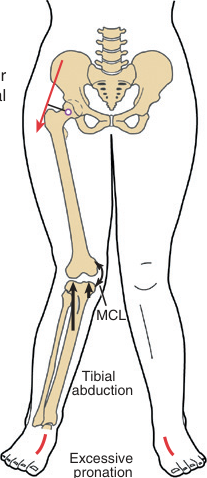
Đứng với dị dạng valgus khoảng 10 độ lớn hơn mức bình thường sẽ hướng phần lớn lực nén khớp về khoang khớp ngoài. Ứng lực khu trú tăng lên này có thể dẫn đến viêm xương khớp một khoang (khoang ngoài), và đã được chứng minh là xảy ra thường xuyên hơn ở phụ nữ. Phẫu thuật thay khớp gối toàn phần có thể được chỉ định để chỉnh dị dạng valgus, đặc biệt nếu dị dạng có tiến triển, gây đau, hoặc gây mất chức năng.
Genu recurvatum (Genu Recurvatum)
Duỗi toàn phần kèm xoay ngoài nhẹ là vị trí khép kín (close-packed position), ổn định nhất của khớp gối. Khớp gối có thể được duỗi quá vị trí trung lập thêm 5 đến 10 độ, mặc dù mức này biến đổi rất nhiều giữa các cá nhân. Đứng với khớp gối ở tư thế duỗi toàn phần thường làm đường trọng lực của trọng lượng cơ thể đi hơi phía trước trục xoay trong–ngoài tại khớp gối. Do đó, trọng lực tạo ra một mô men duỗi gối nhẹ có thể tự nhiên hỗ trợ việc khóa khớp gối, cho phép cơ tứ đầu đùi thả lỏng không liên tục trong khi đứng. Bình thường, mô men duỗi được trọng lực hỗ trợ này bị cản trở chủ yếu bởi độ căng thụ động của bao khớp sau bị kéo giãn và các cơ gập gối bị kéo giãn, bao gồm cơ bụng chân (gastrocnemius).
Duỗi quá mức vượt quá 10 độ so với trung lập thường được gọi là genu recurvatum (bắt nguồn từ tiếng Latin: genu nghĩa là gối + recurvare nghĩa là cong ngược về sau). Các trường hợp recurvatum nhẹ có thể gặp ở những người vốn khỏe mạnh, thường do tình trạng lỏng lẻo lan tỏa của các cấu trúc sau của khớp gối. Nguyên nhân chính của genu recurvatum nặng hơn là một mô men duỗi gối (thực net) trội mạn tính, mà cuối cùng sẽ kéo giãn quá mức các cấu trúc sau của khớp gối. Mô men duỗi gối trội này có thể bắt nguồn từ việc kiểm soát tư thế kém hoặc từ bệnh thần kinh–cơ gây co cứng các cơ tứ đầu đùi và/hoặc liệt các cơ gập gối.
TẬP TRUNG ĐẶC BIỆT 13.10 — Báo cáo trường hợp: Cơ chế bệnh lý và điều trị genu recurvatum nặng (Case Report: Pathomechanics and Treatment of Severe Genu Recurvatum)
Hình 13.37A cho thấy một trường hợp genu recurvatum nặng của khớp gối trái do liệt mềm (flaccid paralysis) các cơ thứ phát sau bệnh bại liệt (polio) mắc phải 30 năm trước đó. Dị dạng đã tiến triển chậm trong 20 năm trước trong khi người bệnh vẫn tiếp tục đi lại mà không đeo nẹp khớp gối. Bệnh nhân bị liệt một phần cơ tứ đầu đùi và các cơ gập háng bên trái nhưng liệt hoàn toàn các cơ gập gối trái. Khớp cổ chân trái của bệnh nhân — vốn bị liệt hoàn toàn — đã được phẫu thuật hàn cố định ở khoảng 25 độ gập lòng bàn chân.
Một số yếu tố liên quan mật thiết với nhau đã góp phần hình thành dị dạng nặng được mô tả trong Hình 13.37A. Do vị trí gập lòng bàn chân cố định của cổ chân, xương chày phải bị nghiêng về phía sau để đáy bàn chân tiếp xúc trọn vẹn với mặt đất. Phẫu thuật này vốn được thiết kế 30 năm trước như một cách để cung cấp cho khớp gối sự ổn định lớn hơn ở tư thế duỗi. Tuy nhiên, qua những năm tháng, vị trí nghiêng về sau của xương chày đã dẫn đến việc kéo giãn quá mức các cấu trúc sau của khớp gối, mà cuối cùng dẫn đến dị dạng duỗi quá mức. Điều đặc biệt quan trọng là việc liệt hoàn toàn các cơ gập của khớp gối đã không tạo ra bất kỳ lực cản cơ trực tiếp nào chống lại dị dạng duỗi quá mức tiếp theo của khớp gối. Hơn nữa, dị dạng duỗi quá mức càng lớn thì cánh tay đòn mô men ngoài (EMA) sẵn có cho trọng lượng cơ thể để duy trì dị dạng càng dài. Không có nẹp cho khớp gối, dị dạng duỗi quá mức đã tạo ra một vòng luẩn quẩn, cho phép kéo giãn liên tục các cấu trúc sau của khớp gối, làm tăng chiều dài cánh tay đòn mô men ngoài, mô men ngoài dạng duỗi lớn hơn, và sự tiến triển liên tục của dị dạng.
Một chủ đề lặp lại trong chương này là thực tế rằng khớp gối hoạt động như mắt xích giữa của chi dưới, và do đó dễ bị tổn thương bởi các tải trọng làm dị dạng xuất phát từ bệnh lý cơ xương khớp ở một trong hai đầu chi dưới. Báo cáo trường hợp này cho thấy một cổ chân gập lòng bàn chân quá mức và cố định có thể, qua nhiều năm, khiến một người dễ mắc genu recurvatum như thế nào. Như được mô tả trong Hình 13.37B, một cách thay đổi giày dép khá đơn giản và ít tốn kém đã được dùng để điều trị dị dạng duỗi quá mức. Việc mang giày thể thao có gót được "nâng cao" đã mang lại hiệu quả giảm rõ rệt mức độ nặng của genu recurvatum. Gót giày nâng cao làm xương chày và khớp gối nghiêng về phía trước, qua đó giảm đáng kể chiều dài cánh tay đòn mô men ngoài gây dị dạng tại khớp gối. Trọng lượng cơ thể khi đó tạo ra ít mô men duỗi quá mức hơn tại khớp gối, được kiềm chế bởi xương chày nghiêng về trước và sự cứng chắc do khớp cổ chân được hàn cố định mang lại.
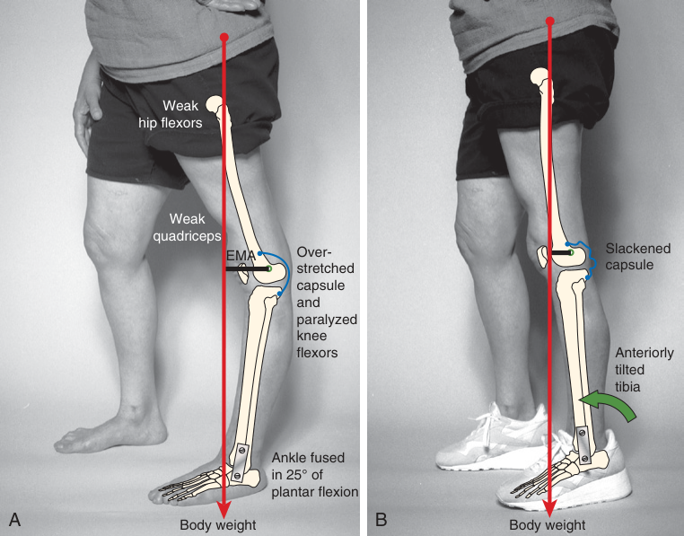
Khác với các khớp khác của chi dưới, sự ổn định của khớp gối phụ thuộc ít hơn vào sự khớp khít giữa các bề mặt xương và nhiều hơn vào các cơ xung quanh cùng các mô liên kết quanh khớp. Việc thiếu ràng buộc bằng xương đối với phần lớn các chuyển động của khớp gối làm tăng phạm vi chuyển động của nó, nhưng đổi lại là làm tăng khả năng bị chấn thương của khớp gối. Dây chằng bên chày (MCL), bao khớp sau–trong, và dây chằng chéo trước (ACL) đặc biệt dễ bị chấn thương từ các lực valgus và lực xoay trục lớn tác động lên mặt ngoài của chi dưới đang chống tải, đặc biệt nếu khớp gối đang ở hoặc gần tư thế duỗi toàn phần. Gối ở tư thế duỗi — vị trí khép kín (close-packed position) của khớp — làm căng phần lớn các mô. Mặc dù độ căng trước của dây chằng (ligamentous pretension) này mang lại sự bảo vệ lớn hơn cho khớp gối, các dây chằng lại nằm gần điểm hỏng cơ học của chúng hơn và do đó dễ bị tổn thương hơn khi chịu thêm ứng suất.
Phòng ngừa chấn thương khớp gối là một chủ đề quan trọng trong y học thể thao và đòi hỏi sự quan tâm và nghiên cứu liên tục. Mặc dù có thể giảm được tần suất chấn thương khớp gối trong một số môn thể thao không tiếp xúc, việc hoàn toàn tránh được chấn thương khớp gối gần như là bất khả thi trong một số môn thể thao tiếp xúc có vận tốc cao, chẳng hạn như bóng bầu dục Mỹ (American football) hoặc rugby. Tuy nhiên, sự bảo vệ có thể được tối đa hóa bằng cách cải thiện khả năng của vận động viên trong việc hấp thụ hoặc — khi khả thi — tránh trọn vẹn tác động toàn phần của cú va chạm. Điều này có thể đạt được thông qua việc thiết kế tốt hơn các dụng cụ và môi trường thi đấu, và xây dựng các chương trình huấn luyện nhằm tăng cường và rèn luyện cơ bắp đầy đủ, tăng khả năng kiểm soát và sự linh hoạt của các chuyển động đặc thù môn thể thao, và cải thiện cảm giác tự thân (proprioception) của vận động viên. Việc xác định các phương pháp dự phòng này thành công như thế nào và có thành công hay không đòi hỏi các nghiên cứu có hệ thống và có kiểm soát do nhiều chuyên gia y tế, giáo dục thể chất và y khoa thực hiện.
Như đã mô tả trước đó trong chương này, sinh cơ học của khớp gối chịu ảnh hưởng mạnh từ vị trí trung gian của nó giữa háng và bàn chân. Khi chống tải, vị trí của háng ảnh hưởng trực tiếp đến vị trí của khớp gối. Sự phụ thuộc động học chặt chẽ này có những hàm ý lâm sàng quan trọng. Hãy cân nhắc chẳng hạn, rằng sự co của cơ mông lớn có thể hỗ trợ gián tiếp việc duỗi gối với điều kiện bàn chân được đặt vững chắc trên mặt đất. Khái niệm này rất quan trọng khi hướng dẫn một người bị cắt cụt chi trên mức gối (transfemoral amputation) leo cầu thang trong khi mang chân giả trên gối (above-the-knee prosthesis). Nhiều ví dụ lâm sàng khác liên quan đến vai trò của các cơ dạng háng và các cơ xoay ngoài háng trong việc kiểm soát cách sắp thẳng hàng của khớp gối trên mặt phẳng trán và mặt phẳng ngang. Khái niệm này được áp dụng sâu rộng trong điều trị hoặc dự phòng chấn thương dây chằng chéo trước (ACL), sự di chuyển bất thường của bánh chè (tracking), hoặc viêm xương khớp của khớp gối. Chương tiếp theo sẽ mô tả các xương và khớp của cổ chân và bàn chân ảnh hưởng đến cách sắp thẳng hàng của cẳng chân như thế nào, điều mà cuối cùng cũng ảnh hưởng đến độ căng bên trong các cấu trúc của khớp gối.
Các chuyển động đặc trưng được cho phép tại khớp gối có thể quan sát được trong nhiều hoạt động có sự tham gia của toàn bộ chi dưới. Hãy cân nhắc chẳng hạn, một người nhảy cao lên không trung. Trong pha chuẩn bị của cú nhảy, cơ thể hạ xuống khi háng và gối gập và các cổ chân gập lưng bàn chân (dorsiflexion). Hành động này kéo giãn các cơ hai khớp (biarticular) thích hợp như một cách để khuếch đại tác động đẩy tới của chúng với vai trò là các cơ duỗi háng–gối và các cơ gập lòng bàn chân cổ chân. Khi được phối hợp thời điểm tối ưu, các hành động này đẩy cơ thể tiến lên và kéo dài cơ thể về mặt chức năng, tối đa hóa quãng đường của cú nhảy. Một người bị hạn chế chuyển động, đau, hoặc yếu đáng kể các cơ háng, gối hoặc cổ chân tất nhiên sẽ gặp rất nhiều khó khăn khi thực hiện hoạt động này.
Mặc dù xoay trục của khớp gối là thiết yếu đối với kiểu đi bình thường, biểu hiện đầy đủ của chuyển động này rõ ràng nhất trong các hoạt động xương đùi trên xương chày (femoral-on-tibial), trong đó xương đùi (và phần còn lại của thân trên) xoay tương đối so với cẳng chân bị cố định. Chuyển động này là nền tảng cho chạy bộ và thay đổi hướng nhanh chóng, cũng như nhiều hoạt động thể thao, kể cả khiêu vũ. Chuyển động xương đùi trên xương chày này được dẫn hướng và ổn định bởi sự kích hoạt cơ, trọng lượng cơ thể, sự khớp khít về mặt khớp giữa các mỏm cầu xương đùi và các sụn chêm, và độ căng của một số dây chằng. Như sẽ được mô tả trong chương tiếp theo, xương chày và xương sên (talus) thường cũng tham gia hoạt động này bằng cách xoay tương đối so với xương gót (calcaneus) bị cố định. Đau, yếu cơ, hoặc giảm chuyển động ở bất kỳ khớp đơn lẻ nào trong chi dưới sẽ đòi hỏi một sự bù trừ cơ xương khớp nào đó ở một hoặc một vài khớp khác. Các sự bù trừ như vậy thường đưa ra những manh mối quan trọng về nguyên nhân nền tảng của nguồn gốc cơ chế bệnh lý.
KẾT NỐI LÂM SÀNG 13.1 — Nữ vận động viên có nguy cơ bị chấn thương dây chằng chéo trước cao hơn (Female Athletes at a Greater Risk for Anterior Cruciate Ligament Injury)
Tài liệu nghiên cứu đã ghi nhận rằng các vận động viên nữ có nguy cơ bị chấn thương dây chằng chéo trước (anterior cruciate ligament, ACL) cao hơn ít nhất từ ba đến năm lần so với nam giới thi đấu ở mức độ tương đối tương đương trong cùng một môn thể thao. Nguy cơ là cao nhất ở các môn thể thao không tiếp xúc có chứa các động tác nhảy, tiếp đất và xoay trục mạnh mẽ, chẳng hạn như các động tác xảy ra trong bóng rổ, bóng đá và thể dục dụng cụ. Hơn nữa, đã có thông báo rằng nữ giới có nguy cơ cao hơn trong việc chịu một chấn thương ACL thứ hai ở đầu gối bên đối bên, thay vì ở bên vốn đã từng bị chấn thương. Nguy cơ chấn thương nói chung tăng cao, kết hợp với số lượng nữ trẻ ngày càng gia tăng tham gia thể thao ở bậc trung học và đại học, đã dẫn đến sự gia tăng đáng kể số lượng chấn thương ACL trong nhóm dân số này.
Đã có nhiều nghiên cứu tập trung vào những nguyên nhân tiềm ẩn gây ra sự chênh lệch giữa hai giới trong các chấn thương ACL. Việc hiểu tại sao nữ giới có nguy cơ chấn thương cao hơn là một bước thiết yếu để phát triển các biện pháp phòng ngừa hiệu quả. Các nghiên cứu đã tập trung vào nhiều yếu tố nguy cơ, trong đó nhiều yếu tố được liệt kê trong Bảng 13.7. Mặc dù đối với phần lớn các yếu tố này, người ta đã nêu ra ở mức độ nào đó mối quan hệ nhân–quả thực tế hoặc mang tính lý thuyết, nhưng một mối quan hệ nhân quả dứt khoát và phổ quát là khó thiết lập. Cần nhiều nghiên cứu hơn nữa trong lĩnh vực này để phát triển các chiến lược điều trị nhằm phòng ngừa chấn thương ACL ở cả nữ giới lẫn nam giới.
Các yếu tố nguy cơ liên quan đến kiểm soát thần kinh–cơ đã nhận được sự quan tâm đáng kể từ giới y học thể thao. Đặc biệt, các nhà nghiên cứu đã tìm hiểu những khác biệt cụ thể trong cách nữ giới và nam giới tiếp đất sau một cú nhảy. Một số nghiên cứu đã chứng minh rằng nữ giới thường tiếp đất với đầu gối ở tư thế gập ngoài (valgus) nhiều hơn so với nam giới. Cách tiếp đất này đã được nêu bật trước đó trong Hình 13.21. Tiếp đất theo cách này, đặc biệt nếu xảy ra bất ngờ và không được bảo vệ bằng sự hoạt hóa cơ cụ thể, có thể tạo ra các lực căng kéo lớn và có khả năng gây hại lên dây chằng chéo trước, cũng như dây chằng bên chày (medial collateral ligament, MCL). Tư thế đầu gối có hại tiềm tàng này trong các thao tác tiếp đất hoặc đổi hướng có thể phát sinh từ sự suy giảm kiểm soát hoặc sức mạnh của các cơ vùng đầu gối (tức là các thành phần khác nhau trong cơ tứ đầu đùi và nhóm gân kheo), hoặc, thêm vào đó, từ sự suy giảm kiểm soát hoặc sức mạnh của các cơ dạng và cơ xoay ngoài khớp hang. Như được chỉ ra trong Hình 13.21, sự yếu hoặc kiểm soát kém của các cơ dạng và cơ xoay ngoài khớp hang cho phép khớp hang (xương đùi) giữ một tư thế tương đối khép và xoay trong—đó là các động học góp phần mạnh mẽ vào tư thế gập ngoài (valgus) và xoay ngoài quá mức của đầu gối.
Hơn nữa, phần lớn các nghiên cứu đã cho thấy nữ giới tiếp đất sau cú nhảy với thân mình, khớp hang và các đầu gối ở tư thế duỗi hơn một chút (ít gập hơn) so với nam giới—thường được gọi là kiểu tiếp đất “cứng” hoặc “thẳng đứng”. Các nghiên cứu điện cơ đồ (electromyographic, EMG) cũng nhất quán cho thấy nữ giới thể hiện tỷ lệ hoạt hóa gân kheo/cơ tứ đầu đùi giảm so với nam giới tại thời điểm tiếp đất hoặc ngay sau đó. Người ta đã suy luận rằng mức hoạt hóa cơ tứ đầu đùi tương đối lớn hơn ở nữ giới làm tăng sự dịch chuyển trước của xương chày và nhờ đó làm tăng sự căng giãn (strain) của ACL, đặc biệt khi đối tượng tiếp đất với các đầu gối nghiêng về phía duỗi nhiều hơn. Việc kết hợp kịch bản này với một lực gập ngoài (valgus) kèm xoay trục theo trục dọc lớn và bất ngờ tác động lên đầu gối là một tình huống có khả năng gây hại.
Các chương trình phòng ngừa đã được phát triển nhằm giảm chấn thương ACL ở các vận động viên nữ, phổ biến nhất là cho môn bóng đá. Ngoài trọng tâm truyền thống là nâng cao sức mạnh của các cơ chi dưới và các cơ “lõi” (thân mình), tính dẻo dai, sức bền khí sắc và các kỹ năng đặc thù của môn thể thao, nhiều chương trình còn đưa các thành phần phối hợp giác vận và “thần kinh–cơ” vào các hoạt động huấn luyện và khởi động. Các thành phần này bao gồm huấn luyện nhanh khéo và huấn luyện plyometric phức tạp và khắc nghiệt hơn, bên cạnh việc giáo dục cho các vận động viên về các kỹ thuật tiếp đất, xoay trục và bước sang ngang an toàn hơn. Sự chú ý đã tập trung vào việc dạy vận động viên tiếp đất theo kiểu “mềm” hơn, với độ gập của thân mình, khớp hang và đầu gối lớn hơn. Một lợi ích được cho là có của chiến lược tiếp đất này là tăng mức hoạt hóa hoặc lực của gân kheo so với cơ tứ đầu đùi. Điều này có thể được giải thích thêm với sự trợ giúp của Hình 13.38, hình này đối chiếu hai thái cực của các kiểu tiếp đất có thể được xem là tương đối không an toàn (A) hoặc an toàn (B) xét về việc kéo giãn quá mức và làm tổn thương ACL. Trong Hình 13.38A, vận động viên tiếp đất với thân mình thẳng đứng hơn, với độ gập khớp hang và đầu gối tương đối vừa phải. Cần lưu ý, đặc biệt, cách cấu hình cơ thể thu được ảnh hưởng đến chiều dài của các mô men ngoài (gập) của trọng lượng cơ thể tại khớp hang và đầu gối. Cụ thể, vectơ trọng lượng cơ thể sinh ra (i) một mô men gập đầu gối tương đối lớn và (ii) một mô men gập khớp hang tương đối nhỏ (xem sự khác biệt về các mô men ngoài trong hình). Các cơ khớp hang và đầu gối phản ứng tương ứng với độ lớn và hướng của các mô men ngoài này. Do đó, tiếp đất với thân mình thẳng đứng hơn đòi hỏi mức hoạt hóa (và lực giả định) tương đối cao từ cơ tứ đầu đùi (như các cơ duỗi gối), trong khi chỉ đòi hỏi mức hoạt hóa tương đối vừa phải từ nhóm gân kheo và cơ mông lớn (như các cơ duỗi khớp hang). Kiểu tiếp đất “chi phối bởi cơ tứ đầu đùi” (quadriceps dominant) được minh họa trong Hình 13.38A, thấy phổ biến hơn ở nữ giới, thuận lợi cho lực trượt trước của xương chày tại đầu gối và sự căng giãn của ACL đi kèm. Các yêu cầu thấp hơn và do đó mức hoạt hóa giảm của các cơ gân kheo hạn chế khả năng của chúng trong việc chống lại sự căng giãn hướng trước tương đối lớn trong ACL do cơ tứ đầu đùi tạo ra.
Mặc dù có thể tồn tại các ngoại lệ, nói chung các vận động viên được hướng dẫn tránh tiếp đất theo cách minh họa trong Hình 13.38A như một cách để giảm thiểu sự căng giãn của ACL. Một dấu hiệu của kiểu tiếp đất không an toàn này thể hiện rõ ở việc các đầu gối đổ về phía trước ngón chân. Trật tự này phản ánh sự xoay về phía trước quá mức của cẳng chân so với bàn chân (tức là gập lưng bàn chân (dorsiflexion) quá mức)—điều cần thiết để giữ vectơ trọng lượng cơ thể nằm trên mặt chân đế (bàn chân) như một phương tiện duy trì thăng bằng khi tiếp đất. Gập lưng bàn chân quá mức thường làm tăng sức căng trong gân Achilles, gân này có xu hướng nhấc gót hơi nhấc khỏi sàn.
Một kiểu tiếp đất được ưa chuộng hơn và thường an toàn hơn được mô tả trong Hình 13.38B. Kiểu tiếp đất này về mặt lý thuyết tạo ra ít căng giãn hơn trên ACL. Lưu ý rằng vận động viên tiếp đất với thân mình, khớp hang và đầu gối ở độ gập lớn hơn so với điều được mô tả trong Hình 13.38A. Kiểu tiếp đất mềm mại hơn, gập nhiều hơn và “nhún nhường” hơn này thay đổi chiều dài tương đối của các mô men ngoài sao cho trọng lượng cơ thể sinh ra (i) một mô men gập đầu gối tương đối nhỏ và (ii) một mô men gập khớp hang tương đối lớn (so với Hình 13.38A). (Lưu ý cách các đầu gối tiếp đất ngay trên hoặc phía sau các ngón chân—thường là một dấu hiệu của kiểu tiếp đất an toàn hơn.) Các cơ phản ứng tương ứng với mức hoạt hóa cơ tứ đầu đùi thường thấp hơn và mức hoạt hóa tương đối lớn hơn của gân kheo hoặc các cơ mông. Mức hoạt hóa đồng thời (hoặc tỷ lệ lực) giữa gân kheo và cơ tứ đầu đùi lớn hơn sẽ hạn chế lực trượt trước tại đầu gối và sự căng giãn hướng trước đi kèm trong ACL. Sự đồng hoạt hóa và sức mạnh cơ cân bằng hơn tại đầu gối cũng có thể bảo vệ chống lại hiện tượng sụp gập ngoài (valgus collapse) quá mức tại đầu gối.
Những lợi ích sinh cơ học được mô tả cho việc tiếp đất với độ nghiêng thân mình tăng lên nhằm giảm sự căng giãn trên ACL. Tuy nhiên, cần nhấn mạnh rằng chính nguyên tắc này cũng có thể được áp dụng chung cho các cách “an toàn” hơn khi thực hiện các động tác chùng chân (lunge) và ngồi xổm (squat). Nguyên tắc chi phối dựa trên sự dịch chuyển nhu cầu cơ từ cơ tứ đầu đùi sang các cơ duỗi khớp hang. Nguyên tắc này cũng có thể được áp dụng để giảm ứng suất lên khớp bánh chè–đùi (patellofemoral joint). Teng và cộng sự đã phân tích 24 người chạy bộ giải trí không có triệu chứng và ước tính rằng mức tăng 10 độ so với góc nghiêng thân mình tự chọn của họ khi chạy dẫn đến sự giảm 13,4% ứng suất đỉnh khớp bánh chè–đùi.
Nhiều chương trình phòng ngừa ACL cho các vận động viên nữ đã được chứng minh là làm giảm tỷ lệ chấn thương. Mặc dù các kết quả này đầy hứa hẹn, tỷ lệ chấn thương ACL chung ở nữ giới vẫn còn cao. Cần nghiên cứu nghiêm ngặt hơn để hiểu rõ hơn các cơ chế thần kinh–cơ và sinh cơ học đứng sau các can thiệp được đề xuất. Điều này sẽ dẫn đến sự cải tiến thêm các chiến lược phòng ngừa và hy vọng cho phép hướng chúng đến một nhóm vận động viên rộng hơn.
| Môi trường (Environmental) | Giải phẫu (Anatomic) | Sinh cơ học (Biomechanic) | Sinh lý (Physiologic) |
|---|---|---|---|
| Loại giày (Footwear) | Xương: trật tự khớp (ví dụ: góc Q, sấp bàn chân) (Bone: joint alignment (e.g., Q-angle, foot pronation)) | Sức mạnh, độ cứng và sự mỏi của cơ (đặc biệt là gân kheo, cơ mông lớn, các cơ dạng và các cơ xoay ngoài khớp hang) (Muscular strength, stiffness, and fatigue (especially hamstrings, gluteus maximus, hip abductors and external rotators)) | Trưởng thành thể chất (trước hoặc sau tuổi dậy thì) (Physical maturation (pre- or post-pubescent)) |
| Dùng nẹp (Bracing) | Chỉ số khối cơ thể (Body mass index) | Tỷ lệ lực giữa gân kheo/cơ tứ đầu đùi (Hamstring/quadriceps strength ratio) | Biến động nội tiết tố (Hormonal fluctuations) |
| Điều kiện thi đấu (Playing conditions) | Chiều rộng hố gian mỏm cầu của xương đùi (Femoral intercondylar notch width) | Kiểm soát thần kinh–cơ của cơ thể trong các thao tác tiếp đất và đổi hướng (Neuromuscular control of the body during landing and cutting maneuvers) | Sự ưu thế bên chi (Limb dominance) |
| Thời tiết (Weather) | Độ dốc hướng sau–dưới của mâm chày ngoài (Posterior-inferior directed slope of lateral tibial plateau) | Diện tích tiết diện ngang (sức mạnh) của dây chằng chéo trước (Cross-sectional area (strength) of ACL) | Giác vận (proprioception) hoặc giác vận động (kinesthesis) (Proprioception or kinesthesis) |
| Độ lỏng khớp tổng thể (Overall joint laxity) | Khuynh hướng di truyền (Genetic predisposition) |
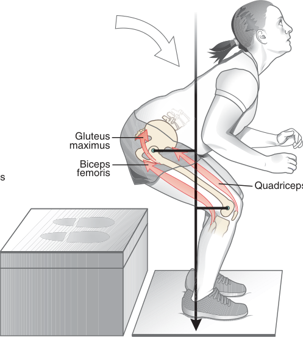
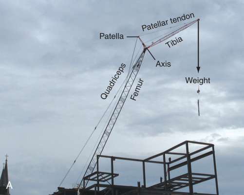
KẾT NỐI LÂM SÀNG 13.2 — Những cân nhắc sinh cơ học thêm về chức năng của bánh chè (Further Biomechanical Considerations on the Function of the Patella)
Như đã mô tả trong phần văn bản, bánh chè đẩy gân của cơ tứ đầu đùi về phía trước, nhờ đó làm tăng cánh tay đòn trong được cơ chế duỗi gối sử dụng. Theo cách này, bánh chè có thể khuếch đại tiềm năng mô men của cơ tứ đầu đùi. Hình 13.39 cho thấy một phép tương tự giữa một cần cẩu cơ khí và đầu gối người. Cả hai đều dùng một “chất chèn” (spacer) để tăng khoảng cách giữa trục xoay và lực “đỡ” bên trong. Cánh tay đòn trong càng lớn, mô men trong sinh ra càng lớn ở mỗi mức lực được cơ tứ đầu đùi của đầu gối người tạo ra (hoặc được truyền qua dây cáp ở cần cẩu).
Trong các trường hợp bệnh lý hoặc chấn thương, bánh chè có thể cần được cắt bỏ bằng phẫu thuật (patellectomy). Một nghiên cứu đã báo cáo rằng cánh tay đòn trong của đầu gối đã cắt bỏ bánh chè giảm từ 4,7 cm xuống 3,8 cm, tính trung bình trên toàn bộ phạm vi chuyển động. Tùy thuộc vào bệnh nhân, nhà lâm sàng có thể cân nhắc tác động chức năng của sự giảm cánh tay đòn (lực đòn bẩy) này theo một trong hai cách. Thứ nhất, lực đòn bẩy giảm này gợi ý rằng, về mặt lý thuyết, tiềm năng mô men duỗi gối tối đa có thể giảm khoảng 19%, mặc dù phì đại cơ hoặc các sự thích nghi thần kinh–cơ khác có thể giảm thiểu sự thiếu hụt mô men này. Tuy nhiên, một cân nhắc thứ hai có thể là, nếu không có bánh chè, một người sẽ cần tạo ra nhiều hơn 23,5% lực để sinh ra một mô men duỗi tương đương với mức trước khi cắt bánh chè. Lực cơ tăng thêm là cần thiết để bù đắp cho sự mất mát đòn bẩy theo tỷ lệ tương ứng. Hệ quả là, lực nén gốc từ cơ lớn hơn được tạo ra lên khớp chày–đùi (tibiofemoral joint), gây ra sự mài mòn lớn hơn trên sụn khớp (Hình 13.40). Do đó, một chức năng tinh tế nhưng quan trọng của bánh chè là làm giảm độ lớn của lực cơ tứ đầu đùi cần thiết để thực hiện các nỗ lực dưới tối đa thông thường, chẳng hạn như bước lên một bậc thềm. Sự giảm nhu cầu này một cách gián tiếp làm giảm tải nén qua sụn khớp và các sụn chêm tại đầu gối. Khi xét trong nhiều năm, sự giảm này sẽ hạn chế sự mài mòn cơ học của đầu gối.
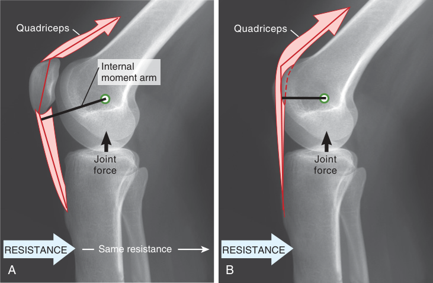
KẾT NỐI LÂM SÀNG 13.3 — Một số cân nhắc sinh cơ học khi thực hiện các bài tập cho khớp gối sau phẫu thuật tái tạo dây chằng chéo trước (Some Biomechanical Considerations When Performing Knee Exercises after Surgical Reconstruction of the Anterior Cruciate Ligament)
Phục hồi chức năng (physical rehabilitation) là một thành phần thiết yếu để việc phục hồi dây chằng chéo trước (ACL) thành công, và đã có khối lượng lớn tài liệu được công bố về các giao thức phục hồi chức năng khác nhau. Các đề tài nhận được sự quan tâm đáng kể trong tài liệu nghiên cứu được liệt kê trong khung sau đây.
Một số đề tài được quan tâm trong tài liệu về phục hồi chức năng ACL sau phẫu thuật (Some Topics of Interest in the Postsurgical ACL Rehabilitation Literature)
Nhiều nghiên cứu đã tập trung vào sự thay đổi chức năng cơ khớp gối sau chấn thương và tái tạo dây chằng chéo trước (ACL). Một vấn đề đáng chú ý là tình trạng ức chế (inhibition), teo cơ (atrophy) và yếu cơ tứ đầu đùi dai dẳng xảy ra tương đối thường xuyên, với khả năng ảnh hưởng tiêu cực đến động học của khớp gối. Mặc dù cơ chế bệnh sinh chính xác của tình trạng yếu cơ sau phẫu thuật này chưa rõ ràng, một số dữ liệu cho rằng sự gia tăng của cytokine gây teo cơ myostatin có thể có liên quan. Dù nguyên nhân là gì, việc giải quyết tình trạng yếu cơ tứ đầu đùi dai dẳng vẫn là một yếu tố quan trọng của phục hồi chức năng sau phẫu thuật.
Các nhà lâm sàng phải có khả năng thiết kế các bài tập tăng cường sức mạnh tạo ra lực cản đáng kể nhằm gây phì đại (hypertrophy) cho hệ cơ tứ đầu đùi, mà không làm giãn kéo (strain) lặp đi lặp lại mảnh ghép ACL được đặt vào vị trí bằng phẫu thuật. Như đã được Escamilla và các cộng sự xem xét kỹ lưỡng, độ giãn quá mức (hoặc mức vừa phải nhưng lặp lại nhiều lần) có thể dẫn đến biến dạng vĩnh viễn của mảnh ghép hoặc làm hỏng sự cố định của mảnh ghép vào xương, từ đó ảnh hưởng đến độ ổn định của khớp gối và hiệu quả của ca phẫu thuật. Nhìn chung, mối quan tâm sau một số ca tái tạo ACL là tránh những tình huống tập luyện trong đó sự co cơ mạnh hoặc lặp lại nhiều lần của cơ tứ đầu đùi sẽ tạo ra sự trượt trước (anterior translation) quá mức hoặc lặp đi lặp lại của xương chày (hoặc trượt sau của xương đùi). Mối quan tâm này thường có ý nghĩa nhất trong giai đoạn đầu của phục hồi chức năng, khi mảnh ghép ACL dễ bị tổn thương hoặc bị giãn quá mức nhất. Mặc dù vấn đề này luôn là một mối quan tâm, mức độ của nó sẽ thay đổi tùy theo tiền sử của bệnh nhân, thời gian sau phẫu thuật, loại mảnh ghép hoặc loại phẫu thuật, cùng sự đào tạo và kinh nghiệm của bác sĩ ngoại khoa chỉnh hình, nhà vận động trị liệu (physical therapist), hoặc huấn luyện viên thể thao (athletic trainer).
Nguyên lý gồm hai phần sau đây là cơ sở để hiểu cách các cơ khớp gối đang hoạt hóa ảnh hưởng đến độ giãn (và do đó là lực căng) trong ACL hoặc trong vật liệu thay thế được ghép: (1) độ giãn của ACL tăng lên khi đường lực của cơ tứ đầu đùi càng đối lập trực tiếp hơn với tác động chính của dây chằng; và (2) đối với nhiều bài tập, mức độ giãn của ACL nói chung tỷ lệ thuận với độ lớn của lực cơ tứ đầu đùi (so với lực gân kheo). Như sẽ được mô tả, đường lực của cơ và lực giữ chính (primary restraint) do ACL cung cấp đều thay đổi theo hàm số của góc khớp gối.
Vì những lý do đã mô tả ở trên, việc tăng cường sức mạnh cơ tứ đầu đùi là một thành phần quan trọng của phục hồi chức năng sau phẫu thuật đối với ACL. Với khớp gối ở tư thế duỗi hoàn toàn, Herzog và Read đã báo cáo rằng đường lực của cơ tứ đầu đùi (gân bánh chè) tạo thành khoảng 20 độ so với trục dài của xương chày (Hình 13.41A). Về mặt lý thuyết, 34% lực do cơ tứ đầu đùi tạo ra (sin của 20°) sẽ kéo xương chày về phía trước, đối lập trực tiếp với tác động chính của ACL. Một mô hình máy tính dựa trên toán học sử dụng dữ liệu khác đã mở rộng khái niệm này trên phạm vi 80 độ gập bằng cách vẽ đồ thị lực căng trong ACL do các lực sinh ra từ sự co cơ tứ đầu đùi đơn độc, ở mức dưới tối đa (submaximal), và do sự đồng hoạt hóa (coactivation) kết hợp của cả cơ tứ đầu đùi và cơ gân kheo gây ra (Hình 13.41). Hãy lưu ý trong mô hình máy tính này lực căng của ACL tăng lên rõ rệt như thế nào trong quá trình co cơ tứ đầu đùi đơn độc, trong khoảng từ 30 đến 40 độ gập đến khi khớp gối duỗi hoàn toàn. Lực căng trong ACL lớn nhất trong quá trình co cơ tứ đầu đùi với khớp gối ở tư thế duỗi, vì khớp gối duỗi tạo ra góc bám vào (angle-of-insertion) lớn nhất của gân bánh chè vào củ chày (tibial tuberosity) (được thể hiện là 20 độ trong Hình 13.41A). Mặc dù không được thể hiện trong đồ thị ở Hình 13.42, điều rõ ràng là lực căng trong ACL sẽ tăng theo tỷ lệ thuận với mức tăng độ lớn của lực trong cơ tứ đầu đùi. Về mặt lý thuyết, khi không có hoạt động của cơ tứ đầu đùi, dù ở góc gập khớp gối nào, phần lớn các sợi của ACL sẽ không phải chịu một tải trọng kéo đáng kể.
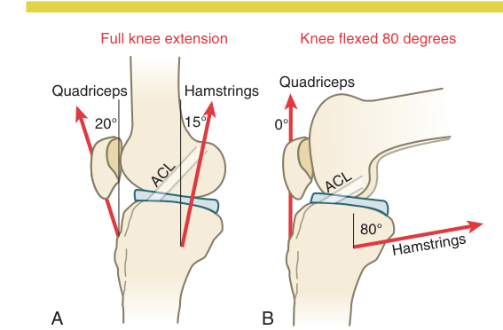
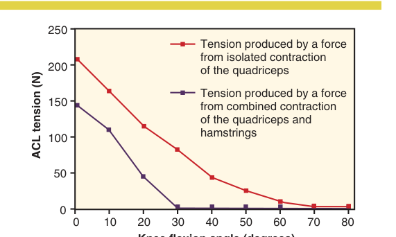
Cần lưu ý một điểm quan trọng trong Hình 13.42 rằng sự đồng hoạt hóa của cả cơ tứ đầu đùi và cơ gân kheo trong 20 đến 30 độ duỗi cuối cùng làm giảm nhưng không loại bỏ hoàn toàn lực trượt trước do cơ tứ đầu đùi tạo ra. Ở các góc khớp gối này, hướng kéo của gân kheo có thành phần dọc tương đối lớn, làm giảm khả năng hoàn toàn bù trừ lực kéo trước mạnh mẽ của cơ tứ đầu đùi lên ACL.
Các khái niệm được mô tả trong những đoạn trên củng cố lời khuyên dành cho một số bệnh nhân là tránh hoặc hạn chế các bài tập trong giai đoạn rất sớm của phục hồi chức năng sau tái tạo ACL mà đòi hỏi sự co cơ tứ đầu đùi mạnh và đơn độc, đặc biệt trong 30 đến 40 độ duỗi cuối cùng. Ví dụ, thông thường được khuyên nên tránh duỗi khớp gối hoàn toàn kiểu xương chày trên xương đùi (tibia-on-femoral) (qua chuỗi động học mở) khi ngồi ở mép bàn điều trị. Bài tập này không chỉ đòi hỏi sự co cơ đơn độc của cơ tứ đầu đùi, mà các yêu cầu mô men ngoài (external torque) đặt lên cơ tứ đầu đùi cũng lớn nhất khi khớp gối duỗi hoàn toàn. Khi khớp gối tiến đến và đạt tư thế duỗi hoàn toàn, cơ tứ đầu đùi phải tạo ra một lực tương đối cao ở góc khớp gối mà tại đó lực cơ đối kháng (kéo giãn) ACL ở mức tối đa. Kiểu bài tập này, nhất là khi được thực hiện với tải trọng ngoài đáng kể đặt gần bàn chân, sẽ tạo ra các mức độ giãn tương đối cao trong ACL. Mặc dù bài tập này có thể được dung nạp tốt trong giai đoạn muộn của phục hồi chức năng, nó vẫn nên được thực hiện một cách thận trọng và với sự hiểu biết đầy đủ về tác động tiềm tàng lên ACL.
Cơ học được mô tả ở trước về lực căng trong ACL bắt nguồn từ cơ tứ đầu đùi thay đổi đáng kể khi được phân tích ở độ gập khớp gối lớn hơn. Ví dụ, với khớp gối gập 80 độ, đường lực của cơ tứ đầu đùi xấp xỉ song song với trục dài của xương chày (xem Hình 13.41B). Phần lớn lực do cơ tứ đầu đùi tạo ra sẽ kéo xương chày lên trên vào sát xương đùi; không phần nào kéo xương chày về phía trước vào sát ACL. Như được ghi nhận trong Hình 13.42, lực căng ACL do sự co cơ tứ đầu đùi đơn độc gây ra gần bằng không ở các góc gập khớp gối lớn hơn 70 độ. Điều quan trọng là, về mặt lý thuyết, sự đồng co của cả cơ tứ đầu đùi và gân kheo tạo ra lực căng bằng không trong ACL ở các góc gập khớp gối lớn hơn 30 độ. Hoạt hóa gân kheo nói chung làm dỡ tải (unload) ACL, rõ rệt nhất khi khớp gối đang gập. Lý do cho điều này thể hiện rất rõ ở khớp gối gập 80 độ được mô tả trong Hình 13.41B. Đường lực của cơ gân kheo ở 80 độ gập khớp gối tạo thành khoảng 80 độ so với trục dài của xương chày. Ở mức gập này, 98% lực trong gân kheo (dựa trên sin của 80°) sẽ kéo xương chày về phía sau, hiệu quả dỡ tải (làm tương đối lỏng ra) ACL. Sự dỡ tải này có thể mang lại hiệu quả bảo vệ chống lại việc giãn kéo ACL hoặc mảnh ghép ACL.
Dựa trên logic được trình bày ở trên, các bài tập liên quan đến vận động kiểu xương đùi trên xương chày (femoral-on-tibial) (chuỗi động học khép) qua các mức gập khớp gối vừa phải được cho là đặt lên ACL các mức độ giãn tương đối thấp và thường chấp nhận được. Ngoài tính chức năng và thực tiễn, các kiểu bài tập này đã trở thành phần ăn sâu vào các giao thức phục hồi chức năng ACL vì chúng đòi hỏi sự hoạt hóa cơ tứ đầu đùi ở vị trí khớp gối gập hơn, và chúng một cách tự nhiên đòi hỏi hoạt hóa cơ tứ đầu đùi cùng với hoạt hóa tăng cường của cơ gân kheo. (Chẳng hạn, các cơ gân kheo là thiết yếu cho việc kiểm soát vận động khớp háng trong hoạt động ngồi xổm (squat).) Như đã nêu ở trước, lực căng trong ACL duy trì ở mức bằng không hoặc gần bằng không khi các cơ được đồng hoạt hóa ở các góc gập khớp gối lớn hơn 30 độ. Các bài tập đòi hỏi sự hoạt hóa đồng thời và tương đối mạnh của cả cơ tứ đầu đùi và gân kheo thường được cho là tạo ra các mức độ giãn tương đối thấp và chấp nhận được trên ACL, đặc biệt khi được thực hiện ở các góc gập lớn hơn 20 độ. Các bài tập và hoạt động cụ thể dựa trên nguyên lý này đã được tổng kết kỹ lưỡng trong tài liệu chuyên ngành.
Lời bình cuối (Closing Comments): Kết nối lâm sàng này mô tả một cách tiếp cận sinh cơ học để hiểu cách hoạt hóa cơ tứ đầu đùi ảnh hưởng đến độ giãn và lực căng lên ACL. Tóm lại, độ giãn trong ACL có thể được giảm thiểu bằng các bài tập hoặc hoạt động (1) đồng hoạt hóa cơ tứ đầu đùi và gân kheo ở các góc gập khớp gối lớn hơn khoảng 20–30 độ, và (2) đòi hỏi lực thấp từ cơ tứ đầu đùi, bất kể góc khớp gối. Mặc dù những nhận định tóm tắt này và dữ liệu được trình bày trong Hình 13.41 và 13.42 rất hữu ích, các nhà lâm sàng phải tính đến các biến số khác khi thiết kế kiểu bài tập phù hợp nhất cho một bệnh nhân cụ thể. Các biến số này bao gồm các đặc điểm riêng của bệnh nhân (nghề nghiệp, tuổi tác, sức khỏe, mức độ hoạt động, v.v.) cùng thời gian sau phẫu thuật và kiểu tái tạo ngoại khoa. Không có cách tiếp cận nào trong việc thiết kế các bài tập tăng cường cơ tứ đầu đùi sau tái tạo ACL là tốt nhất cho tất cả các bệnh nhân và mọi tình huống lâm sàng. Mặc dù chủ đề của phần này tập trung vào việc hiểu cách hạn chế lực căng bắt nguồn từ cơ trong ACL, nó chưa đề cập đến những vấn đề quan trọng không kém là khi nào và ở mức độ nào lực căng nên bị hạn chế. Ở một thời điểm nào đó trong quá trình phục hồi chức năng, lực căng trong ACL (hoặc mảnh ghép) có thể hỗ trợ quá trình chữa lành và thực tế được coi là có tác dụng trị liệu. Các nhà lâm sàng phải liên tục điều chỉnh các giao thức tập luyện cho phục hồi chức năng ACL sau phẫu thuật khi các nghiên cứu mới về sinh cơ học, phẫu thuật, và tính chất vật liệu của ACL cũng như các vật liệu thay thế tiếp tục xuất hiện.
KẾT NỐI LÂM SÀNG 13.4 — Sự cộng hưởng giữa các cơ đơn khớp và cơ hai khớp của khớp háng và gối (Synergy among Monoarticular and Biarticular Muscles of the Hip and Knee)
Các kiểu kết hợp vận động điển hình: duỗi háng–và–gối hoặc gập háng–và–gối (Typical Movement Combinations: Hip-and-Knee Extension or Hip-and-Knee Flexion)
Rất nhiều vận động được thực hiện bởi các chi dưới liên quan đến các hành động theo chu kỳ của duỗi háng–và–gối (hip-and-knee extension) hoặc gập háng–và–gối (hip-and-knee flexion). Các kiểu vận động này là những thành phần cơ bản của đi bộ, chạy, nhảy và leo lên. Duỗi háng–và–gối đẩy cơ thể tiến về phía trước hoặc lên trên. Ngược lại, gập háng–và–gối đưa chi dưới tiến lên hoặc vung về phía trước, hoặc được dùng để hạ cơ thể từ từ xuống sát mặt đất. Các vận động này được điều khiển, một phần, thông qua sự cộng hưởng (synergy) giữa các cơ đơn khớp (monoarticular) và các cơ đa khớp (polyarticular), trong đó nhiều cơ bắc qua cả khớp háng và khớp gối.
Hình 13.43 minh họa sự tương tác giữa các cơ trong pha duỗi háng–và–gối của hoạt động chạy. Nhóm cơ rộng (vastus group) và cơ mông lớn — hai cơ đơn khớp — hoạt động một cách cộng hưởng, cùng với hai cơ hai khớp (biarticular) là cơ bán gân (semitendinosus) và cơ thẳng đùi (rectus femoris). Nhóm cơ rộng của cơ tứ đầu đùi và cơ bán gân đều có hoạt động điện, tuy nhiên mô men ròng của chúng ở khớp gối nghiêng về phía duỗi. Điều này xảy ra do các cơ rộng đang co áp đảo các nỗ lực co của cơ bán gân. Hệ quả là, lực căng tích tụ trong sự kéo giãn cưỡng bức của cơ bán gân bắc qua khớp gối được dùng để hỗ trợ duỗi háng chủ động. Do đó, trong vận động kết hợp duỗi háng–và–gối, cơ bán gân (khi được xét như một toàn thể) duỗi khớp háng nhưng thực tế chỉ co hoặc rút ngắn một khoảng cách tương đối ngắn. Vì biên độ co ngắn nên vận tốc co cũng thấp khi xét trong một khoảng thời gian tương tự.
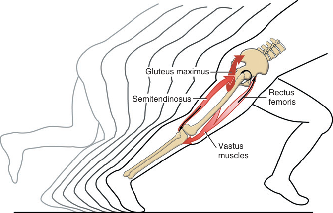
Hành động của cơ bán gân như đã mô tả tạo lợi thế cho việc sinh lực tương đối cao trên mỗi mức điều khiển thần kinh hay nỗ lực. Cơ sở sinh lý cho hành động cơ hiệu quả này nằm ở các mối quan hệ lực–vận tốc và chiều dài–lực căng của cơ (xem Chương 3). Trước hết, xét ảnh hưởng của vận tốc cơ đến việc sinh lực của cơ. Lực của cơ trên mỗi mức nỗ lực tăng lên mạnh mẽ khi vận tốc co bị giảm. Ví dụ, một cơ co với vận tốc bằng 6.3% vận tốc rút ngắn tối đa của nó tạo ra một lực khoảng 75% lực tối đa. Khi giảm vận tốc co xuống chỉ còn 2.2% mức tối đa (tức là rất gần co đẳng sắc/isometric), lực đầu ra tăng lên 90% mức tối đa. Trong vận động duỗi háng–và–gối, các cơ rộng, bằng việc duỗi khớp gối, gián tiếp gia tăng lực duỗi háng thông qua việc làm giảm vận tốc co của cơ bán gân.
Tiếp theo, xét ảnh hưởng của chiều dài cơ đến lực thụ động được tạo ra trong một cơ hai khớp. Dựa trên mối quan hệ chiều dài–lực căng thụ động của cơ, lực cản hoặc lực bên trong của một cơ, chẳng hạn như cơ bán gân, tăng lên khi cơ bị kéo giãn. Lực thụ động được tạo ra trong cơ bán gân đang bị kéo giãn bắc qua khớp gối đang duỗi, trong ví dụ cụ thể này, được "tái chế" và dùng để giúp duỗi háng. Theo cách này, cơ bán gân — cũng như tất cả các cơ gân kheo hai khớp — hoạt động như một "bộ truyền lực" (transducer), chuyển lực vốn cuối cùng được sinh ra bởi các cơ rộng đang co đến khớp háng đang duỗi.
Trong duỗi háng–và–gối chủ động, cơ mông lớn và cơ thẳng đùi có một mối quan hệ tương tự như mối quan hệ đã mô tả giữa các cơ rộng và cơ bán gân. Về bản chất, cơ mông lớn đơn khớp gia tăng lực duỗi gối thông qua ảnh hưởng chi phối của nó đối với duỗi háng. Sự chi phối này, đến lượt nó, kéo giãn cơ thẳng đùi đang hoạt động. Trong ví dụ này, cơ thẳng đùi là bộ truyền lực hai khớp, chuyển lực từ cơ mông lớn sang duỗi khớp gối. Một tóm tắt về những tương tác cơ này cùng các tương tác cơ khác được dùng trong gập háng–và–gối được liệt kê trong Bảng 13.8.
| Phối hợp vận động chủ động | Cơ đơn khớp | Hành động | Bộ truyền lực hai khớp (Biarticular Transducer) | Hành động được gia tăng |
|---|---|---|---|---|
| Duỗi háng và gối chủ động (Active hip and knee extension) | Các cơ rộng (Vasti) | Duỗi gối | Gân kheo hai khớp (Two-joint hamstrings) | Duỗi háng |
| Cơ mông lớn (Gluteus maximus) | Duỗi háng | Cơ thẳng đùi (Rectus femoris) | Duỗi gối | |
| Gập háng và gối chủ động (Active hip and knee flexion) | Cơ chậu–thắt lưng (Iliopsoas) | Gập háng | Gân kheo hai khớp (Two-joint hamstrings) | Gập gối |
| Cơ nhị đầu đùi (đầu ngắn), cơ khoeo (Biceps femoris (short head), popliteus) | Gập gối | Cơ thẳng đùi (Rectus femoris) | Gập háng |
Sự phụ thuộc lẫn nhau về mặt chức năng giữa các cơ duỗi háng–và–gối, cũng như giữa các cơ gập háng–và–gối, cần được cân nhắc khi đánh giá các hoạt động chức năng đòi hỏi những kết hợp vận động chủ động này. Ví dụ, hãy xét các vận động kết hợp duỗi háng–và–gối cần thiết để đứng lên khỏi tư thế ngồi. Sự suy yếu của các cơ rộng có thể gián tiếp gây khó khăn trong duỗi háng, trong khi sự suy yếu của cơ mông lớn có thể gián tiếp gây khó khăn trong duỗi gối. Các chương trình tăng cường cơ có thể được lợi khi thiết kế các thử thách kháng lực mà kết hợp sự cộng hưởng tự nhiên giữa các cơ này. Cũng hãy xét một người bị đau khớp bánh chè–đùi khi co cơ tứ đầu đùi chủ động. Việc khuyến khích người này hoạt hóa các cơ duỗi háng của mình để hỗ trợ duỗi gối có thể làm giảm các yêu cầu chủ động đặt lên cơ tứ đầu đùi, qua đó có khả năng hạ thấp các lực nén đặt lên khớp bánh chè–đùi.
Các kiểu kết hợp vận động không điển hình: gập háng kèm duỗi gối, hoặc duỗi háng kèm gập gối (Atypical Movement Combinations: Hip Flexion and Knee Extension, or Hip Extension and Knee Flexion)
Hãy xét các kiểu vận động chủ động của khớp háng và gối ở trạng thái "lệch pha" (out of phase) so với các kiểu vận động điển hình hơn đã mô tả trước đó. Gập háng có thể xảy ra kèm duỗi gối (Hình 13.44A), hoặc duỗi háng có thể xảy ra kèm gập gối (Hình 13.44B). Các hậu quả sinh lý của những vận động này rất khác so với những gì được mô tả trong Hình 13.43. Trong Hình 13.44A, cơ thẳng đùi hai khớp phải rút ngắn một khoảng cách lớn, và với vận tốc tương đối cao, để đồng thời gập háng và duỗi gối. Ngay cả với nỗ lực tối đa, duỗi gối chủ động thường bị hạn chế trong hành động này. Dựa trên các mối quan hệ chiều dài–lực căng và lực–vận tốc của cơ, cơ thẳng đùi không thể phát triển lực duỗi gối tối đa. Các cơ gân kheo hai khớp cũng bị kéo giãn quá mức bắc qua cả khớp háng và gối, do đó kháng lại duỗi gối một cách thụ động.
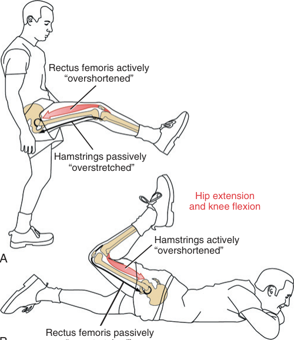
Tình huống được mô tả trong Hình 13.44A cũng áp dụng cho vận động được minh họa trong Hình 13.44B. Các cơ gân kheo hai khớp phải co đến một chiều dài rất ngắn — một vận động thường đi kèm với chuột rút. Hơn nữa, cơ thẳng đùi hai khớp bị kéo giãn quá mức bắc qua cả khớp háng và gối, do đó kháng lại gập gối một cách thụ động. Vì cả hai lý do này, lực gập gối và biên độ vận động thường bị hạn chế bởi vận động lệch pha.
Các vận động không điển hình được minh họa trong Hình 13.44 có thể có một mục đích hữu ích. Hãy xét hành động sút bóng. Năng lượng đàn hồi được tích trữ trong cơ thẳng đùi đang bị kéo giãn bởi vận động chuẩn bị kết hợp duỗi háng và gập gối. Hành động sút bóng liên quan đến sự co nhanh và gần toàn phần của cơ thẳng đùi để đồng thời gập háng và duỗi gối. Mục tiêu của hành động này là tiêu tán toàn bộ lực trong cơ thẳng đùi càng nhanh càng tốt. Ngược lại, các hoạt động như đi bộ, chạy chậm hoặc đạp xe sử dụng các cơ hai khớp theo cách mà các lực được phát triển chậm hơn và theo kiểu lặp lại hoặc theo chu kỳ. Trong các ví dụ này, những thay đổi chiều dài của cơ thẳng đùi và cơ bán gân, chẳng hạn, là tương đối nhỏ trong suốt phần lớn chu kỳ hoạt hóa (như được thể hiện trong Hình 13.43). Theo cách này, các cơ tránh được những chu kỳ lặp đi lặp lại của việc tích trữ rồi ngay lập tức giải phóng một lượng năng lượng tương đối lớn. Các mức lực chủ động và thụ động vừa phải hơn được chia sẻ một cách cộng tác giữa các cơ, qua đó tối ưu hóa hiệu quả chuyển hóa của vận động.
Đáp án cho các câu hỏi nghiên cứu có trên trang web Evolve.
TẤT CẢ VIDEO của chương này có thể được truy cập bằng cách quét mã QR nằm ở bên phải.